五模型 A1–A5 雷达；附属指标为原四模型快照
返回交互网页
STAGE 逐轮原生分数与子目标阶段
原四模型指标快照 · score / 分档定义为远端已有；Opus/Sonnet 兼容解码及四模型阶段聚合为本轮新计算，沿用 N03 方法
热力图只画实际评分回合，圆圈表示成功；空格包括首胜后停止和尚未完成。按现行 19 个代码哈希一致的分档解释分数；未取得 Opus/Sonnet 每次历史运行时的代码指纹，因此阶段解释是现行分档下的兼容解码。二值失败不能恢复阶段，范围不是置信区间。 6 个二值任务仅有成功/失败。多数非二值任务失败时可能降档（+）；insert_key 的 0.15 唯一表示抬起但未插到位；cover_blocks 的 0 分可能为阶段 0–2。pour_by_language 为触发计数，不当作顺序阶段。 六维 D3 的 12 个非二值任务含 pour_by_language 计数任务；本卡的顺序阶段比例使用 11 个 transition 任务，两者分母不同。原始阶段解码及 SG/Q 缺口不变。
| 模型 | 已评分回合 | 二值回合 | 计数触发回合 | 顺序阶段回合 | 其中阶段范围有歧义 |
|---|
| Astra | 109 | 35 | 6 | 68 | 9 |
| Sol 6.1 | 161 | 51 | 8 | 102 | 14 |
| Opus 5.5 | 193 | 62 | 5 | 126 | 31 |
| Sonnet 5.5 | 183 | 50 | 14 | 119 | 32 |
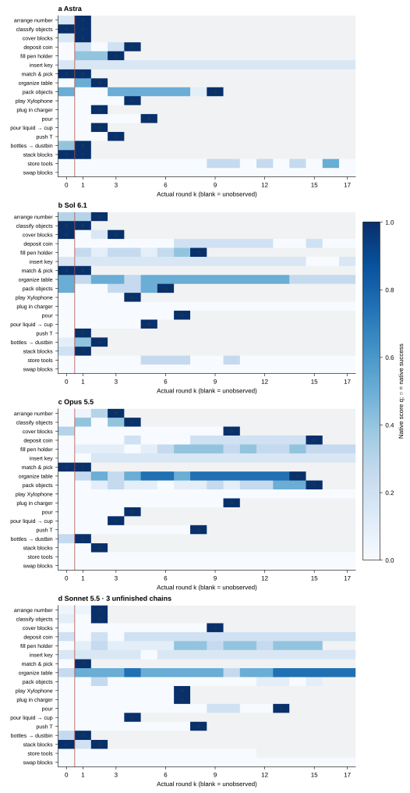
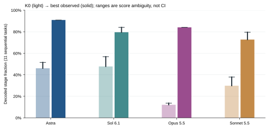
补充数据表
| 任务 | Astra | Sol 6.1 | Opus 5.5 | Sonnet 5.5 |
|---|
| arrange_largest_number | K1: q=1.00 | K2: q=1.00 | K3: q=1.00 | K2: q=1.00 |
| classify_objects_by_language | K1: q=1.00 | K1: q=1.00 | K4: q=1.00 | K2: q=1.00 |
| cover_blocks | K1: q=1.00 | K3: q=1.00 | K10: q=1.00 | K9: q=1.00 |
| deposit_coin | K4: q=1.00 | K17: q=0.00 | K15: q=1.00 | K17: q=0.20 |
| fill_pen_holder | K3: q=1.00 | K8: q=1.00 | K17: q=0.25 | K15: q=0.40 |
| insert_key | K17: q=0.15 | K17: q=0.15 | K17: q=0.15 | K17: q=0.15 |
| match_and_pick_from_conveyor | K1: q=1.00 | K1: q=1.00 | K1: q=1.00 | K1: q=1.00 |
| organize_table | K2: q=1.00 | K17: q=0.25 | K14: q=1.00 | K17: q=0.75 |
| pack_objects_into_box | K9: q=1.00 | K6: q=1.00 | K15: q=1.00 | K15: q=0.10 |
| play_Xylophone | K4: q=1.00 | K4: q=1.00 | K17: q=0.00 | K7: q=1.00 |
| plug_in_charger | K2: q=1.00 | K17: q=0.00 | K10: q=1.00 | K7: q=1.00 |
| pour_by_language | K5: q=1.00 | K7: q=1.00 | K4: q=1.00 | K13: q=1.00 |
| pour_liquid_into_cup | K2: q=1.00 | K5: q=1.00 | K3: q=1.00 | K4: q=1.00 |
| push_T | K3: q=1.00 | K1: q=1.00 | K8: q=1.00 | K8: q=1.00 |
| put_bottles_into_dustbin | K1: q=1.00 | K2: q=1.00 | K1: q=1.00 | K1: q=1.00 |
| stack_blocks_by_language | K1: q=1.00 | K1: q=1.00 | K2: q=1.00 | K2: q=1.00 |
| store_tools_in_toolbox | K17: q=0.00 | K17: q=0.00 | K17: q=0.00 | K11: q=0.00 |
| swap_blocks | K17: q=0.00 | K17: q=0.00 | K17: q=0.00 | K17: q=0.00 |
补充数据表
| 模型 | 阶段摘要 | 任务数 | 阶段比例下界 | 阶段比例上界 |
|---|
| Astra | K0 | 11 | 0.4606 | 0.5152 |
| Astra | 历史最好 | 11 | 0.9091 | 0.9091 |
| Sol 6.1 | K0 | 11 | 0.4773 | 0.5682 |
| Sol 6.1 | 历史最好 | 11 | 0.7955 | 0.8409 |
| Opus 5.5 | K0 | 11 | 0.1212 | 0.1364 |
| Opus 5.5 | 历史最好 | 11 | 0.8409 | 0.8409 |
| Sonnet 5.5 | K0 | 11 | 0.2985 | 0.3788 |
| Sonnet 5.5 | 历史最好 | 11 | 0.7273 | 0.7955 |
q_{m,t,k}=\mathrm{native\_score}(m,t,k)
\mathcal D_t(q,y)=\{(s,J):\mathrm{task\ scoring\ rule\ permits}\ (s,J)\}
[z^-_{m,t,k},z^+_{m,t,k}]=[\min_{(s,J)\in\mathcal D_t}s/J,\max_{(s,J)\in\mathcal D_t}s/J]
[Z_m^-,Z_m^+]=[|\mathcal T_s|^{-1}\sum_{t\in\mathcal T_s}z_{m,t}^-,|\mathcal T_s|^{-1}\sum_{t\in\mathcal T_s}z_{m,t}^+],\quad |\mathcal T_s|=11
| 变量 | 含义 |
|---|
| m / t / n | 模型 / 共同任务 / 固定任务数 n=18 |
| k / K | 实际回合 / 轮次预算；K0 为 Context，K1–K17 为 Harness |
| q / y | 原生 score∈[0,1] / 原生成功标志∈{0,1}；q 不等于新 Q 或 SG |
| s / J | 候选已达阶段编号 / 对应布局的阶段总数；11 个顺序任务可聚合 |
| D / z− / z+ | 分档允许的阶段候选集合 / 最小比例 / 最大比例；不表示完整 SG |
| T_s / Z | 11 个顺序任务集合 / 任务等权阶段比例范围；K0 取起点，历史最好分别取已观察上下界的最大值 |
M06 首次成功轮次与预算内解决数
原四模型指标快照 · 远端已有；本轮四模型复核
首胜后停止；未解决和未完成不填成第 18 轮成功。平均首胜轮次只针对已解任务，难任务被排除，不能独立作为能力排名。Sonnet 有 3 条未完成链：pack_objects_into_box、fill_pen_holder 最后到 K15，store_tools_in_toolbox 到 K11。超出已观察轮次不补造结果。
| 模型 | K17 内已解决 | 已完整到 K17 未解 | 未完成链 | 已解决条件下平均首胜轮次 |
|---|
| Astra | 15 | 3 | 0 | 2.6667 |
| Sol 6.1 | 12 | 6 | 0 | 3.4167 |
| Opus 5.5 | 13 | 5 | 0 | 6.9231 |
| Sonnet 5.5 | 11 | 4 | 3 | 5.0909 |
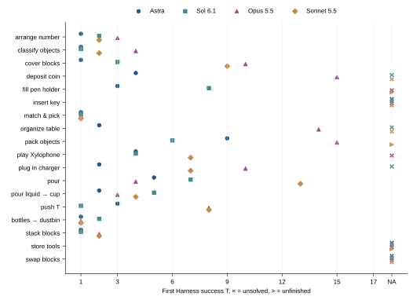
T_{m,t}=\min\{k\ge1:y_{m,t,k}=1\}
N_m(K)=\sum_t\mathbf1[T_{m,t}\le K],\quad \bar T_m=\frac{\sum_{t:T_{m,t}\le17}T_{m,t}}{N_m(17)}
| 变量 | 含义 |
|---|
| m / t / n | 模型 / 共同任务 / 固定任务数 n=18 |
| k / K | 实际回合 / 轮次预算；K0 为 Context，K1–K17 为 Harness |
| q / y | 原生 score∈[0,1] / 原生成功标志∈{0,1}；q 不等于新 Q 或 SG |
| T / N(K) | K1 起首次成功轮次 / 预算 K 内成功任务数；未成功用无穷表示 |
M05 任务覆盖 C(K)
原四模型指标快照 · 远端已有；本轮四模型复核
C(6) 表示 K1–K6 内至少成功一次的任务比例；C(17) 表示 K1–K17 内的比例，括号内是轮次预算，不是指标编号。K0 不纳入覆盖。Sonnet C(17) 已观察 11/18，可能完成范围 11/18–14/18；阴影表示缺失轮次的逻辑界限，不是置信区间。
| 轮次预算 K | Astra | Sol 6.1 | Opus 5.5 | Sonnet 5.5 |
|---|
| 1 | 6/18 | 4/18 | 2/18 | 2/18 |
| 2 | 9/18 | 6/18 | 3/18 | 5/18 |
| 3 | 11/18 | 7/18 | 5/18 | 5/18 |
| 4 | 13/18 | 8/18 | 7/18 | 6/18 |
| 5 | 14/18 | 9/18 | 7/18 | 6/18 |
| 6 | 14/18 | 10/18 | 7/18 | 6/18 |
| 7 | 14/18 | 11/18 | 7/18 | 8/18 |
| 8 | 14/18 | 12/18 | 8/18 | 9/18 |
| 9 | 15/18 | 12/18 | 8/18 | 10/18 |
| 10 | 15/18 | 12/18 | 10/18 | 10/18 |
| 11 | 15/18 | 12/18 | 10/18 | 10/18 |
| 12 | 15/18 | 12/18 | 10/18 | 10/18（下界） |
| 13 | 15/18 | 12/18 | 10/18 | 11/18（下界） |
| 14 | 15/18 | 12/18 | 11/18 | 11/18（下界） |
| 15 | 15/18 | 12/18 | 13/18 | 11/18（下界） |
| 16 | 15/18 | 12/18 | 13/18 | 11/18（下界） |
| 17 | 15/18 | 12/18 | 13/18 | 11/18（下界） |
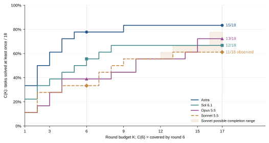
T_{m,t}=\min\{k\geq1:y_{m,t,k}=1\},\quad T_{m,t}=\infty\ \mathrm{if\ unsolved}
C_m(K)=\frac{1}{18}\sum_{t=1}^{18}\mathbf{1}[T_{m,t}\leq K]
| 变量 | 含义 |
|---|
| m / t / n | 模型 / 共同任务 / 固定任务数 n=18 |
| k / K | 实际回合 / 轮次预算；K0 为 Context，K1–K17 为 Harness |
| q / y | 原生 score∈[0,1] / 原生成功标志∈{0,1}；q 不等于新 Q 或 SG |
| T / C(K) | 首次 Harness 成功轮次 / n 个任务中截至 K 至少成功一次的比例 |
| C(6) / C(17) | K=6 / K=17 时的覆盖读数，非冻结 S6 / S17 |
M04 K0 / K1 首次尝试成功率
原四模型指标快照 · 远端已有；本轮四模型复核
K0 是 Context 条件，K1 是 Harness 入口；二者差异含协议因素。这里的 P_m(k) 是实际回合成功率，不重命名为冻结 S_u。
| 模型 | K0 成功 / 18 | K0 成功率 | K1 成功 / 18 | K1 成功率 |
|---|
| Astra | 3/18 | 16.67% | 6/18 | 33.33% |
| Sol 6.1 | 3/18 | 16.67% | 4/18 | 22.22% |
| Opus 5.5 | 1/18 | 5.56% | 2/18 | 11.11% |
| Sonnet 5.5 | 1/18 | 5.56% | 2/18 | 11.11% |
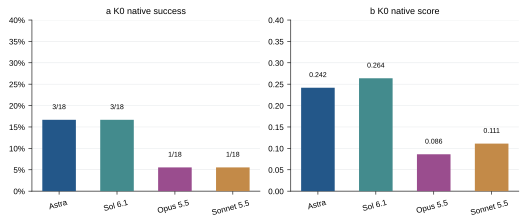
P_m(k)=\frac{1}{18}\sum_{t=1}^{18}y_{m,t,k},\quad k\in\{0,1\}
| 变量 | 含义 |
|---|
| m / t / n | 模型 / 共同任务 / 固定任务数 n=18 |
| k / K | 实际回合 / 轮次预算；K0 为 Context，K1–K17 为 Harness |
| q / y | 原生 score∈[0,1] / 原生成功标志∈{0,1}；q 不等于新 Q 或 SG |
M15 K0 / K1 原生平均分
原四模型指标快照 · 远端已有；本轮四模型复核
q 为现有原生 score，不等于新 Q 或 SG。各任务评分粒度不同，二值失败 0 无法反映中间进展；任务等权均分用于该固定任务集的描述。
| 模型 | K0 均分 | K1 均分 |
|---|
| Astra | 0.2417 | 0.4028 |
| Sol 6.1 | 0.2639 | 0.2972 |
| Opus 5.5 | 0.0861 | 0.1556 |
| Sonnet 5.5 | 0.1111 | 0.1667 |
\bar q_m(k)=\frac{1}{18}\sum_{t=1}^{18}q_{m,t,k},\quad k\in\{0,1\}
| 变量 | 含义 |
|---|
| m / t / n | 模型 / 共同任务 / 固定任务数 n=18 |
| k / K | 实际回合 / 轮次预算；K0 为 Context，K1–K17 为 Harness |
| q / y | 原生 score∈[0,1] / 原生成功标志∈{0,1}；q 不等于新 Q 或 SG |
M08 覆盖曲线 AUC
原四模型指标快照 · 本次对话此前新计算；本轮扩展四模型
离散平均，非梯形积分。AUC 同时受覆盖与速度影响，与 C(K) 是同一曲线的摘要，不将二者宣称为独立证据；也不称为冻结学习 AUC。 Sonnet 有 3 条未完成链：pack_objects_into_box、fill_pen_holder 最后到 K15，store_tools_in_toolbox 到 K11。超出已观察轮次不补造结果。
| 模型 | 覆盖 AUC 已观察值 | 考虑未完成链的上界 |
|---|
| Astra | 0.7516 | 0.7516 |
| Sol 6.1 | 0.5719 | 0.5719 |
| Opus 5.5 | 0.4706 | 0.4706 |
| Sonnet 5.5 | 0.4641 | 0.4967 |
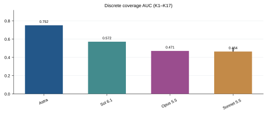
新增恢复 AUC 与求解链分解（D2）
| 模型 | C(1) | C(17) | 覆盖 AUC | 恢复 RA | D2 |
|---|
| Astra | 0.3333 | 0.8333 | 0.7516 | 0.6667 | 0.6394 |
| Sol 6.1 | 0.2222 | 0.6667 | 0.5719 | 0.4777 | 0.4869 |
| Opus 5.5 | 0.1111 | 0.7222 | 0.4706 | 0.4297 | 0.4346 |
| Sonnet 5.5 | 0.1111 | 0.6111 | 0.4641 | 0.4219 | 0.3954 |
\mathrm{AUC}^{C}_m=\frac{1}{17}\sum_{K=1}^{17}C_m(K)
RA=\frac1{16}\sum_{K=2}^{17}\frac{\sum_{t:T_t>1}\mathbf1[T_t\le K]}{\#\{t:T_t>1\}}
D_2=\frac{C(1)+C(17)+AUC^C}{3},\quad AUC^C=\frac1{17}\sum_{K=1}^{17}C(K)
| 变量 | 含义 |
|---|
| m / t / n | 模型 / 共同任务 / 固定任务数 n=18 |
| k / K | 实际回合 / 轮次预算；K0 为 Context，K1–K17 为 Harness |
| q / y | 原生 score∈[0,1] / 原生成功标志∈{0,1}；q 不等于新 Q 或 SG |
| AUC^C | 17 个整数预算 C(K) 的平均，非冻结能力 AUC |
| B / D / V | 历史最好均分 / 有效相邻 Harness 回合中下降比例 / 条件平均降幅 |
| RA | K1 失败任务的 K2–K17 条件恢复覆盖均值；与全任务 AUC 分母不同 |
| D2 | 六维轮廓中的求解链效用，平均 C(1)、C(17)、覆盖 AUC |
M18 历史最好原生得分
原四模型指标快照 · 本次对话此前新计算；本轮扩展四模型
历史最大值按定义单调，不能用它证明能力稳定增长。与 M68 最后观察分数一起读，可看到阶段成果随后丢失的情况；不是完整 SG。 Sonnet 有 3 条未完成链：pack_objects_into_box、fill_pen_holder 最后到 K15，store_tools_in_toolbox 到 K11。超出已观察轮次不补造结果。 新增 D3 使用 12 个非二值任务（包含 pour_by_language），与阶段范围图的 11 个顺序阶段任务不同；旧 18 任务最好均分保留。
| 模型 | 历史最好原生均分 | 最后观察原生均分 |
|---|
| Astra | 0.8694 | 0.8417 |
| Sol 6.1 | 0.7278 | 0.6889 |
| Opus 5.5 | 0.7528 | 0.7444 |
| Sonnet 5.5 | 0.7083 | 0.7000 |
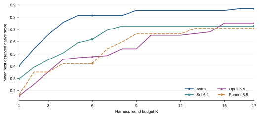
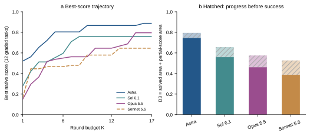
新增 12 个非二值任务的面积分解（D3）
| 模型 | 成功覆盖面积 AUC𝒢 | 部分完成面积 PA𝒢 | 总最好分面积 D3 |
|---|
| Astra | 0.7451 | 0.0500 | 0.7951 |
| Sol 6.1 | 0.5588 | 0.0980 | 0.6569 |
| Opus 5.5 | 0.4608 | 0.1147 | 0.5755 |
| Sonnet 5.5 | 0.3873 | 0.1400 | 0.5272 |
B_m(K)=\frac{1}{18}\sum_t\max_{1\leq k\leq K,\ (m,t,k)\ \mathrm{observed}}q_{m,t,k}
D_3=\frac1{12\cdot17}\sum_{t\in\mathcal G}\sum_{K=1}^{17}\max_{1\le k\le\ell_t(K)}q_{t,k}=AUC^C_{\mathcal G}+PA_{\mathcal G}
| 变量 | 含义 |
|---|
| m / t / n | 模型 / 共同任务 / 固定任务数 n=18 |
| k / K | 实际回合 / 轮次预算；K0 为 Context，K1–K17 为 Harness |
| q / y | 原生 score∈[0,1] / 原生成功标志∈{0,1}；q 不等于新 Q 或 SG |
| AUC^C | 17 个整数预算 C(K) 的平均，非冻结能力 AUC |
| B / D / V | 历史最好均分 / 有效相邻 Harness 回合中下降比例 / 条件平均降幅 |
| 𝒢 / PA𝒢 | 固定 12 个非二值任务，含 pour_by_language 计数任务；PA 是首胜前原生部分分的面积，不是 SG |
M16 观察分数下降频率与幅度
原四模型指标快照 · 本次对话此前新计算；本轮扩展四模型
主编号统一为 M16，频率与幅度是分别报告的诊断读数，不相加。末次差距是旧 M17 的辅助读数，归入同一稳定性主题但不改其原定义。实际相邻轮数、布局及剩余任务集合不同，不做“谁更抗遗忘”的因果排名。 Sonnet 有 3 条未完成链：pack_objects_into_box、fill_pen_holder 最后到 K15，store_tools_in_toolbox 到 K11。超出已观察轮次不补造结果。
| 模型 | 相邻轮下降率 | 发生下降时平均降幅 | 历史最好 − 末次均分 |
|---|
| Astra | 0.0822 | 0.3083 | 0.0278 |
| Sol 6.1 | 0.0720 | 0.2056 | 0.0389 |
| Opus 5.5 | 0.0701 | 0.1864 | 0.0083 |
| Sonnet 5.5 | 0.0680 | 0.1850 | 0.0083 |
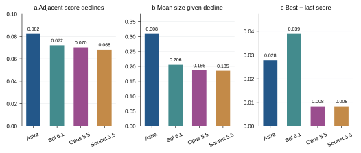
d_{m,t,k}=q_{m,t,k}-q_{m,t,k-1},\quad k\geq2,\ (k-1,k)\in\mathcal{A}_m
D_m=\frac{\sum_{\mathcal{A}_m}\mathbf{1}[d_{m,t,k}<0]}{|\mathcal{A}_m|},\quad V_m=\frac{\sum_{\mathcal{A}_m}\max(-d_{m,t,k},0)}{\sum_{\mathcal{A}_m}\mathbf{1}[d_{m,t,k}<0]}
| 变量 | 含义 |
|---|
| m / t / n | 模型 / 共同任务 / 固定任务数 n=18 |
| k / K | 实际回合 / 轮次预算；K0 为 Context，K1–K17 为 Harness |
| q / y | 原生 score∈[0,1] / 原生成功标志∈{0,1}；q 不等于新 Q 或 SG |
| AUC^C | 17 个整数预算 C(K) 的平均，非冻结能力 AUC |
| B / D / V | 历史最好均分 / 有效相邻 Harness 回合中下降比例 / 条件平均降幅 |
M09 K1 失败后恢复
原四模型指标快照 · 本次对话此前新计算；本轮扩展四模型
条件分母依模型而变；它解释各自失败后的求解结果，不是对同一失败任务集的配对因果比较。 Sonnet 为未完成快照的已观察值。
| 模型 | 恢复 / K1 失败任务 | 已观察恢复比例 |
|---|
| Astra | 9/12 | 75.00% |
| Sol 6.1 | 8/14 | 57.14% |
| Opus 5.5 | 11/16 | 68.75% |
| Sonnet 5.5 | 9/16 | 56.25% |
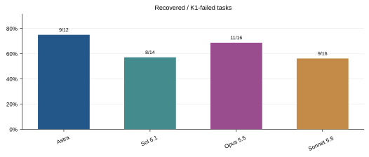
R_m=\frac{\sum_t\mathbf{1}[y_{m,t,1}=0,\ T_{m,t}\leq17]}{\sum_t\mathbf{1}[y_{m,t,1}=0]}
| 变量 | 含义 |
|---|
| m / t / n | 模型 / 共同任务 / 固定任务数 n=18 |
| k / K | 实际回合 / 轮次预算；K0 为 Context，K1–K17 为 Harness |
| q / y | 原生 score∈[0,1] / 原生成功标志∈{0,1}；q 不等于新 Q 或 SG |
| R | K1 失败集合中在 K17 内曾成功的比例；分母依模型而变 |
M68 K0–K17 观察改进：G obs(K) / ΔS obs(K)
原四模型指标快照 · 本次对话新计算；本轮新增 Sonnet
G obs 是原生分数的前后差，ΔS obs 是成功比例的前后差，单位分别为 score 和百分点。直接使用 K0–K17，保留 obs 区分旧冻结 A0−A5 因果增益。末次表示预算内最后实际观察，包含首胜即停与 Sonnet 的未完成链。布局和 Context/Harness 条件不同，不能称为受控能力提升。
| 模型 | G obs(6) | G obs(17) | ΔS obs(6)，百分点 | ΔS obs(17)，百分点 | 提高 / 持平 / 下降 |
|---|
| Astra | 0.5722 | 0.6000 | +61.11 | +66.67 | 12 / 6 / 0 |
| Sol 6.1 | 0.3556 | 0.4250 | +38.89 | +50.00 | 9 / 8 / 1 |
| Opus 5.5 | 0.3667 | 0.6583 | +33.33 | +66.67 | 14 / 4 / 0 |
| Sonnet 5.5 | 0.2750 | 0.5889 | +27.78 | +55.56 | 13 / 5 / 0 |
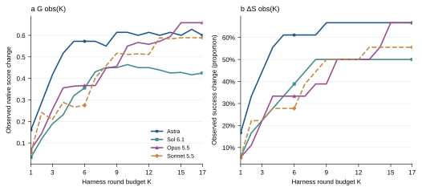
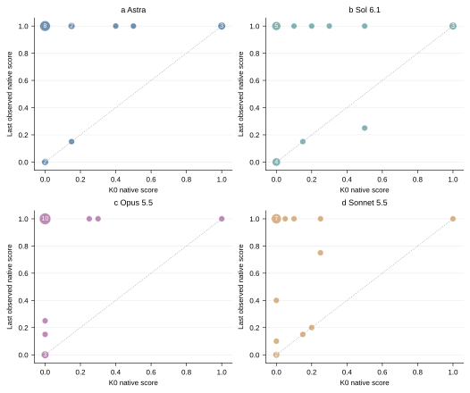
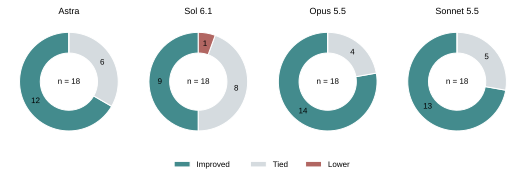
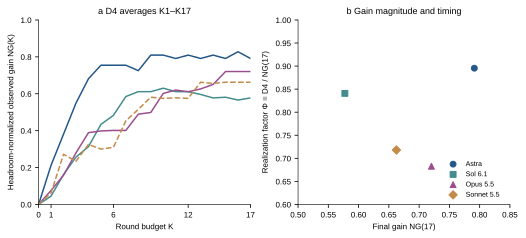
新增剩余得分空间归一化（D4）
| 模型 | 剩余空间 | NG(17) | D4 |
|---|
| Astra | 0.7583 | 0.7912 | 0.7085 |
| Sol 6.1 | 0.7361 | 0.5774 | 0.4855 |
| Opus 5.5 | 0.9139 | 0.7204 | 0.4919 |
| Sonnet 5.5 | 0.8889 | 0.6625 | 0.4757 |
L_{m,t}(K)=\max\{k\leq K:(m,t,k)\ \mathrm{observed}\}
G_m^{\mathrm{obs}}(K)=\frac{1}{18}\sum_t\left(q_{m,t,L_{m,t}(K)}-q_{m,t,0}\right)
\Delta S_m^{\mathrm{obs}}(K)=\frac{1}{18}\sum_t\left(y_{m,t,L_{m,t}(K)}-y_{m,t,0}\right)=C_m(K)-P_m(0),\quad K\geq1
NG(K)=\frac{\sum_t(q_{t,\ell_t(K)}-q_{t,0})}{\sum_t(1-q_{t,0})},\quad D_4=\mathrm{clip}_{[0,1]}\left[\frac1{17}\sum_{K=1}^{17}NG(K)\right]
| 变量 | 含义 |
|---|
| m / t / n | 模型 / 共同任务 / 固定任务数 n=18 |
| k / K | 实际回合 / 轮次预算；K0 为 Context，K1–K17 为 Harness |
| q / y | 原生 score∈[0,1] / 原生成功标志∈{0,1}；q 不等于新 Q 或 SG |
| L(K) | 预算 K 内最后实际观察的回合；不要求等于 K |
| G obs / ΔS obs | 任务等权原生分数变化 / 成功比例变化；后者乘 100 表示百分点 |
| NG(K) | G obs(K) / (1 − K0 原生均分)，除数是全任务平均剩余得分空间；NG 本身不截断 |
| D4 | NG 在 K1–K17 上的离散均值，最后截断到 [0,1]；不是冻结能力增益 |
M69 包含已记录重试的成本覆盖
原四模型指标快照 · 本轮更新 · 保留既有物理步数成本；新增含已知额外尝试的记录时长成本
这是 M69 新增的记录时长口径，不覆盖旧原生步数/原生墙钟轴。Astra 正式 71 次为导出跨度、20 次回退到原生时长；Sol 为报告 start/end，Claude 为会话首末跨度。因此只作运行成本描述，不能解释为纯模型效率排名。9 任务只按任务身份配对，布局/机器/并发不完全相同。未完链和无成本目录仍使记录成本不完整。实际步数缺 9/21/37 次，原生 5000 步覆盖暂不能完整修正。另导出输出 token 预算表：Astra/Sol 给实测证据下的逻辑上下界；Claude 仅给估计参考，不能直接变成美元成本。 原生步数补充表中的额外步数 0 表示未录入，并不表示没有重试。新追回的 Sonnet 37 次尝试与旧 37 个非规范绑定只有 32 个重合，不能视作旧缺口全部补齐。 新增协议配额成本（D7）：推理超时失败补足本轮配额，已记录额外尝试每次计 1 个配额；这是一项计费假设，不是追回了缺失实际步数。
| 模型 | 已记录时长，h | 每任务 5 h 内覆盖 | 每任务 10 h 内覆盖 | 共同 9 任务时长比 / Astra | 缺实际步数的额外尝试 |
|---|
| Astra | 194.77 | 10/18 | 12/18 | 1.0000 | 0 |
| Sol 6.1 | 132.71 | 9/18 | 10/18 | 0.9238 | 9 |
| Opus 5.5 | 268.06 | 7/18 | 8/18 | 1.7826 | 21 |
| Sonnet 5.5 | 280.17 | 6/18 | 9/18 | 1.7212 | 37 |
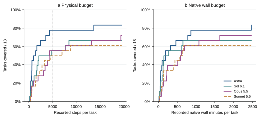
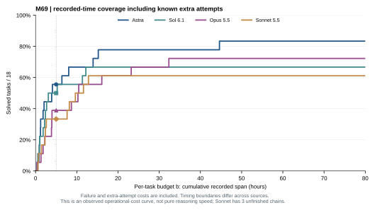
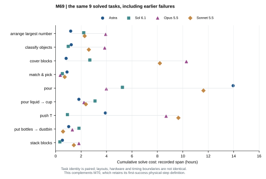
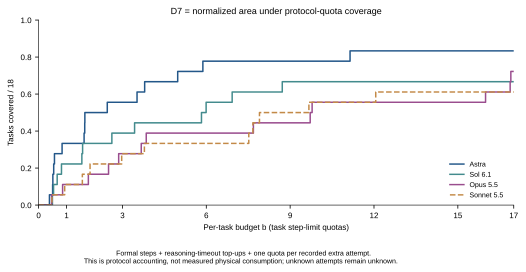
既有原生步数与原生墙钟口径：缺失的额外成本未填零
| 模型 | 已记录总步数 | 其中额外重试步数 | 已记录原生墙钟，分钟 | 5,000 步内覆盖 |
|---|
| Astra | 63,840 | 9555 | 10,508.78 | 14/18 |
| Sol 6.1 | 92,442 | 0 | 6,806.11 | 10/18 |
| Opus 5.5 | 121,319 | 0 | 13,485.67 | 10/18 |
| Sonnet 5.5 | 118,019 | 0 | 14,004.74 | 9/18 |
新增协议配额核算（D7）：W、Z 是步；e 是次数
| 模型 | 正式实际步数 W | 超时补计 Z | 额外尝试 e | 有实测步数的额外尝试 | D7 |
|---|
| Astra | 54285 | 1115 | 13 | 13 | 0.7025 |
| Sol 6.1 | 92442 | 0 | 9 | 0 | 0.5387 |
| Opus 5.5 | 121319 | 5071 | 21 | 0 | 0.4185 |
| Sonnet 5.5 | 118019 | 619 | 37 | 0 | 0.4268 |
W_{m,t}=\sum_{a\in\mathcal R_{m,t},\ 1\le k(a)\le\min(T_{m,t},17)}c_a
C_m^{\mathrm{cost}}(b)=\frac1{18}\sum_t\mathbf1[T_{m,t}\le17,\ W_{m,t}\le b]
W_{m,t}^{\rm obs}=\sum_{e\in (H_m\cup X_m)_t,\,k(e)\le\min(T_{m,t},17)}w_e
C_m^{\rm time}(b)=\frac1{18}\sum_t\mathbf1[T_{m,t}\le17,\ W_{m,t}^{\rm obs}/3600\le b]
\rho_m^{\rm solve}=\exp\left(\frac1{9}\sum_{t\in\mathcal I}\log\frac{W_{m,t}^{\rm obs}}{W_{{\rm Astra},t}^{\rm obs}}\right)
U_t=\frac{W_t+Z_t}{N_t}+e_t,\quad D_7=\frac1{18}\sum_t\mathbf1[T_t\le17]\max(0,1-U_t/17)
C^{quota}(b)=\frac1{18}\sum_t\mathbf1[T_t\le17,U_t\le b],\quad D_7=\frac1{17}\int_0^{17}C^{quota}(b)\,db
| 变量 | 含义 |
|---|
| m / t / n | 模型 / 共同任务 / 固定任务数 n=18 |
| k / K | 实际回合 / 轮次预算；K0 为 Context，K1–K17 为 Harness |
| q / y | 原生 score∈[0,1] / 原生成功标志∈{0,1}；q 不等于新 Q 或 SG |
| R / c / W | 已有成本记录的尝试集合 / 单次实际步数或原生墙钟 / 首胜或预算截止的累计成本 |
| b / C cost(b) | 每任务累计成本预算 / 满足该预算的已解决任务占固定 18 任务的比例 |
| H_m / X_m / w_e | 入选正式回合 / 有成本证据的额外尝试 / 单回合记录时长，秒 |
| T | K1 起首次成功轮次；未成功记为无穷 |
| b | 每任务累计记录时长预算，小时，含此前失败和已知额外尝试 |
| I | 与 M70 相同的固定 9 个四模型共同成功任务 |
| ρ solve | 共同任务累计求解时长的配对几何比；M70 原执行步数保持原名和原值 |
| 𝓘 / a / N | 冻结的 9 个共同成功任务 / 首次成功原生步数 / 各任务 step_limit（300–1300 步） |
| W / Z / e | 正式回合实际步数之和 / 推理超时失败的剩余配额补计 / 窗口内已记录额外尝试数，每次收一个配额 |
| D7 成本窗口 | K1 至首次成功；未成功链至末次已测，另纳入 K17 内已记录额外尝试。未成功任务效用为 0 |
M70 共同成功任务的配对执行步数
原四模型指标快照 · 本次对话新计算；本轮重算四模型交集
四模型共同成功交集为 9 个任务，旧三模型 10 任务的均比不能直接混用。配对指任务身份，并不保证相同布局或种子。小于 1 表示相对 Astra 成功执行步数少；仅看成功回合，不含失败探索成本，也不包含未共同成功任务。图例显隐不改变这 9 个任务。
| 模型 | 共同任务数 | 首次成功回合步数中位数 | 配对步数几何均比 / Astra |
|---|
| Astra | 9 | 407 | 1.0000 |
| Sol 6.1 | 9 | 491 | 1.0477 |
| Opus 5.5 | 9 | 601 | 1.1399 |
| Sonnet 5.5 | 9 | 653 | 1.2308 |
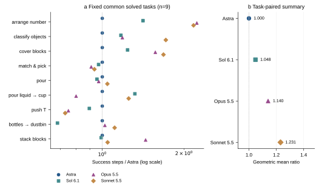
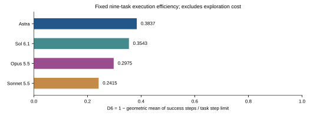
补充数据表
| 共同成功任务 | Astra | Sol 6.1 | Opus 5.5 | Sonnet 5.5 |
|---|
| arrange_largest_number | 407 | 575 | 908 | 883 |
| classify_objects_by_language | 624 | 731 | 740 | 1070 |
| cover_blocks | 401 | 497 | 629 | 674 |
| match_and_pick_from_conveyor | 357 | 346 | 325 | 334 |
| pour_by_language | 702 | 671 | 681 | 733 |
| pour_liquid_into_cup | 251 | 331 | 201 | 314 |
| push_T | 548 | 491 | 411 | 400 |
| put_bottles_into_dustbin | 588 | 402 | 601 | 653 |
| stack_blocks_by_language | 216 | 214 | 312 | 226 |
新增预算归一化效率（D6），原相对 Astra 步数比保留
| 模型 | 预算使用比例几何均值 | D6 执行效率 | 固定任务数 |
|---|
| Astra | 0.6163 | 0.3837 | 9 |
| Sol 6.1 | 0.6457 | 0.3543 | 9 |
| Opus 5.5 | 0.7025 | 0.2975 | 9 |
| Sonnet 5.5 | 0.7585 | 0.2415 | 9 |
\mathcal I=\mathcal I_{\mathrm{fixed}},\quad |\mathcal I|=9
\rho_m=\exp\left[\frac1{|\mathcal I|}\sum_{t\in\mathcal I}\log\frac{a_{m,t}}{a_{\mathrm{Astra},t}}\right]
D_6=1-\exp\left[\frac1{9}\sum_{t\in\mathcal I}\log\frac{a_t}{N_t}\right]
\rho_m=\frac{1-D_{6,m}}{1-D_{6,\mathrm{Astra}}}
| 变量 | 含义 |
|---|
| I | 四模型均在 K1–K17 成功的固定任务交集，n=9 |
| a | 该任务首次成功物理回合的原生实际步数 |
| ρ | 相对 Astra 的任务配对比值几何平均；没有固定上界 |
| 𝓘 / a / N | 冻结的 9 个共同成功任务 / 首次成功原生步数 / 各任务 step_limit（300–1300 步） |
| D6 | 用任务预算作锚点的执行效率，越高越好；不是 1−ρ。以后新增模型不自动改变固定九任务集合 |
PROFILE 五维雷达：A1–A5 · 五模型
2026-10-15 · 冻结包复算；919 个规范回合，25 个轴值及 5000 次配对重采样核对
A1–A5 分别为起点、增益兑现时机、90% 达标后的平均分、已解任务预算节余、首败后恢复。A4 / A5 分母随模型变化，A3 窗口随模型变化；五轴不是五个独立能力。τ90 是相对自身观察峰值的达标轮次，不是数学曲率拐点。Sonnet 的三条未完成链沿用末次分。原四模型附属 M 指标仍按原样本范围标明；新增 GPT-6 Sol 没有被填入缺失统计。
| 模型 | A1 零样本起点 | A2 求解速度 | A3 能力水平 | A4 执行成本 | A5 失败恢复 |
|---|
| GPT-6 Astra | 0.2417 [0.092, 0.420] | 0.8889 [0.809, 0.956] | 0.8378 [0.688, 0.988] | 0.8429 [0.751, 0.917] | 0.7500 [0.499, 1.000] |
| GPT-6.1 Sol | 0.2639 [0.108, 0.444] | 0.8309 [0.712, 0.980] | 0.7028 [0.495, 0.891] | 0.8081 [0.712, 0.897] | 0.5714 [0.308, 0.824] |
| GPT-6 Sol | 0.0500 [0.000, 0.117] | 0.4412 [0.232, 0.638] | 0.4722 [0.260, 0.667] | 0.3718 [0.174, 0.573] | 0.3889 [0.167, 0.611] |
| Opus 5.5 | 0.0861 [0.000, 0.214] | 0.6630 [0.507, 0.807] | 0.7285 [0.536, 0.906] | 0.5794 [0.383, 0.760] | 0.6875 [0.462, 0.889] |
| Sonnet 5.5 | 0.1111 [0.028, 0.236] | 0.7005 [0.567, 0.829] | 0.6989 [0.500, 0.869] | 0.6984 [0.560, 0.830] | 0.5625 [0.313, 0.800] |
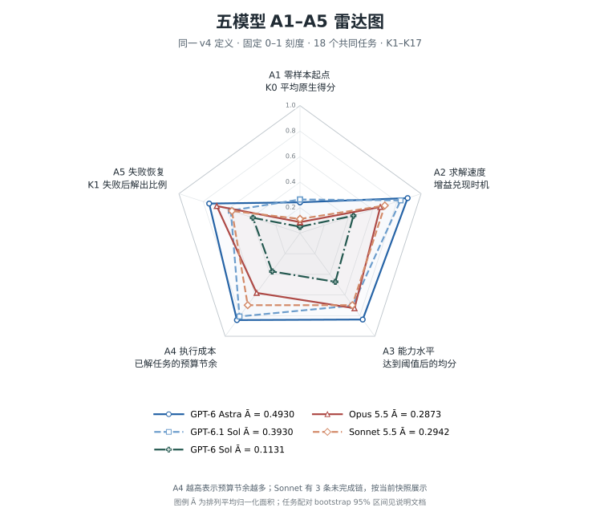
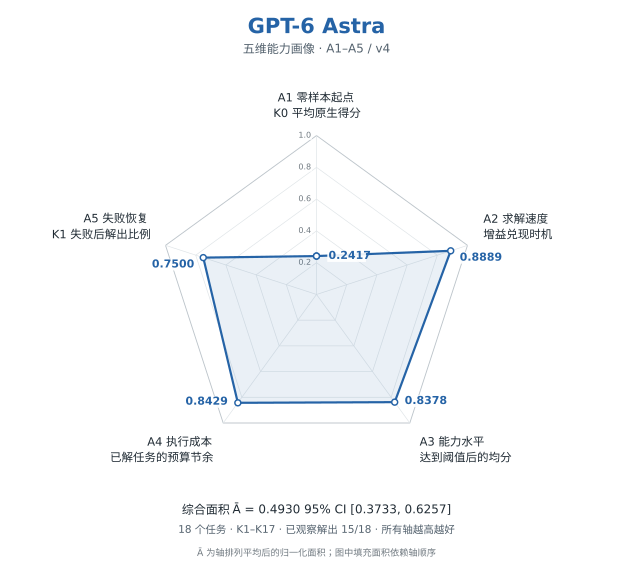
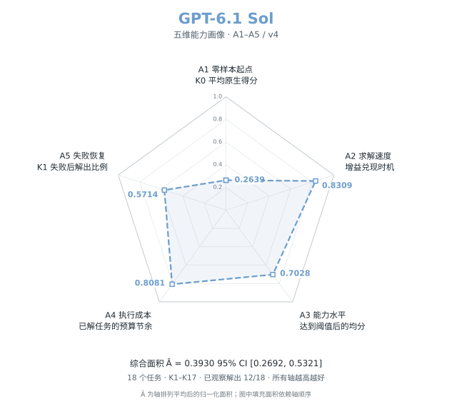
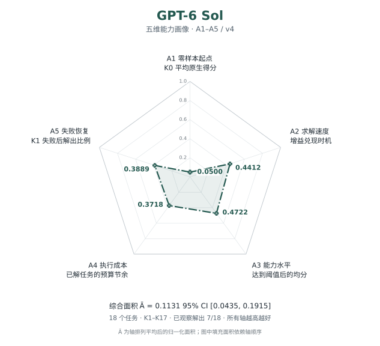
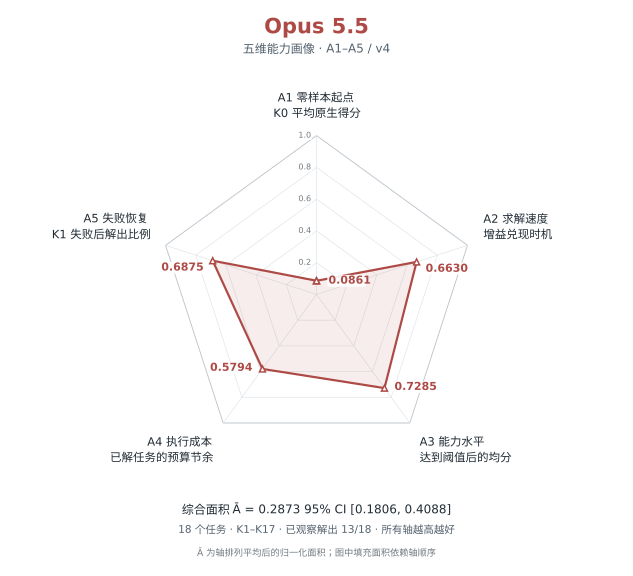
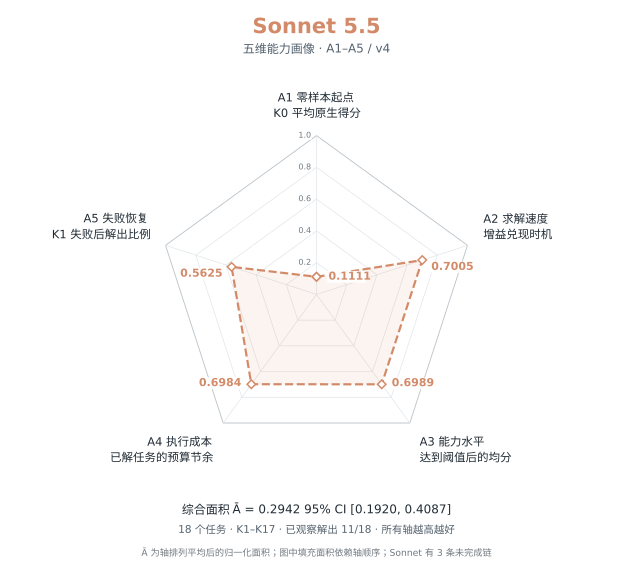
五轴与具体 M 指标对应
| 维度 | metric 来源 | 具体读数 |
|---|
| A1 | M15；M04 辅助分解 | 18 任务 K0 原生均分，不是只有成功率 |
| A2 | M68 + M72 的 Φ 派生 | 末次观察增益兑现时机；不是 M08 覆盖 AUC 或平均斜率 |
| A3 | M15 原生底数 + M68 曲线 + M72 τ90 | 达自身峰值增益 90% 后的平均分；不是 M18 历史最好分 |
| A4 | M20 / M21 / M23；M69 协议配额核算 | W / Z / e 成本，在本模型已解任务上取平均；不是 M70 单次成功效率 |
| A5 | M09；M05 的 C(1) / C(17) | 本模型 K1 失败任务中，截至 K17 已观察恢复比例 |
面积、分母与达标窗口
| 模型 | Ā [95% CI] | A_fixed | A4 已解数 | A5 恢复 / 首败 | τ90 | A3 窗口 | 未完成链 |
|---|
| GPT-6 Astra | 0.4930 [0.373, 0.626] | 0.4958 | 15 | 9/12 | K5 | 13 | 0 |
| GPT-6.1 Sol | 0.3930 [0.269, 0.532] | 0.3967 | 12 | 8/14 | K7 | 11 | 0 |
| GPT-6 Sol | 0.1131 [0.044, 0.191] | 0.1140 | 7 | 7/18 | K17 | 1 | 0 |
| Opus 5.5 | 0.2873 [0.181, 0.409] | 0.2839 | 13 | 11/16 | K14 | 4 | 0 |
| Sonnet 5.5 | 0.2942 [0.192, 0.409] | 0.3022 | 11 | 9/16 | K13 | 5 | 3 |
Benchmark → 曲线预测方案：尚未训练
| 要点 | 当前证据与方案 |
|---|
| 数据量 | 26 个去重输入列，只有 5 个配对模型；K17 完整模型只有 4 个 |
| 原型 | 均值 / 最近模型基线；低维多输出 Ridge 或 1 成分 PLS2，先预测共同 K0–K11 |
| 完整五轴 | 同时预测得分曲线、首胜覆盖与成本；单独均分曲线无法唯一恢复 A4 / A5 |
| 验证 | 整模型留出、训练折内预处理和调参；真实未见模型的 benchmark 输入后，冻结预测再运行测评 |
| 任意分数组合 | 可以作为接口输入，但训练支持域外只能标明外推，不能许诺准确增长曲线 |
| 拐点 | 主输出为现行 τ90；数学曲率拐点需另定义，并允许无拐点或多候选 |
A_1=\bar x(0)=\frac1{18}\sum_tq_{t,0}
A_2=\frac1{16}\sum_{K=1}^{16}\frac{\bar x(K)-\bar x(0)}{\bar x(17)-\bar x(0)}=\frac{\Phi-1/17}{16/17}
\tau_{90}=\min\{K\ge1:\bar x(K)\ge\bar x(0)+0.9[\max_j\bar x(j)-\bar x(0)]\}
A_3=\frac1{18-\tau_{90}}\sum_{K=\tau_{90}}^{17}\bar x(K)
U_t=(W_t+Z_t)/L_t+e_t,\quad A_4=\frac1{|S_m|}\sum_{t\in S_m}\max(0,1-U_t/17)
A_5=\frac{C(17)-C(1)}{1-C(1)}
\bar A=\frac{(\sum_{i=1}^{5}A_i)^2-\sum_{i=1}^{5}A_i^2}{20},\quad A_{fixed}=\frac15\sum_{i=1}^5A_iA_{i+1},\quad A_6=A_1
| 变量 | 含义 |
|---|
| q / x̄(K) | 原生分数 / 18 任务最后观察分数的均值；首胜后沿用 1，未完成链沿用末次观察 |
| τ90 / A3 | 相对 K0 到观察峰值的 90% 达标轮次；从 τ90 到 K17 平均，GPT-6 Sol 只有 1 轮 |
| A2 | 先平均任务曲线再计算终点增益比值；终点增益非正为 NA，回退时可超出 [0,1]，不偷偷截断 |
| S_m / F_m | 本模型已解任务 / 本模型 K1 失败任务；A4/A5 分母不是共同固定子集 |
| W / Z / e / L | 正式物理步数 / 推理超时失败补满 / 已记录额外尝试数 / 各任务 step_limit |
| Ā / A_fixed | 轴排列平均面积 / 固定轴序图示面积比；二者不同，不是能力倍数 |
| 95% 区间 | 18 任务、五模型同索引、5000 次 bootstrap；不覆盖重复执行及缺失后续回合 |
RESOURCE 资源成本与使用记录
原四模型指标快照 · 远端已有原始记录；本轮统一汇总与展示
原生墙钟按回合累加，存在并行，不能当整个实验经过的日历时间。步数与墙钟沿用 M69 的已记录范围；token 与货币费用另列，不能混作单一成本。Sonnet 未结束/撤回回合的成本仍缺。
| 模型 | K1–K17 已记录步数 | 原生墙钟合计，分钟 | 记录中的额外重试次数 |
|---|
| Astra | 63840 | 10,508.78 | 13 |
| Sol 6.1 | 92442 | 6,806.11 | 0 |
| Opus 5.5 | 121319 | 13,485.67 | 0 |
| Sonnet 5.5 | 118019 | 14,004.74 | 0 |
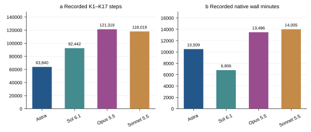
W_m^{\mathrm{steps}}=\sum_{e\in\mathcal R_m}\mathrm{steps}_e,\quad W_m^{\mathrm{wall}}=\frac1{60}\sum_{e\in\mathcal R_m}\mathrm{wall\ seconds}_e
| 变量 | 含义 |
|---|
| R_m | K1–K17 规范链与已记录额外尝试，含已评分失败，排除 K0 |
| steps / wall | 原生控制步数 / 原生回合墙钟秒数；除 60 转为分钟 |
M28 在线 K4–K6 成功率
Astra 远端已有实验；本对话复核，其他模型无对应实验
A4R 缺 1 轮，16/35 是观察比例；36 轮最终范围 44.44%–47.22%。A0F 为固定布局，单独解释。 仅 Astra；Sol 6.1 / Opus 5.5 / Sonnet 5.5 为 NA。
| 实验组 / 对照 | 成功 / 已观测数 | 值 | 单位 | 区间 / 范围 | 说明 |
|---|
| A0 | 15/36 | 41.6667 | % | — | 计划 36，完整链 12/12 |
| A0F | 22/36 | 61.1111 | % | — | 计划 36，完整链 12/12 |
| A1 | 12/36 | 33.3333 | % | — | 计划 36，完整链 12/12 |
| A2 | 5/36 | 13.8889 | % | — | 计划 36，完整链 12/12 |
| A4R | 16/35 | 45.7143 | % | — | 计划 36，完整链 11/12 |
| A5 | 3/36 | 8.3333 | % | — | 计划 36，完整链 12/12 |
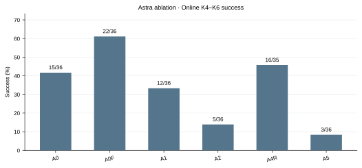
P_g^{4:6}=\frac{\sum_{e\in E_g,4\le k_e\le6}y_e}{|\{e\in E_g:4\le k_e\le6\}|}
| 变量 | 含义 |
|---|
| g / h | 实验条件与对照；不是模型名称 |
| E / P / T | 有效观察回合 / 完整配对链集合 / 留出任务集合 |
| y / k / j | 成功标志 / 在线轮次 / 冻结系统的留出布局测试 |
| 区间 | 若给出，为既有按 6 个任务簇 bootstrap 的探索性 95% 区间，非本轮新增重复实验 |
M29 消融配对收益
Astra 远端已有实验；本对话复核，其他模型无对应实验
沿用按任务簇 bootstrap 的探索性 95% 区间；仅 6 个任务且未校正多重比较。A4R 使用 11 条完整配对链。A2 去反馈明细，但保留二元成败。 仅 Astra；Sol 6.1 / Opus 5.5 / Sonnet 5.5 为 NA。
| 实验组 / 对照 | 成功 / 已观测数 | 值 | 单位 | 区间 / 范围 | 说明 |
|---|
| A0 - A5 | — | 33.3333 | 百分点 | [11.1111, 63.8889] | 6 个任务簇 |
| A0 - A1 | — | 8.3333 | 百分点 | [-19.4444, 47.2222] | 6 个任务簇 |
| A0 - A2 | — | 27.7778 | 百分点 | [-8.3333, 66.6667] | 6 个任务簇 |
| A0 - A4R | — | -8.3333 | 百分点 | [-27.7778, 5.5556] | 6 个任务簇 |
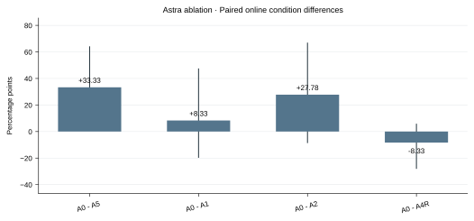
\delta_{g,h}=\frac1{|\mathcal P|}\sum_{p\in\mathcal P}(P_{g,p}^{4:6}-P_{h,p}^{4:6})
| 变量 | 含义 |
|---|
| g / h | 实验条件与对照；不是模型名称 |
| E / P / T | 有效观察回合 / 完整配对链集合 / 留出任务集合 |
| y / k / j | 成功标志 / 在线轮次 / 冻结系统的留出布局测试 |
| 区间 | 若给出，为既有按 6 个任务簇 bootstrap 的探索性 95% 区间，非本轮新增重复实验 |
M30 在线继承收益
Astra 远端已有实验；本对话复核，其他模型无对应实验
沿用按任务簇 bootstrap 的探索性 95% 区间；仅 6 个任务且未校正多重比较。A4R 使用 11 条完整配对链。A2 去反馈明细，但保留二元成败。 仅 Astra；Sol 6.1 / Opus 5.5 / Sonnet 5.5 为 NA。
| 实验组 / 对照 | 成功 / 已观测数 | 值 | 单位 | 区间 / 范围 | 说明 |
|---|
| A0 - A5 | — | 33.3333 | 百分点 | [11.1111, 63.8889] | 6 个任务簇 |
G^{\mathrm{online}}=P_{A0}^{4:6}-P_{A5}^{4:6}=15/36-3/36
| 变量 | 含义 |
|---|
| g / h | 实验条件与对照；不是模型名称 |
| E / P / T | 有效观察回合 / 完整配对链集合 / 留出任务集合 |
| y / k / j | 成功标志 / 在线轮次 / 冻结系统的留出布局测试 |
| 区间 | 若给出，为既有按 6 个任务簇 bootstrap 的探索性 95% 区间，非本轮新增重复实验 |
M31 详细反馈差值
Astra 远端已有实验；本对话复核，其他模型无对应实验
沿用按任务簇 bootstrap 的探索性 95% 区间；仅 6 个任务且未校正多重比较。A4R 使用 11 条完整配对链。A2 去反馈明细，但保留二元成败。 仅 Astra；Sol 6.1 / Opus 5.5 / Sonnet 5.5 为 NA。
| 实验组 / 对照 | 成功 / 已观测数 | 值 | 单位 | 区间 / 范围 | 说明 |
|---|
| A0 - A2 | — | 27.7778 | 百分点 | [-8.3333, 66.6667] | 6 个任务簇 |
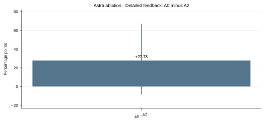
F^{\mathrm{online}}=P_{A0}^{4:6}-P_{A2}^{4:6}
| 变量 | 含义 |
|---|
| g / h | 实验条件与对照；不是模型名称 |
| E / P / T | 有效观察回合 / 完整配对链集合 / 留出任务集合 |
| y / k / j | 成功标志 / 在线轮次 / 冻结系统的留出布局测试 |
| 区间 | 若给出，为既有按 6 个任务簇 bootstrap 的探索性 95% 区间，非本轮新增重复实验 |
M32 冻结留出测试成功率 S_u
Astra 远端已有实验；本对话复核，其他模型无对应实验
核心 E3-full/E3-notes/HO-A0F 各 60 回合且平衡；HO-A1/HO-A2 不完整，只展示观察比例，不能与核心组作相同权重比较。只有 K6 留出布局，不含 S0/S3、跨任务或跨机器人。 仅 Astra；Sol 6.1 / Opus 5.5 / Sonnet 5.5 为 NA。HO-A1/HO-A2 只报观察回合比例；样本不平衡，不能套用核心组任务等权解释。
| 实验组 / 对照 | 成功 / 已观测数 | 值 | 单位 | 区间 / 范围 | 说明 |
|---|
| E3-full | 23/60 | 38.3333 | % | — | 完整来源 12/12 |
| E3-notes | 25/60 | 41.6667 | % | — | 完整来源 12/12 |
| HO-A0F | 27/60 | 45.0000 | % | — | 完整来源 12/12 |
| HO-A1 | 13/35 | 37.1429 | % | — | 完整来源 6/9 |
| HO-A2 | 5/21 | 23.8095 | % | — | 完整来源 1/6 |
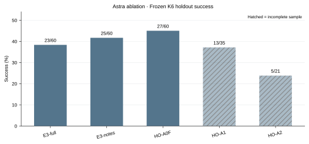
S_g(6)=\frac1{|\mathcal T|}\sum_{t\in\mathcal T}\frac1{n_{g,t}}\sum_jy_{g,t,j}(6)
| 变量 | 含义 |
|---|
| g / h | 实验条件与对照；不是模型名称 |
| E / P / T | 有效观察回合 / 完整配对链集合 / 留出任务集合 |
| y / k / j | 成功标志 / 在线轮次 / 冻结系统的留出布局测试 |
| 区间 | 若给出，为既有按 6 个任务簇 bootstrap 的探索性 95% 区间，非本轮新增重复实验 |
M38 在线逐轮成功率
Astra 远端已有实验；本对话复核，其他模型无对应实验
这是在线不同布局表现，不是冻结学习曲线。A4R K6 缺 1 条；A0F 固定布局。表格保留每轮分母。 仅 Astra；Sol 6.1 / Opus 5.5 / Sonnet 5.5 为 NA。
| 实验组 / 对照 | 成功 / 已观测数 | 值 | 单位 | 区间 / 范围 | 说明 |
|---|
| A0 K1 | 1/12 | 8.3333 | % | — | |
| A0 K2 | 2/12 | 16.6667 | % | — | |
| A0 K3 | 6/12 | 50.0000 | % | — | |
| A0 K4 | 6/12 | 50.0000 | % | — | |
| A0 K5 | 5/12 | 41.6667 | % | — | |
| A0 K6 | 4/12 | 33.3333 | % | — | |
| A0F K1 | 1/12 | 8.3333 | % | — | |
| A0F K2 | 3/12 | 25.0000 | % | — | |
| A0F K3 | 6/12 | 50.0000 | % | — | |
| A0F K4 | 8/12 | 66.6667 | % | — | |
| A0F K5 | 7/12 | 58.3333 | % | — | |
| A0F K6 | 7/12 | 58.3333 | % | — | |
| A1 K1 | 1/12 | 8.3333 | % | — | |
| A1 K2 | 1/12 | 8.3333 | % | — | |
| A1 K3 | 3/12 | 25.0000 | % | — | |
| A1 K4 | 4/12 | 33.3333 | % | — | |
| A1 K5 | 3/12 | 25.0000 | % | — | |
| A1 K6 | 5/12 | 41.6667 | % | — | |
| A2 K1 | 0/12 | 0.0000 | % | — | |
| A2 K2 | 2/12 | 16.6667 | % | — | |
| A2 K3 | 2/12 | 16.6667 | % | — | |
| A2 K4 | 2/12 | 16.6667 | % | — | |
| A2 K5 | 2/12 | 16.6667 | % | — | |
| A2 K6 | 1/12 | 8.3333 | % | — | |
| A4R K1 | 0/12 | 0.0000 | % | — | |
| A4R K2 | 1/12 | 8.3333 | % | — | |
| A4R K3 | 2/12 | 16.6667 | % | — | |
| A4R K4 | 7/12 | 58.3333 | % | — | |
| A4R K5 | 3/12 | 25.0000 | % | — | |
| A4R K6 | 6/11 | 54.5455 | % | — | |
| A5 K1 | 1/12 | 8.3333 | % | — | |
| A5 K2 | 2/12 | 16.6667 | % | — | |
| A5 K3 | 1/12 | 8.3333 | % | — | |
| A5 K4 | 0/12 | 0.0000 | % | — | |
| A5 K5 | 0/12 | 0.0000 | % | — | |
| A5 K6 | 3/12 | 25.0000 | % | — | |
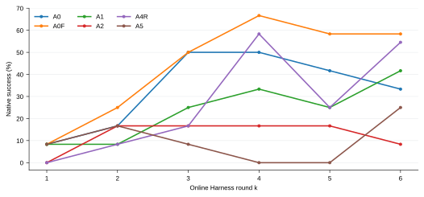
P_g(k)=\sum_{e\in E_{g,k}}y_e/|E_{g,k}|
| 变量 | 含义 |
|---|
| g / h | 实验条件与对照；不是模型名称 |
| E / P / T | 有效观察回合 / 完整配对链集合 / 留出任务集合 |
| y / k / j | 成功标志 / 在线轮次 / 冻结系统的留出布局测试 |
| 区间 | 若给出，为既有按 6 个任务簇 bootstrap 的探索性 95% 区间，非本轮新增重复实验 |
M27 token 用量与缓存占比
原四模型指标快照 · 远程已有逐回合用量；本轮规范回合筛选、字段核对与汇总更新
Astra 从缺失更新为 71 回合实测输出 1.827639 M + 20 回合估计 0.599694 M，合计报告值 2.427333 M。输入仅覆盖 71/91。Sol 新表 input 实为 totalTokens，已按原始 usage 修正为 total-output，正式输入仍为旧值 2519.625020 M；K0 的输入/缓存未逐回合核实，暂不作为精确值。Opus 保持 12.710292 M 输出估计；Sonnet 从旧 160/165 覆盖补齐至 165/165，35.387659 M 输出估计。Astra cost_est 按任务/K 回填，不能当作额外尝试的独立实测；Claude 为终端估计，且不同 tokenizer，禁止作为同精度费用排名。
| 模型 | 规范 H 回合 | 实测输出，M token | 估计输出，M token | 已核实输入，M token | 缓存占输入 | 输入覆盖 |
|---|
| Astra | 91 | 1.8276 | 0.5997 | 997.6794 | 97.19% | 71/91 |
| Sol 6.1 | 143 | 5.5890 | NA | 2,519.6250 | 97.61% | 143/143 |
| Opus 5.5 | 175 | NA | 12.7103 | NA | NA | 0/175 |
| Sonnet 5.5 | 165 | NA | 35.3877 | NA | NA | 0/165 |
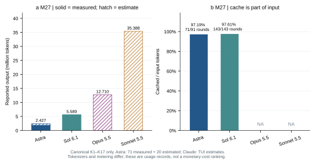
U^{s}_{m,r}=\sum_{e\in H_m:\,\mathrm{source}(e,r)=s}u_{e,r}
\eta_m^{\rm cache}=\frac{\sum_e u_{e,\rm cached}}{\sum_e u_{e,\rm input}},\qquad u_{\rm uncached}=u_{\rm input}-u_{\rm cached}
| 变量 | 含义 |
|---|
| H_m | 模型 m 的入选 K1–K17 回合；K0 和重试另表 |
| r / s | 用量分项 / 字段来源（实测或估计） |
| u / U | 单回合 / 同来源合计 token；M 表示百万，不是指标编号 |
| η cache | 缓存占输入比例；缓存是输入子集，reasoning 是输出子集 |
M25 往轮程序路径复用
原四模型指标快照 · 远端已有 Opus 路径统计；保留诊断用途
复用路径不保证程序语义相同，更不能直接当作技能迁移收益。Sonnet 旧报告提供不同快照与调用口径，未在本轮冒充同口径比较。
| 模型 | 结果 | 可计算状态 |
|---|
| Astra | NA | ❌ 同口径缺失 |
| Sol 6.1 | NA | ❌ 同口径缺失 |
| Opus 5.5 | 898/1365 = 65.79% | ✅ 已有 |
| Sonnet 5.5 | 旧报告存在路径计数，尚未完成同口径验证 | ❌ 本轮不填值 |
R^{\mathrm{path}}=N_{\mathrm{calls\ to\ prior\ round\ paths}}/N_{\mathrm{program\ calls}}
| 变量 | 含义 |
|---|
| N | 程序调用次数；旧路径指在往轮已经出现的文件路径 |
M10 原生终止原因分布
原四模型指标快照 · 远端已有；本轮统一原生 reason 字段复核
终止 reason 是接口与控制器标签，不是物理失败原因。相同 terminal 可以包含成功或步数耗尽；不同模型日志标签也可能不同，不作能力排名。
| 模型 | 原生 reason | 次数 | 已观测 Harness 回合 | 比例 |
|---|
| Astra | actor_completed | 15 | 91 | 16.48% |
| Astra | effective_reasoning_time_limit | 5 | 91 | 5.49% |
| Astra | terminal | 71 | 91 | 78.02% |
| Sol 6.1 | terminal | 143 | 143 | 100.00% |
| Opus 5.5 | effective_reasoning_time_limit | 14 | 175 | 8.00% |
| Opus 5.5 | terminal | 161 | 175 | 92.00% |
| Sonnet 5.5 | effective_reasoning_time_limit | 2 | 165 | 1.21% |
| Sonnet 5.5 | terminal | 163 | 165 | 98.79% |
p_m(r)=|\{e\in E_m:reason_e=r\}|/|E_m|
| 变量 | 含义 |
|---|
| E / r | K1–K17 实际观察回合 / 原生 reason 标签 |
M23 额外尝试的资源开销
原四模型指标快照 · 已有 metric；本轮补算或扩展读数
Astra 13 次已在旧物理成本中，新增的是用量/记录时长核对；本轮追回 Sol 9 次、Opus 21 次、Sonnet 37 次额外尝试。未判分不改记为物理失败，但消耗保留。Sol 4 次额外尝试无 token；Opus/Sonnet 无工具调用的排除目录仍没有成本，不能宣称总成本已全量。各回合求和包含并发和等待，不是实验总历时。 雷达 D7 复用这里的额外尝试计数，每次按一个配额收费；记录存在不等于已证明发生物理动作，实际步数缺失仍保留。
| 模型 | 正式 / 额外回合 | 正式记录时长，h | 额外记录时长，h | 额外占比 | 额外输出，M token |
|---|
| Astra | 91 / 13 | 163.87 | 30.90 | 15.86% | 0.3653 |
| Sol 6.1 | 143 / 9 | 129.66 | 3.05 | 2.30% | 0.0533（5/9 有值） |
| Opus 5.5 | 175 / 21 | 229.25 | 38.82 | 14.48% | 1.0162 |
| Sonnet 5.5 | 165 / 37 | 238.01 | 42.16 | 15.05% | 4.6101 |
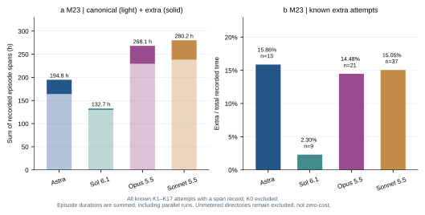
\omega_m=\frac{\sum_{e\in X_m} w_e}{\sum_{e\in H_m\cup X_m}w_e}
| 变量 | 含义 |
|---|
| H_m | 入选的 K1–K17 正式回合 |
| X_m | K1–K17 内撤回、未入选或未判分，但有成本证据的额外尝试 |
| w_e | 该回合记录时长，秒 |
| ω | 已知额外时长占已记录总时长 |
M12 回合时长与执行后修订投入
原四模型指标快照 · 已有 metric；本轮补算或扩展读数
新增会话/报告记录时长读数，与旧原生回合墙钟分开。修订仅 Opus 173/175、Sonnet 162/165 回合可算，排除 last_event 猜测边界。Sol 有终态动作位置但本汇总未导出边界时间；Astra 无正式回合 rollout。Claude 额度等待是计时诊断，账号切换次数不等于模型请求次数。不使用 Sol reasoning_s 排生成速度：78/143 Harness 回合 reasoning token/秒 >500；该阈值只是审计标记。
| 模型 | 记录时长 P50，min | P90，min | 可信修订边界 | 修订 P50，min | 修订时间占比 | 额度等待 / 记录时长 |
|---|
| Astra | 90.62 | 196.83 | 0/91 | NA | NA | NA |
| Sol 6.1 | 46.52 | 88.83 | 0/143 | NA | NA | NA |
| Opus 5.5 | 72.43 | 129.74 | 173/175 | 1.86 | 3.49% | 0.72% |
| Sonnet 5.5 | 78.59 | 144.19 | 162/165 | 2.54 | 3.30% | 0.92% |
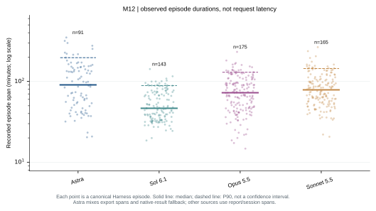
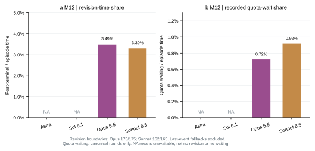
L_m(p)=\operatorname{Quantile}_p\{w_e:e\in H_m\}
R_m^{\rm rev}=\frac{\sum_{e\in B_m} w_e^{\rm rev}}{\sum_{e\in B_m}w_e},\quad R_m^{\rm quota}=\frac{\sum_e w_e^{\rm quota}}{\sum_e w_e}
| 变量 | 含义 |
|---|
| H_m / w_e | 入选 K1–K17 回合 / 记录时长，秒；表内 P50 / P90 除以 60 转为分钟 |
| p | 分位数，采用线性插值；P90 不是置信上界 |
| B_m | 有真实终态回执/控制器终态边界且能计时的规范回合 |
| rev / quota | 收到终态后的修订跨度 / 已记录用量上限等待 |
M24 工具接口报错率（分调用层）
原四模型指标快照 · 已有 metric；本轮补算或扩展读数
四模型可列分项，但两个错误层含义不同，不做总错误率排名。Astra 的程序工具在 host 层不可见，不能填 0%。m1_program 顶层 isError 不覆盖返回体中的全部 Python 异常；此表不能冒充 M43 完整程序错误率、动作未完成率或物理失败率。
| 工具 | Astra | Sol 6.1 | Opus 5.5 | Sonnet 5.5 |
|---|
| robodojo_act | 0/11101 (0.00%) | 0/18736 (0.00%) | 359/2846 (12.61%) | 233/2613 (8.92%) |
| m1_program | NA | 3/57 (5.26%) | 11/1332 (0.83%) | 14/2580 (0.54%) |
| m1_development | 2/184 (1.09%) | 2/413 (0.48%) | 9/1836 (0.49%) | 18/2201 (0.82%) |
| m1_files | 0/480 (0.00%) | 1/996 (0.10%) | 16/3580 (0.45%) | 6/6160 (0.10%) |
| r1_notes | 0/19 (0.00%) | 0/54 (0.00%) | 12/1103 (1.09%) | 0/2069 (0.00%) |
| _unnamed | 30/121 (24.79%) | 61/204 (29.90%) | NA | NA |
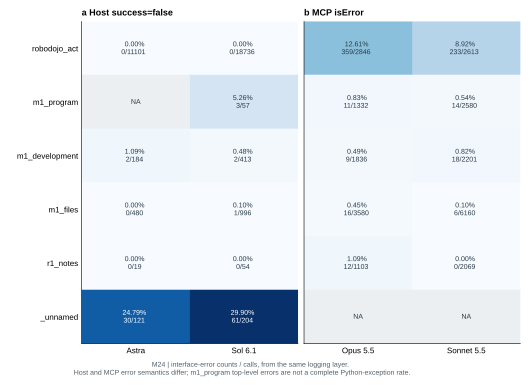
E_{m,j}^{\ell}=\frac{N_{m,j,\rm error}^{\ell}}{N_{m,j,\rm call}^{\ell}}
| 变量 | 含义 |
|---|
| j / ℓ | 工具名称 / 记录层 |
| error | Astra/Sol 为 host success=false；Opus/Sonnet 为 MCP isError |
| _unnamed | host 未记录名称的调用，单列，不归到某个工具 |
M26 程序接口调用计数与可比性
原四模型指标快照 · 已有 metric；本轮补算或扩展读数
Sol 80 次为 exec 字面解析，嵌套动作和包装 exec 的计数会重复，故不强行填同层总调用分母。Opus/Sonnet 各 10 个回合的直接调用数大于 native 接受数，来源脚本 max(0, submissions-direct_calls) 有偏；保留原始代理字段，不把它当可靠动作比例。调用次数高低本身不代表能力强弱，需结合成功和成本。
| 模型 | 有会话 / 正式回合 | 可识别 m1_program 调用 | 同层 MCP 总调用 | 程序接口占比 | 动作相减矛盾回合 |
|---|
| Astra | 0/91 | NA | NA | NA | NA |
| Sol 6.1 | 143/143 | 80 | NA | NA | 0 |
| Opus 5.5 | 175/175 | 1332 | 11094 | 12.01% | 10 |
| Sonnet 5.5 | 165/165 | 2580 | 16090 | 16.03% | 10 |
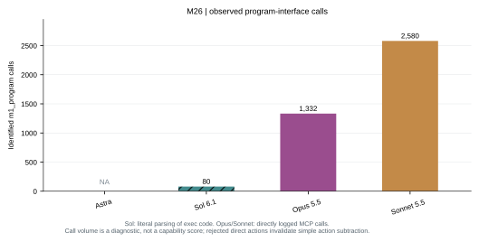
P_m^{\rm call}=N_{m,\texttt{m1\_program}}/N_{m,\rm MCP}
| 变量 | 含义 |
|---|
| N | 同一层记录的调用次数，含报错调用 |
| P call | 接口调用占比，不是物理动作的程序化占比 |
M71 往轮证据访问尝试率
原四模型指标快照 · 本轮新增 metric，单一编号 M71
这是本轮新增的行为诊断，只表示可识别的 m1_development 往轮路径访问尝试，不保证读成功、理解或产生收益。Sol 的 exec 字面解析可能遗漏动态路径；Astra 正式回合没有 rollout，保持 NA。为避免任务长度偏差，主读数使用固定 61 个共同任务×轮次和 11 任务等权；末列跨度只作各模型全部已观察 K≥2 回合的补充诊断。不能替代 M25 程序路径复用、语义技能复用或因果继承收益 G。
| 模型 | 共同任务×轮次覆盖 | 曾访问往轮路径 | 11 任务等权访问率 | 共同 K2 访问 | 较早轮次 / 全部往轮访问 |
|---|
| Astra | 0/61 | NA | NA | NA | NA |
| Sol 6.1 | 61/61 | 29/61 | 62.95% | 10/11 | 23/119 |
| Opus 5.5 | 61/61 | 53/61 | 94.20% | 10/11 | 303/1646 |
| Sonnet 5.5 | 61/61 | 57/61 | 97.73% | 11/11 | 533/2030 |
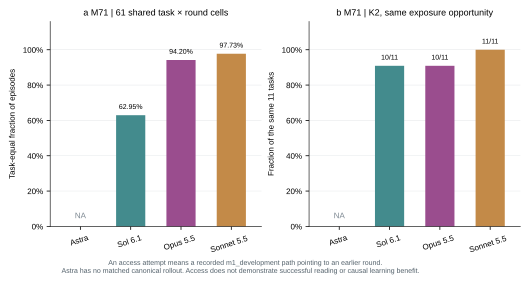
J_t=\{k\ge2:(t,k)\text{ observed for all four models}\},\quad |\mathcal T_H|=11,\quad\sum_t|J_t|=61
A_{m,t,k}=\mathbf1[\exists\ \text{recorded history-path call with }\Delta k\ge1]
H_m=\frac1{11}\sum_{t\in\mathcal T_H}\frac1{|J_t|}\sum_{k\in J_t}A_{m,t,k}
| 变量 | 含义 |
|---|
| J_t | 四模型共同观察到的第 t 个任务的 K≥2 轮次集合，避免机会不同 |
| Δk | 当前轮减路径中引用的历史轮；较早表示 Δk≥2 |
| A / H | 该回合是否尝试访问往轮路径 / 任务等权访问率 |
M72 增长速度与增量均匀性
原四模型指标快照 · 本轮新计算 · M68 同源观察曲线 · 四模型 · 默认原生均分 / K0 基线 / 90% 已观察增益
默认表与静态主图使用原生观察均分、K0 基线和 90% 相对增益阈值。90% 指达到该模型在 K0–K17 已观察最高值相对起点增益的 90%，不是均分达到 0.9。高位前平均斜率 v 越大，单位轮次的净得分增长越快；U 越接近 1，正增量在该窗口内分布越均匀。少数轮次集中跳升会降低 U；零增量和负增量均计入窗口，并单列无正增长比例。主结果支持 Astra / Sol 在早期达到高位前更均匀，但在 100% 阈值下 Astra 的 U 降至 0.389，因此不能把整个 K0–K17 都称作均匀增长。交互图可切换阈值、K0 / K1 基线及成功比例曲线。K0 与 K1 的执行协议不同，K1 基线供敏感性分析；首胜后停止的任务沿用末次观察值，Sonnet 尚未完成，平台可能来自停止或未测。该曲线衡量任务集合的进展，不证明单任务学习一致性。无增益时 v / U 不定义；只有一个区间时 U 的数值不能支持均匀性判断。
| 模型 | 起点均分 | 观察最高均分 | 到高位轮次 τ₉₀ | 高位前斜率 / 轮 | K0–K17 净斜率 / 轮 | 增量均匀性 U₉₀ | 无正增长区间数 |
|---|
| Astra | 0.2417 | 0.8694 | K5 | 0.1144 | 0.0353 | 0.9134 | 0/5 |
| Sol 6.1 | 0.2639 | 0.7278 | K7 | 0.0615 | 0.0250 | 0.8853 | 0/7 |
| Opus 5.5 | 0.0861 | 0.7444 | K14 | 0.0425 | 0.0387 | 0.5263 | 2/14 |
| Sonnet 5.5 | 0.1111 | 0.7000 | K13 | 0.0453 | 0.0346 | 0.4481 | 4/13 |
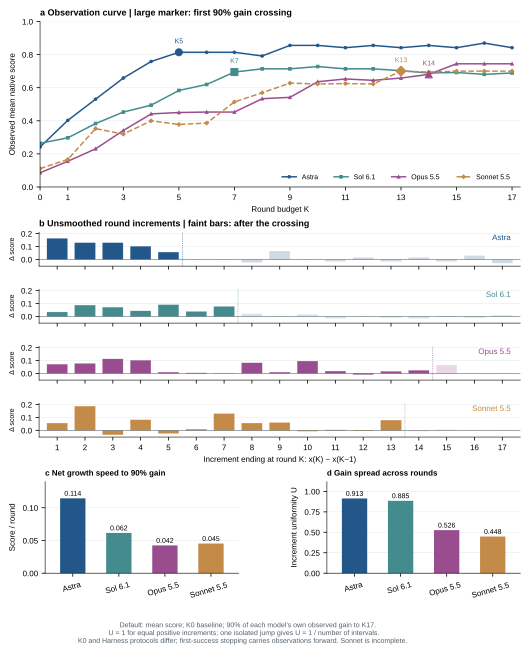
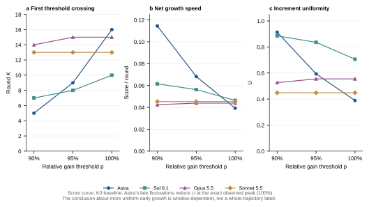
90% / 95% / 100% 阈值敏感性：原生均分，K0 基线
| 模型 | 相对增益阈值 p | 到高位轮次 | 高位前斜率 / 轮 | 均匀性 U | 无正增长区间 |
|---|
| Astra | 90% | K5 | 0.1144 | 0.9134 | 0/5 |
| Astra | 95% | K9 | 0.0682 | 0.5933 | 3/9 |
| Astra | 100% | K16 | 0.0392 | 0.3886 | 7/16 |
| Sol 6.1 | 90% | K7 | 0.0615 | 0.8853 | 0/7 |
| Sol 6.1 | 95% | K8 | 0.0563 | 0.8356 | 0/8 |
| Sol 6.1 | 100% | K10 | 0.0464 | 0.7059 | 1/10 |
| Opus 5.5 | 90% | K14 | 0.0425 | 0.5263 | 2/14 |
| Opus 5.5 | 95% | K15 | 0.0439 | 0.5549 | 2/15 |
| Opus 5.5 | 100% | K15 | 0.0439 | 0.5549 | 2/15 |
| Sonnet 5.5 | 90% | K13 | 0.0453 | 0.4481 | 4/13 |
| Sonnet 5.5 | 95% | K13 | 0.0453 | 0.4481 | 4/13 |
| Sonnet 5.5 | 100% | K13 | 0.0453 | 0.4481 | 4/13 |
新增形态因子 Φ；旧斜率、τ90、U90 及阈值切换保持不变
| 模型 | NG(17) | Φ | D4 = NG(17) × Φ | K6 后新增成功任务 |
|---|
| Astra | 0.7912 | 0.8954 | 0.7085 | 1 |
| Sol 6.1 | 0.5774 | 0.8408 | 0.4855 | 2 |
| Opus 5.5 | 0.7204 | 0.6828 | 0.4919 | 6 |
| Sonnet 5.5 | 0.6625 | 0.7181 | 0.4757 | 5 |
x_m(K)=\frac1{18}\sum_{t=1}^{18}q_{m,t,L_{m,t}(K)},\quad G_m^{obs}(K)=x_m(K)-x_m(0)
x_m^{max}(s)=\max_{s\le k\le17}x_m(k),\quad \tau_{m,p}=\min\{k>s:x_m(k)\ge x_m(s)+p[x_m^{max}(s)-x_m(s)]\}
n_m=\tau_{m,p}-s,\quad d_{m,k}=x_m(k)-x_m(k-1),\quad g_{m,k}=\max(d_{m,k},0)
v_{m,p}=\frac{x_m(\tau_{m,p})-x_m(s)}{n_m},\quad v_m^{full}=\frac{x_m(17)-x_m(s)}{17-s}
U_{m,p}=\frac{(\sum_{k=s+1}^{\tau_{m,p}}g_{m,k})^2}{n_m\sum_{k=s+1}^{\tau_{m,p}}g_{m,k}^2}=\frac1{1+CV(g)^2}
P_{m,p}^{\le0}=\frac1{n_m}\sum_{k=s+1}^{\tau_{m,p}}\mathbf1[d_{m,k}\le0]
\Phi=D_4/NG(17),\quad NG(17)>0
| 变量 | 含义 |
|---|
| m / t / K | 模型 / 固定 18 个任务 / 0–17 轮求解预算 |
| q / L(K) | 原生 score / 该任务不晚于 K 的末次已测轮次，与 M68 完全相同 |
| x(K) | 默认任务等权观察均分；切换成功比例时把 q 替换为原生成功标志 y |
| s / p | 基线轮次 0 或 1 / 相对已观察增益阈值 0.90、0.95、1.00 |
| τ / n | 首次达到阈值的轮次 / 从基线到该轮的轮次间隔数 |
| d / g | 原始相邻轮次增量 / 正增量；负增量不作为正增长抵消 |
| v / v full | 到高位前平均净斜率 / 整个剩余窗口的净斜率；分数单位每轮，成功比例切换为百分点每轮 |
| U / CV | 无量纲增量均匀性 / g 的总体变异系数，零增量包括在 n 内；U=1 为等正增量，单次跳升为 1/n |
| P≤0 | 无正增长区间比例，包含退步区间；|d|≤1e−10 按数值零处理 |
| 阈值边界 | p 是各模型自己的观察增益比例；需结合起点、峰值和阈值敏感性解释，不是共同绝对能力阈值 |
| Φ | 相对最终归一化增益的兑现时序；不是 U90。存在回退或最终增益很小时可超过 1，不能普遍限制在 [1/17,1] |
M01 文档派生回合成功比例
历史诊断 / 原快照；本轮未新增四模型比较
14/208。保留旧文档 14/208 口径，含 K0 及 K18–K20；14 个成功回合对应 13 个不同任务。；证据检查：
| 系列 / 分组 | 值 | 单位 | 样本数 | 分子 / 分母 | 说明 |
|---|
| Opus 全部账本回合 | 6.730769230769231 | % | 208 | 14/208 | |
P_{doc}=14/208
| 变量 | 含义 |
|---|
| m / t / e | 模型 / 任务 / 回合；历史样本范围以当前表的系列与分母为准 |
| y / q / N | 原生成功标志 / 原生 score / 公式对应的有效观察数 |
| T / K / c / W | 首胜轮次 / 预算轮次 / 单次成本 / 累计成本 |
| S / z / J / w | 冻结成功率 / 条件状态 / 目标条件数 / 预定义权重；缺数据时公式仅为目标定义 |
| 比例与差值 | 表内 % 已乘 100；百分点为比例差乘 100；其余物理量和时间单位见表 |
M02 回合成功率
历史诊断 / 原快照；本轮未新增四模型比较
成功回合数/按协议计入的回合数。共同 18 任务、规范 Harness K1–K17；首次成功即停。仅描述求解过程，不是冻结能力。；证据检查：
| 系列 / 分组 | 值 | 单位 | 样本数 | 分子 / 分母 | 说明 |
|---|
| Astra | 16.483516483516482 | % | 91 | 15/91 | |
| Sol 6.1 | 8.391608391608392 | % | 143 | 12/143 | |
| Opus 5.5 | 7.428571428571429 | % | 175 | 13/175 | |
P_{episode}=\sum_e y_e/N
| 变量 | 含义 |
|---|
| m / t / e | 模型 / 任务 / 回合；历史样本范围以当前表的系列与分母为准 |
| y / q / N | 原生成功标志 / 原生 score / 公式对应的有效观察数 |
| T / K / c / W | 首胜轮次 / 预算轮次 / 单次成本 / 累计成本 |
| S / z / J / w | 冻结成功率 / 条件状态 / 目标条件数 / 预定义权重；缺数据时公式仅为目标定义 |
| 比例与差值 | 表内 % 已乘 100；百分点为比例差乘 100；其余物理量和时间单位见表 |
M03 任务等权成功率
历史诊断 / 原快照；本轮未新增四模型比较
各任务回合成功率的等权均值。共同 18 任务、规范 Harness K1–K17；首次成功即停。仅描述求解过程，不是冻结能力。 先平均每任务的观察回合成功比例，再对任务等权；快速解决任务会更高。；证据检查：
| 系列 / 分组 | 值 | 单位 | 样本数 | 分子 / 分母 | 说明 |
|---|
| Astra | 49.876543209876544 | % | 18 | — | |
| Sol 6.1 | 34.54365079365079 | % | 18 | — | |
| Opus 5.5 | 23.313492063492063 | % | 18 | — | |
P_{macro}=n^{-1}\sum_tN_t^{-1}\sum_{e\in E_t}y_e
| 变量 | 含义 |
|---|
| m / t / e | 模型 / 任务 / 回合；历史样本范围以当前表的系列与分母为准 |
| y / q / N | 原生成功标志 / 原生 score / 公式对应的有效观察数 |
| T / K / c / W | 首胜轮次 / 预算轮次 / 单次成本 / 累计成本 |
| S / z / J / w | 冻结成功率 / 条件状态 / 目标条件数 / 预定义权重；缺数据时公式仅为目标定义 |
| 比例与差值 | 表内 % 已乘 100；百分点为比例差乘 100；其余物理量和时间单位见表 |
M07 封顶尝试成本
历史诊断 / 原快照；本轮未新增四模型比较
完整共同预算下 mean(min(T_first;B))。未成功任务按共同上限 17 计；这是封顶名义轮次，不是实际重试次数。；证据检查：
| 系列 / 分组 | 值 | 单位 | 样本数 | 分子 / 分母 | 说明 |
|---|
| Astra | 5.055555555555555 | K | 18 | — | |
| Sol 6.1 | 7.944444444444445 | K | 18 | — | |
| Opus 5.5 | 9.722222222222221 | K | 18 | — | |
A_m=\mathrm{mean}_t\min(T_{m,t},17)
| 变量 | 含义 |
|---|
| m / t / e | 模型 / 任务 / 回合；历史样本范围以当前表的系列与分母为准 |
| y / q / N | 原生成功标志 / 原生 score / 公式对应的有效观察数 |
| T / K / c / W | 首胜轮次 / 预算轮次 / 单次成本 / 累计成本 |
| S / z / J / w | 冻结成功率 / 条件状态 / 目标条件数 / 预定义权重；缺数据时公式仅为目标定义 |
| 比例与差值 | 表内 % 已乘 100；百分点为比例差乘 100；其余物理量和时间单位见表 |
M11 数据完整率
历史诊断 / 原快照；本轮未新增四模型比较
存在且可解析的应有记录数/预定记录数。分母是本地纳入旧版的物理回合，不代表所有远端启动记录；Opus 另有 44 个未评分回合。；证据检查：
| 系列 / 分组 | 值 | 单位 | 样本数 | 分子 / 分母 | 说明 |
|---|
| Astra / 终局 | 100.0 | % | 122 | 122/122 | |
| Astra / 得分 | 95.90163934426229 | % | 122 | 117/122 | |
| Astra / 步数 | 100.0 | % | 122 | 122/122 | |
| Astra / 输出 token | 0.0 | % | 122 | 0/122 | |
| Sol 6.1 / 终局 | 100.0 | % | 165 | 165/165 | |
| Sol 6.1 / 得分 | 100.0 | % | 165 | 165/165 | |
| Sol 6.1 / 步数 | 100.0 | % | 165 | 165/165 | |
| Sol 6.1 / 输出 token | 86.66666666666667 | % | 165 | 143/165 | |
| Opus 5.5 / 终局 | 100.0 | % | 208 | 208/208 | |
| Opus 5.5 / 得分 | 100.0 | % | 208 | 208/208 | |
| Opus 5.5 / 步数 | 100.0 | % | 208 | 208/208 | |
| Opus 5.5 / 输出 token | 100.0 | % | 208 | 208/208 | |
f_m=\#\{e:\mathrm{field\ observed}\}/N_m
| 变量 | 含义 |
|---|
| m / t / e | 模型 / 任务 / 回合；历史样本范围以当前表的系列与分母为准 |
| y / q / N | 原生成功标志 / 原生 score / 公式对应的有效观察数 |
| T / K / c / W | 首胜轮次 / 预算轮次 / 单次成本 / 累计成本 |
| S / z / J / w | 冻结成功率 / 条件状态 / 目标条件数 / 预定义权重；缺数据时公式仅为目标定义 |
| 比例与差值 | 表内 % 已乘 100；百分点为比例差乘 100；其余物理量和时间单位见表 |
M13 成功回合动作效率
历史诊断 / 原快照；本轮未新增四模型比较
成功回合实际动作数和执行步数分布。仅成功回合的实际步数/决策数中位数；各模型成功任务集合不同，不能据此作公平效率排名。；证据检查：
| 系列 / 分组 | 值 | 单位 | 样本数 | 分子 / 分母 | 说明 |
|---|
| Astra | 407 | 步 | 15 | — | |
| Astra | 82 | 决策 | 15 | — | |
| Sol 6.1 | 494.0 | 步 | 12 | — | |
| Sol 6.1 | 100.0 | 决策 | 12 | — | |
| Opus 5.5 | 601 | 步 | 13 | — | |
| Opus 5.5 | 138 | 决策 | 13 | — | |
A_m^{succ}=\mathrm{mean}_{e:y_e=1}a_e
| 变量 | 含义 |
|---|
| m / t / e | 模型 / 任务 / 回合；历史样本范围以当前表的系列与分母为准 |
| y / q / N | 原生成功标志 / 原生 score / 公式对应的有效观察数 |
| T / K / c / W | 首胜轮次 / 预算轮次 / 单次成本 / 累计成本 |
| S / z / J / w | 冻结成功率 / 条件状态 / 目标条件数 / 预定义权重；缺数据时公式仅为目标定义 |
| 比例与差值 | 表内 % 已乘 100；百分点为比例差乘 100；其余物理量和时间单位见表 |
M14 已执行夹爪指令切换次数
历史诊断 / 原快照；本轮未新增四模型比较
history 中已执行 closed 状态的切换次数。已执行夹爪 closed 指令切换的回合均值，不是接触事件或抓取成功数。共同 18 任务、规范 Harness K1–K17；首次成功即停。仅描述求解过程，不是冻结能力。；证据检查：
| 系列 / 分组 | 值 | 单位 | 样本数 | 分子 / 分母 | 说明 |
|---|
| Astra | 13.373626373626374 | 次 | 91 | — | |
| Sol 6.1 | 11.671328671328672 | 次 | 143 | — | |
| Opus 5.5 | 9.32 | 次 | 175 | — | |
g_e=\sum_i\mathbf1[c_i\ne c_{i-1}]
| 变量 | 含义 |
|---|
| m / t / e | 模型 / 任务 / 回合；历史样本范围以当前表的系列与分母为准 |
| y / q / N | 原生成功标志 / 原生 score / 公式对应的有效观察数 |
| T / K / c / W | 首胜轮次 / 预算轮次 / 单次成本 / 累计成本 |
| S / z / J / w | 冻结成功率 / 条件状态 / 目标条件数 / 预定义权重；缺数据时公式仅为目标定义 |
| 比例与差值 | 表内 % 已乘 100；百分点为比例差乘 100；其余物理量和时间单位见表 |
M17 末轮与历史最好分差
历史诊断 / 原快照；本轮未新增四模型比较
各任务 max(score)−末轮 score 的任务等权均值。共同 18 任务、规范 Harness K1–K17；首次成功即停。仅描述求解过程，不是冻结能力。 历史最好分仅取可用记录；不直接解释为遗忘。；证据检查：
| 系列 / 分组 | 值 | 单位 | 样本数 | 分子 / 分母 | 说明 |
|---|
| Astra | 0.027777777777777776 | 得分差 | 18 | — | |
| Sol 6.1 | 0.03888888888888889 | 得分差 | 18 | — | |
| Opus 5.5 | 0.008333333333333335 | 得分差 | 18 | — | |
H_m=n^{-1}\sum_t(\max_kq_{t,k}-q_{t,L_t})
| 变量 | 含义 |
|---|
| m / t / e | 模型 / 任务 / 回合；历史样本范围以当前表的系列与分母为准 |
| y / q / N | 原生成功标志 / 原生 score / 公式对应的有效观察数 |
| T / K / c / W | 首胜轮次 / 预算轮次 / 单次成本 / 累计成本 |
| S / z / J / w | 冻结成功率 / 条件状态 / 目标条件数 / 预定义权重；缺数据时公式仅为目标定义 |
| 比例与差值 | 表内 % 已乘 100；百分点为比例差乘 100；其余物理量和时间单位见表 |
M19 仍在求解任务的逐 K 原生均分
历史诊断 / 原快照；本轮未新增四模型比较
每个 K 中仍在运行且分数可用任务的平均分。成功任务退出后，后续均值主要剩较难任务；分母随 K 改变，此图不能解释为能力学习曲线。；证据检查：
| 系列 / 分组 | 值 | 单位 | 样本数 | 分子 / 分母 | 说明 |
|---|
| Astra | 0.48333333333333334 | 得分 | 15 | — | |
| Astra | 0.29583333333333334 | 得分 | 12 | — | |
| Astra | 0.31666666666666665 | 得分 | 9 | — | |
| Astra | 0.37857142857142856 | 得分 | 7 | — | |
| Astra | 0.33 | 得分 | 5 | — | |
| Astra | 0.1625 | 得分 | 4 | — | |
| Astra | 0.1625 | 得分 | 4 | — | |
| Astra | 0.0625 | 得分 | 4 | — | |
| Astra | 0.35 | 得分 | 4 | — | |
| Astra | 0.13333333333333333 | 得分 | 3 | — | |
| Astra | 0.049999999999999996 | 得分 | 3 | — | |
| Astra | 0.13333333333333333 | 得分 | 3 | — | |
| Astra | 0.049999999999999996 | 得分 | 3 | — | |
| Astra | 0.13333333333333333 | 得分 | 3 | — | |
| Astra | 0.049999999999999996 | 得分 | 3 | — | |
| Astra | 0.21666666666666667 | 得分 | 3 | — | |
| Astra | 0.049999999999999996 | 得分 | 3 | — | |
| Sol 6.1 | 0.2972222222222222 | 得分 | 18 | — | |
| Sol 6.1 | 0.20714285714285713 | 得分 | 14 | — | |
| Sol 6.1 | 0.17916666666666667 | 得分 | 12 | — | |
| Sol 6.1 | 0.17272727272727273 | 得分 | 11 | — | |
| Sol 6.1 | 0.25 | 得分 | 10 | — | |
| Sol 6.1 | 0.2388888888888889 | 得分 | 9 | — | |
| Sol 6.1 | 0.3125 | 得分 | 8 | — | |
| Sol 6.1 | 0.2642857142857143 | 得分 | 7 | — | |
| Sol 6.1 | 0.14166666666666666 | 得分 | 6 | — | |
| Sol 6.1 | 0.18333333333333335 | 得分 | 6 | — | |
| Sol 6.1 | 0.14166666666666666 | 得分 | 6 | — | |
| Sol 6.1 | 0.14166666666666666 | 得分 | 6 | — | |
| Sol 6.1 | 0.10833333333333334 | 得分 | 6 | — | |
| Sol 6.1 | 0.06666666666666667 | 得分 | 6 | — | |
| Sol 6.1 | 0.075 | 得分 | 6 | — | |
| Sol 6.1 | 0.041666666666666664 | 得分 | 6 | — | |
| Sol 6.1 | 0.06666666666666667 | 得分 | 6 | — | |
| Opus 5.5 | 0.15555555555555556 | 得分 | 18 | — | |
| Opus 5.5 | 0.134375 | 得分 | 16 | — | |
| Opus 5.5 | 0.21 | 得分 | 15 | — | |
| Opus 5.5 | 0.22692307692307692 | 得分 | 13 | — | |
| Opus 5.5 | 0.1 | 得分 | 11 | — | |
| Opus 5.5 | 0.10454545454545454 | 得分 | 11 | — | |
| Opus 5.5 | 0.10454545454545455 | 得分 | 11 | — | |
| Opus 5.5 | 0.23636363636363636 | 得分 | 11 | — | |
| Opus 5.5 | 0.175 | 得分 | 10 | — | |
| Opus 5.5 | 0.345 | 得分 | 10 | — | |
| Opus 5.5 | 0.21875 | 得分 | 8 | — | |
| Opus 5.5 | 0.2 | 得分 | 8 | — | |
| Opus 5.5 | 0.23125 | 得分 | 8 | — | |
| Opus 5.5 | 0.28125 | 得分 | 8 | — | |
| Opus 5.5 | 0.34285714285714286 | 得分 | 7 | — | |
| Opus 5.5 | 0.08 | 得分 | 5 | — | |
| Opus 5.5 | 0.08 | 得分 | 5 | — | |
\bar q_m^{active}(k)=|A_{m,k}|^{-1}\sum_{t\in A_{m,k}}q_{m,t,k}
| 变量 | 含义 |
|---|
| m / t / e | 模型 / 任务 / 回合；历史样本范围以当前表的系列与分母为准 |
| y / q / N | 原生成功标志 / 原生 score / 公式对应的有效观察数 |
| T / K / c / W | 首胜轮次 / 预算轮次 / 单次成本 / 累计成本 |
| S / z / J / w | 冻结成功率 / 条件状态 / 目标条件数 / 预定义权重；缺数据时公式仅为目标定义 |
| 比例与差值 | 表内 % 已乘 100；百分点为比例差乘 100；其余物理量和时间单位见表 |
M20 首次成功累计成本
历史诊断 / 原快照；本轮未新增四模型比较
规范 K1–首次成功的累计原生步数/墙钟中位数，仅成功任务。不含 K0、Astra 非规范重试及模型修订阶段开销；只是已记录原生成本，不能写成完整学习成本。；证据检查：
| 系列 / 分组 | 值 | 单位 | 样本数 | 分子 / 分母 | 说明 |
|---|
| Astra | 662.0 | 步 | 15 | — | |
| Sol 6.1 | 1671.0 | 步 | 12 | — | |
| Opus 5.5 | 3400.0 | 步 | 13 | — | |
| Astra | 98.03529547816531 | 分钟 | 15 | — | |
| Sol 6.1 | 122.61706271263344 | 分钟 | 12 | — | |
| Opus 5.5 | 240.2968324025472 | 分钟 | 13 | — | |
W_{m,t}=\sum_{k=1}^{T_{m,t}}c_{m,t,k}
| 变量 | 含义 |
|---|
| m / t / e | 模型 / 任务 / 回合；历史样本范围以当前表的系列与分母为准 |
| y / q / N | 原生成功标志 / 原生 score / 公式对应的有效观察数 |
| T / K / c / W | 首胜轮次 / 预算轮次 / 单次成本 / 累计成本 |
| S / z / J / w | 冻结成功率 / 条件状态 / 目标条件数 / 预定义权重；缺数据时公式仅为目标定义 |
| 比例与差值 | 表内 % 已乘 100；百分点为比例差乘 100；其余物理量和时间单位见表 |
M21 成本覆盖曲线
历史诊断 / 原快照；本轮未新增四模型比较
累计成本预算内曾成功的任务比例。成功只有在有结果的回合端点才计入。覆盖分母固定 18；成本仅规范 K1–K17，不含 Astra 额外重试及模型修订开销。预算外和未成功任务保持未解决。；证据检查：
| 系列 / 分组 | 值 | 单位 | 样本数 | 分子 / 分母 | 说明 |
|---|
| Astra | 0.0 | % | 18 | 0/18 | 步 |
| Astra | 0.0 | % | 18 | 0/18 | 步 |
| Astra | 5.555555555555555 | % | 18 | 1/18 | 步 |
| Astra | 5.555555555555555 | % | 18 | 1/18 | 步 |
| Astra | 5.555555555555555 | % | 18 | 1/18 | 步 |
| Astra | 11.11111111111111 | % | 18 | 2/18 | 步 |
| Astra | 16.666666666666668 | % | 18 | 3/18 | 步 |
| Astra | 22.22222222222222 | % | 18 | 4/18 | 步 |
| Astra | 22.22222222222222 | % | 18 | 4/18 | 步 |
| Astra | 22.22222222222222 | % | 18 | 4/18 | 步 |
| Astra | 27.77777777777778 | % | 18 | 5/18 | 步 |
| Astra | 27.77777777777778 | % | 18 | 5/18 | 步 |
| Astra | 33.333333333333336 | % | 18 | 6/18 | 步 |
| Astra | 38.888888888888886 | % | 18 | 7/18 | 步 |
| Astra | 44.44444444444444 | % | 18 | 8/18 | 步 |
| Astra | 44.44444444444444 | % | 18 | 8/18 | 步 |
| Astra | 50.0 | % | 18 | 9/18 | 步 |
| Astra | 50.0 | % | 18 | 9/18 | 步 |
| Astra | 50.0 | % | 18 | 9/18 | 步 |
| Astra | 55.55555555555556 | % | 18 | 10/18 | 步 |
| Astra | 61.111111111111114 | % | 18 | 11/18 | 步 |
| Astra | 61.111111111111114 | % | 18 | 11/18 | 步 |
| Astra | 66.66666666666667 | % | 18 | 12/18 | 步 |
| Astra | 66.66666666666667 | % | 18 | 12/18 | 步 |
| Astra | 66.66666666666667 | % | 18 | 12/18 | 步 |
| Astra | 66.66666666666667 | % | 18 | 12/18 | 步 |
| Astra | 66.66666666666667 | % | 18 | 12/18 | 步 |
| Astra | 72.22222222222223 | % | 18 | 13/18 | 步 |
| Astra | 72.22222222222223 | % | 18 | 13/18 | 步 |
| Astra | 72.22222222222223 | % | 18 | 13/18 | 步 |
| Astra | 77.77777777777777 | % | 18 | 14/18 | 步 |
| Astra | 77.77777777777777 | % | 18 | 14/18 | 步 |
| Astra | 77.77777777777777 | % | 18 | 14/18 | 步 |
| Astra | 77.77777777777777 | % | 18 | 14/18 | 步 |
| Astra | 77.77777777777777 | % | 18 | 14/18 | 步 |
| Astra | 77.77777777777777 | % | 18 | 14/18 | 步 |
| Astra | 77.77777777777777 | % | 18 | 14/18 | 步 |
| Astra | 77.77777777777777 | % | 18 | 14/18 | 步 |
| Astra | 83.33333333333333 | % | 18 | 15/18 | 步 |
| Astra | 83.33333333333333 | % | 18 | 15/18 | 步 |
| Astra | 83.33333333333333 | % | 18 | 15/18 | 步 |
| Sol 6.1 | 0.0 | % | 18 | 0/18 | 步 |
| Sol 6.1 | 5.555555555555555 | % | 18 | 1/18 | 步 |
| Sol 6.1 | 5.555555555555555 | % | 18 | 1/18 | 步 |
| Sol 6.1 | 5.555555555555555 | % | 18 | 1/18 | 步 |
| Sol 6.1 | 11.11111111111111 | % | 18 | 2/18 | 步 |
| Sol 6.1 | 11.11111111111111 | % | 18 | 2/18 | 步 |
| Sol 6.1 | 11.11111111111111 | % | 18 | 2/18 | 步 |
| Sol 6.1 | 11.11111111111111 | % | 18 | 2/18 | 步 |
| Sol 6.1 | 16.666666666666668 | % | 18 | 3/18 | 步 |
| Sol 6.1 | 16.666666666666668 | % | 18 | 3/18 | 步 |
| Sol 6.1 | 16.666666666666668 | % | 18 | 3/18 | 步 |
| Sol 6.1 | 16.666666666666668 | % | 18 | 3/18 | 步 |
| Sol 6.1 | 16.666666666666668 | % | 18 | 3/18 | 步 |
| Sol 6.1 | 16.666666666666668 | % | 18 | 3/18 | 步 |
| Sol 6.1 | 16.666666666666668 | % | 18 | 3/18 | 步 |
| Sol 6.1 | 22.22222222222222 | % | 18 | 4/18 | 步 |
| Sol 6.1 | 22.22222222222222 | % | 18 | 4/18 | 步 |
| Sol 6.1 | 22.22222222222222 | % | 18 | 4/18 | 步 |
| Sol 6.1 | 27.77777777777778 | % | 18 | 5/18 | 步 |
| Sol 6.1 | 27.77777777777778 | % | 18 | 5/18 | 步 |
| Sol 6.1 | 27.77777777777778 | % | 18 | 5/18 | 步 |
| Sol 6.1 | 33.333333333333336 | % | 18 | 6/18 | 步 |
| Sol 6.1 | 33.333333333333336 | % | 18 | 6/18 | 步 |
| Sol 6.1 | 38.888888888888886 | % | 18 | 7/18 | 步 |
| Sol 6.1 | 44.44444444444444 | % | 18 | 8/18 | 步 |
| Sol 6.1 | 44.44444444444444 | % | 18 | 8/18 | 步 |
| Sol 6.1 | 50.0 | % | 18 | 9/18 | 步 |
| Sol 6.1 | 50.0 | % | 18 | 9/18 | 步 |
| Sol 6.1 | 50.0 | % | 18 | 9/18 | 步 |
| Sol 6.1 | 50.0 | % | 18 | 9/18 | 步 |
| Sol 6.1 | 50.0 | % | 18 | 9/18 | 步 |
| Sol 6.1 | 50.0 | % | 18 | 9/18 | 步 |
| Sol 6.1 | 50.0 | % | 18 | 9/18 | 步 |
| Sol 6.1 | 50.0 | % | 18 | 9/18 | 步 |
| Sol 6.1 | 55.55555555555556 | % | 18 | 10/18 | 步 |
| Sol 6.1 | 61.111111111111114 | % | 18 | 11/18 | 步 |
| Sol 6.1 | 61.111111111111114 | % | 18 | 11/18 | 步 |
| Sol 6.1 | 66.66666666666667 | % | 18 | 12/18 | 步 |
| Sol 6.1 | 66.66666666666667 | % | 18 | 12/18 | 步 |
| Sol 6.1 | 66.66666666666667 | % | 18 | 12/18 | 步 |
| Sol 6.1 | 66.66666666666667 | % | 18 | 12/18 | 步 |
| Opus 5.5 | 0.0 | % | 18 | 0/18 | 步 |
| Opus 5.5 | 0.0 | % | 18 | 0/18 | 步 |
| Opus 5.5 | 0.0 | % | 18 | 0/18 | 步 |
| Opus 5.5 | 5.555555555555555 | % | 18 | 1/18 | 步 |
| Opus 5.5 | 5.555555555555555 | % | 18 | 1/18 | 步 |
| Opus 5.5 | 5.555555555555555 | % | 18 | 1/18 | 步 |
| Opus 5.5 | 5.555555555555555 | % | 18 | 1/18 | 步 |
| Opus 5.5 | 5.555555555555555 | % | 18 | 1/18 | 步 |
| Opus 5.5 | 5.555555555555555 | % | 18 | 1/18 | 步 |
| Opus 5.5 | 11.11111111111111 | % | 18 | 2/18 | 步 |
| Opus 5.5 | 11.11111111111111 | % | 18 | 2/18 | 步 |
| Opus 5.5 | 16.666666666666668 | % | 18 | 3/18 | 步 |
| Opus 5.5 | 16.666666666666668 | % | 18 | 3/18 | 步 |
| Opus 5.5 | 16.666666666666668 | % | 18 | 3/18 | 步 |
| Opus 5.5 | 16.666666666666668 | % | 18 | 3/18 | 步 |
| Opus 5.5 | 16.666666666666668 | % | 18 | 3/18 | 步 |
| Opus 5.5 | 16.666666666666668 | % | 18 | 3/18 | 步 |
| Opus 5.5 | 22.22222222222222 | % | 18 | 4/18 | 步 |
| Opus 5.5 | 22.22222222222222 | % | 18 | 4/18 | 步 |
| Opus 5.5 | 22.22222222222222 | % | 18 | 4/18 | 步 |
| Opus 5.5 | 22.22222222222222 | % | 18 | 4/18 | 步 |
| Opus 5.5 | 22.22222222222222 | % | 18 | 4/18 | 步 |
| Opus 5.5 | 22.22222222222222 | % | 18 | 4/18 | 步 |
| Opus 5.5 | 22.22222222222222 | % | 18 | 4/18 | 步 |
| Opus 5.5 | 22.22222222222222 | % | 18 | 4/18 | 步 |
| Opus 5.5 | 27.77777777777778 | % | 18 | 5/18 | 步 |
| Opus 5.5 | 27.77777777777778 | % | 18 | 5/18 | 步 |
| Opus 5.5 | 27.77777777777778 | % | 18 | 5/18 | 步 |
| Opus 5.5 | 33.333333333333336 | % | 18 | 6/18 | 步 |
| Opus 5.5 | 38.888888888888886 | % | 18 | 7/18 | 步 |
| Opus 5.5 | 38.888888888888886 | % | 18 | 7/18 | 步 |
| Opus 5.5 | 44.44444444444444 | % | 18 | 8/18 | 步 |
| Opus 5.5 | 50.0 | % | 18 | 9/18 | 步 |
| Opus 5.5 | 55.55555555555556 | % | 18 | 10/18 | 步 |
| Opus 5.5 | 55.55555555555556 | % | 18 | 10/18 | 步 |
| Opus 5.5 | 55.55555555555556 | % | 18 | 10/18 | 步 |
| Opus 5.5 | 61.111111111111114 | % | 18 | 11/18 | 步 |
| Opus 5.5 | 61.111111111111114 | % | 18 | 11/18 | 步 |
| Opus 5.5 | 61.111111111111114 | % | 18 | 11/18 | 步 |
| Opus 5.5 | 66.66666666666667 | % | 18 | 12/18 | 步 |
| Opus 5.5 | 72.22222222222223 | % | 18 | 13/18 | 步 |
| Astra | 0.0 | % | 18 | 0/18 | 分钟 |
| Astra | 0.0 | % | 18 | 0/18 | 分钟 |
| Astra | 0.0 | % | 18 | 0/18 | 分钟 |
| Astra | 0.0 | % | 18 | 0/18 | 分钟 |
| Astra | 5.555555555555555 | % | 18 | 1/18 | 分钟 |
| Astra | 11.11111111111111 | % | 18 | 2/18 | 分钟 |
| Astra | 16.666666666666668 | % | 18 | 3/18 | 分钟 |
| Astra | 22.22222222222222 | % | 18 | 4/18 | 分钟 |
| Astra | 22.22222222222222 | % | 18 | 4/18 | 分钟 |
| Astra | 22.22222222222222 | % | 18 | 4/18 | 分钟 |
| Astra | 27.77777777777778 | % | 18 | 5/18 | 分钟 |
| Astra | 33.333333333333336 | % | 18 | 6/18 | 分钟 |
| Astra | 33.333333333333336 | % | 18 | 6/18 | 分钟 |
| Astra | 38.888888888888886 | % | 18 | 7/18 | 分钟 |
| Astra | 38.888888888888886 | % | 18 | 7/18 | 分钟 |
| Astra | 44.44444444444444 | % | 18 | 8/18 | 分钟 |
| Astra | 44.44444444444444 | % | 18 | 8/18 | 分钟 |
| Astra | 44.44444444444444 | % | 18 | 8/18 | 分钟 |
| Astra | 44.44444444444444 | % | 18 | 8/18 | 分钟 |
| Astra | 44.44444444444444 | % | 18 | 8/18 | 分钟 |
| Astra | 44.44444444444444 | % | 18 | 8/18 | 分钟 |
| Astra | 44.44444444444444 | % | 18 | 8/18 | 分钟 |
| Astra | 50.0 | % | 18 | 9/18 | 分钟 |
| Astra | 55.55555555555556 | % | 18 | 10/18 | 分钟 |
| Astra | 55.55555555555556 | % | 18 | 10/18 | 分钟 |
| Astra | 55.55555555555556 | % | 18 | 10/18 | 分钟 |
| Astra | 55.55555555555556 | % | 18 | 10/18 | 分钟 |
| Astra | 55.55555555555556 | % | 18 | 10/18 | 分钟 |
| Astra | 61.111111111111114 | % | 18 | 11/18 | 分钟 |
| Astra | 66.66666666666667 | % | 18 | 12/18 | 分钟 |
| Astra | 66.66666666666667 | % | 18 | 12/18 | 分钟 |
| Astra | 72.22222222222223 | % | 18 | 13/18 | 分钟 |
| Astra | 72.22222222222223 | % | 18 | 13/18 | 分钟 |
| Astra | 72.22222222222223 | % | 18 | 13/18 | 分钟 |
| Astra | 72.22222222222223 | % | 18 | 13/18 | 分钟 |
| Astra | 72.22222222222223 | % | 18 | 13/18 | 分钟 |
| Astra | 72.22222222222223 | % | 18 | 13/18 | 分钟 |
| Astra | 77.77777777777777 | % | 18 | 14/18 | 分钟 |
| Astra | 77.77777777777777 | % | 18 | 14/18 | 分钟 |
| Astra | 77.77777777777777 | % | 18 | 14/18 | 分钟 |
| Astra | 83.33333333333333 | % | 18 | 15/18 | 分钟 |
| Astra | 83.33333333333333 | % | 18 | 15/18 | 分钟 |
| Sol 6.1 | 0.0 | % | 18 | 0/18 | 分钟 |
| Sol 6.1 | 5.555555555555555 | % | 18 | 1/18 | 分钟 |
| Sol 6.1 | 5.555555555555555 | % | 18 | 1/18 | 分钟 |
| Sol 6.1 | 11.11111111111111 | % | 18 | 2/18 | 分钟 |
| Sol 6.1 | 11.11111111111111 | % | 18 | 2/18 | 分钟 |
| Sol 6.1 | 11.11111111111111 | % | 18 | 2/18 | 分钟 |
| Sol 6.1 | 11.11111111111111 | % | 18 | 2/18 | 分钟 |
| Sol 6.1 | 11.11111111111111 | % | 18 | 2/18 | 分钟 |
| Sol 6.1 | 16.666666666666668 | % | 18 | 3/18 | 分钟 |
| Sol 6.1 | 22.22222222222222 | % | 18 | 4/18 | 分钟 |
| Sol 6.1 | 22.22222222222222 | % | 18 | 4/18 | 分钟 |
| Sol 6.1 | 22.22222222222222 | % | 18 | 4/18 | 分钟 |
| Sol 6.1 | 22.22222222222222 | % | 18 | 4/18 | 分钟 |
| Sol 6.1 | 22.22222222222222 | % | 18 | 4/18 | 分钟 |
| Sol 6.1 | 22.22222222222222 | % | 18 | 4/18 | 分钟 |
| Sol 6.1 | 22.22222222222222 | % | 18 | 4/18 | 分钟 |
| Sol 6.1 | 27.77777777777778 | % | 18 | 5/18 | 分钟 |
| Sol 6.1 | 33.333333333333336 | % | 18 | 6/18 | 分钟 |
| Sol 6.1 | 38.888888888888886 | % | 18 | 7/18 | 分钟 |
| Sol 6.1 | 44.44444444444444 | % | 18 | 8/18 | 分钟 |
| Sol 6.1 | 44.44444444444444 | % | 18 | 8/18 | 分钟 |
| Sol 6.1 | 50.0 | % | 18 | 9/18 | 分钟 |
| Sol 6.1 | 50.0 | % | 18 | 9/18 | 分钟 |
| Sol 6.1 | 50.0 | % | 18 | 9/18 | 分钟 |
| Sol 6.1 | 50.0 | % | 18 | 9/18 | 分钟 |
| Sol 6.1 | 50.0 | % | 18 | 9/18 | 分钟 |
| Sol 6.1 | 50.0 | % | 18 | 9/18 | 分钟 |
| Sol 6.1 | 55.55555555555556 | % | 18 | 10/18 | 分钟 |
| Sol 6.1 | 55.55555555555556 | % | 18 | 10/18 | 分钟 |
| Sol 6.1 | 55.55555555555556 | % | 18 | 10/18 | 分钟 |
| Sol 6.1 | 55.55555555555556 | % | 18 | 10/18 | 分钟 |
| Sol 6.1 | 55.55555555555556 | % | 18 | 10/18 | 分钟 |
| Sol 6.1 | 55.55555555555556 | % | 18 | 10/18 | 分钟 |
| Sol 6.1 | 55.55555555555556 | % | 18 | 10/18 | 分钟 |
| Sol 6.1 | 61.111111111111114 | % | 18 | 11/18 | 分钟 |
| Sol 6.1 | 66.66666666666667 | % | 18 | 12/18 | 分钟 |
| Sol 6.1 | 66.66666666666667 | % | 18 | 12/18 | 分钟 |
| Sol 6.1 | 66.66666666666667 | % | 18 | 12/18 | 分钟 |
| Sol 6.1 | 66.66666666666667 | % | 18 | 12/18 | 分钟 |
| Sol 6.1 | 66.66666666666667 | % | 18 | 12/18 | 分钟 |
| Sol 6.1 | 66.66666666666667 | % | 18 | 12/18 | 分钟 |
| Sol 6.1 | 66.66666666666667 | % | 18 | 12/18 | 分钟 |
| Opus 5.5 | 0.0 | % | 18 | 0/18 | 分钟 |
| Opus 5.5 | 0.0 | % | 18 | 0/18 | 分钟 |
| Opus 5.5 | 5.555555555555555 | % | 18 | 1/18 | 分钟 |
| Opus 5.5 | 5.555555555555555 | % | 18 | 1/18 | 分钟 |
| Opus 5.5 | 5.555555555555555 | % | 18 | 1/18 | 分钟 |
| Opus 5.5 | 5.555555555555555 | % | 18 | 1/18 | 分钟 |
| Opus 5.5 | 5.555555555555555 | % | 18 | 1/18 | 分钟 |
| Opus 5.5 | 5.555555555555555 | % | 18 | 1/18 | 分钟 |
| Opus 5.5 | 5.555555555555555 | % | 18 | 1/18 | 分钟 |
| Opus 5.5 | 5.555555555555555 | % | 18 | 1/18 | 分钟 |
| Opus 5.5 | 5.555555555555555 | % | 18 | 1/18 | 分钟 |
| Opus 5.5 | 5.555555555555555 | % | 18 | 1/18 | 分钟 |
| Opus 5.5 | 11.11111111111111 | % | 18 | 2/18 | 分钟 |
| Opus 5.5 | 11.11111111111111 | % | 18 | 2/18 | 分钟 |
| Opus 5.5 | 16.666666666666668 | % | 18 | 3/18 | 分钟 |
| Opus 5.5 | 16.666666666666668 | % | 18 | 3/18 | 分钟 |
| Opus 5.5 | 16.666666666666668 | % | 18 | 3/18 | 分钟 |
| Opus 5.5 | 16.666666666666668 | % | 18 | 3/18 | 分钟 |
| Opus 5.5 | 16.666666666666668 | % | 18 | 3/18 | 分钟 |
| Opus 5.5 | 16.666666666666668 | % | 18 | 3/18 | 分钟 |
| Opus 5.5 | 22.22222222222222 | % | 18 | 4/18 | 分钟 |
| Opus 5.5 | 22.22222222222222 | % | 18 | 4/18 | 分钟 |
| Opus 5.5 | 22.22222222222222 | % | 18 | 4/18 | 分钟 |
| Opus 5.5 | 22.22222222222222 | % | 18 | 4/18 | 分钟 |
| Opus 5.5 | 27.77777777777778 | % | 18 | 5/18 | 分钟 |
| Opus 5.5 | 33.333333333333336 | % | 18 | 6/18 | 分钟 |
| Opus 5.5 | 38.888888888888886 | % | 18 | 7/18 | 分钟 |
| Opus 5.5 | 38.888888888888886 | % | 18 | 7/18 | 分钟 |
| Opus 5.5 | 38.888888888888886 | % | 18 | 7/18 | 分钟 |
| Opus 5.5 | 38.888888888888886 | % | 18 | 7/18 | 分钟 |
| Opus 5.5 | 44.44444444444444 | % | 18 | 8/18 | 分钟 |
| Opus 5.5 | 44.44444444444444 | % | 18 | 8/18 | 分钟 |
| Opus 5.5 | 50.0 | % | 18 | 9/18 | 分钟 |
| Opus 5.5 | 55.55555555555556 | % | 18 | 10/18 | 分钟 |
| Opus 5.5 | 55.55555555555556 | % | 18 | 10/18 | 分钟 |
| Opus 5.5 | 55.55555555555556 | % | 18 | 10/18 | 分钟 |
| Opus 5.5 | 61.111111111111114 | % | 18 | 11/18 | 分钟 |
| Opus 5.5 | 61.111111111111114 | % | 18 | 11/18 | 分钟 |
| Opus 5.5 | 66.66666666666667 | % | 18 | 12/18 | 分钟 |
| Opus 5.5 | 72.22222222222223 | % | 18 | 13/18 | 分钟 |
| Opus 5.5 | 72.22222222222223 | % | 18 | 13/18 | 分钟 |
| Opus 5.5 | 72.22222222222223 | % | 18 | 13/18 | 分钟 |
C_m^{cost}(b)=n^{-1}\sum_t\mathbf1[W_{m,t}\le b,T_{m,t}\le17]
| 变量 | 含义 |
|---|
| m / t / e | 模型 / 任务 / 回合；历史样本范围以当前表的系列与分母为准 |
| y / q / N | 原生成功标志 / 原生 score / 公式对应的有效观察数 |
| T / K / c / W | 首胜轮次 / 预算轮次 / 单次成本 / 累计成本 |
| S / z / J / w | 冻结成功率 / 条件状态 / 目标条件数 / 预定义权重；缺数据时公式仅为目标定义 |
| 比例与差值 | 表内 % 已乘 100；百分点为比例差乘 100；其余物理量和时间单位见表 |
M22 原生成本预算内已确认最好分
历史诊断 / 原快照；本轮未新增四模型比较
每任务预算内已观察到的最高有效分数，对 18 任务等权；未取得评分时已确认分数下界为 0。13 个预算采样点；仅在评分回合结束后计入，不能提前获知结果。表中额外列出已有评分任务数。未评分取 0 仅定义“已确认得分下界”，不填补原生缺失分数。成本不含非规范重试和模型修订，不是端到端 token/费用曲线。；证据检查：
| 系列 / 分组 | 值 | 单位 | 样本数 | 分子 / 分母 | 说明 |
|---|
| Astra | 0.0 | 已确认分数下界 | 18 | — | 步 |
| Astra | 0.6416666666666667 | 已确认分数下界 | 18 | — | 步 |
| Astra | 0.7583333333333333 | 已确认分数下界 | 18 | — | 步 |
| Astra | 0.8138888888888889 | 已确认分数下界 | 18 | — | 步 |
| Astra | 0.8277777777777777 | 已确认分数下界 | 18 | — | 步 |
| Astra | 0.8277777777777777 | 已确认分数下界 | 18 | — | 步 |
| Astra | 0.8555555555555555 | 已确认分数下界 | 18 | — | 步 |
| Astra | 0.8555555555555555 | 已确认分数下界 | 18 | — | 步 |
| Astra | 0.8694444444444445 | 已确认分数下界 | 18 | — | 步 |
| Astra | 0.8694444444444445 | 已确认分数下界 | 18 | — | 步 |
| Astra | 0.8694444444444445 | 已确认分数下界 | 18 | — | 步 |
| Astra | 0.8694444444444445 | 已确认分数下界 | 18 | — | 步 |
| Astra | 0.8694444444444445 | 已确认分数下界 | 18 | — | 步 |
| Sol 6.1 | 0.0 | 已确认分数下界 | 18 | — | 步 |
| Sol 6.1 | 0.3388888888888889 | 已确认分数下界 | 18 | — | 步 |
| Sol 6.1 | 0.5611111111111111 | 已确认分数下界 | 18 | — | 步 |
| Sol 6.1 | 0.6444444444444445 | 已确认分数下界 | 18 | — | 步 |
| Sol 6.1 | 0.6444444444444445 | 已确认分数下界 | 18 | — | 步 |
| Sol 6.1 | 0.6944444444444444 | 已确认分数下界 | 18 | — | 步 |
| Sol 6.1 | 0.7277777777777777 | 已确认分数下界 | 18 | — | 步 |
| Sol 6.1 | 0.7277777777777777 | 已确认分数下界 | 18 | — | 步 |
| Sol 6.1 | 0.7277777777777777 | 已确认分数下界 | 18 | — | 步 |
| Sol 6.1 | 0.7277777777777777 | 已确认分数下界 | 18 | — | 步 |
| Sol 6.1 | 0.7277777777777777 | 已确认分数下界 | 18 | — | 步 |
| Sol 6.1 | 0.7277777777777777 | 已确认分数下界 | 18 | — | 步 |
| Sol 6.1 | 0.7277777777777777 | 已确认分数下界 | 18 | — | 步 |
| Opus 5.5 | 0.0 | 已确认分数下界 | 18 | — | 步 |
| Opus 5.5 | 0.3138888888888889 | 已确认分数下界 | 18 | — | 步 |
| Opus 5.5 | 0.4138888888888889 | 已确认分数下界 | 18 | — | 步 |
| Opus 5.5 | 0.625 | 已确认分数下界 | 18 | — | 步 |
| Opus 5.5 | 0.6333333333333333 | 已确认分数下界 | 18 | — | 步 |
| Opus 5.5 | 0.6972222222222222 | 已确认分数下界 | 18 | — | 步 |
| Opus 5.5 | 0.6972222222222222 | 已确认分数下界 | 18 | — | 步 |
| Opus 5.5 | 0.6972222222222222 | 已确认分数下界 | 18 | — | 步 |
| Opus 5.5 | 0.6972222222222222 | 已确认分数下界 | 18 | — | 步 |
| Opus 5.5 | 0.7111111111111111 | 已确认分数下界 | 18 | — | 步 |
| Opus 5.5 | 0.7111111111111111 | 已确认分数下界 | 18 | — | 步 |
| Opus 5.5 | 0.725 | 已确认分数下界 | 18 | — | 步 |
| Opus 5.5 | 0.7527777777777778 | 已确认分数下界 | 18 | — | 步 |
| Astra | 0.0 | 已确认分数下界 | 18 | — | 分钟 |
| Astra | 0.5638888888888889 | 已确认分数下界 | 18 | — | 分钟 |
| Astra | 0.6972222222222222 | 已确认分数下界 | 18 | — | 分钟 |
| Astra | 0.7527777777777778 | 已确认分数下界 | 18 | — | 分钟 |
| Astra | 0.8138888888888889 | 已确认分数下界 | 18 | — | 分钟 |
| Astra | 0.8277777777777777 | 已确认分数下界 | 18 | — | 分钟 |
| Astra | 0.8277777777777777 | 已确认分数下界 | 18 | — | 分钟 |
| Astra | 0.8277777777777777 | 已确认分数下界 | 18 | — | 分钟 |
| Astra | 0.8277777777777777 | 已确认分数下界 | 18 | — | 分钟 |
| Astra | 0.8555555555555555 | 已确认分数下界 | 18 | — | 分钟 |
| Astra | 0.8555555555555555 | 已确认分数下界 | 18 | — | 分钟 |
| Astra | 0.8694444444444445 | 已确认分数下界 | 18 | — | 分钟 |
| Astra | 0.8694444444444445 | 已确认分数下界 | 18 | — | 分钟 |
| Sol 6.1 | 0.0 | 已确认分数下界 | 18 | — | 分钟 |
| Sol 6.1 | 0.55 | 已确认分数下界 | 18 | — | 分钟 |
| Sol 6.1 | 0.6444444444444445 | 已确认分数下界 | 18 | — | 分钟 |
| Sol 6.1 | 0.6583333333333333 | 已确认分数下界 | 18 | — | 分钟 |
| Sol 6.1 | 0.7277777777777777 | 已确认分数下界 | 18 | — | 分钟 |
| Sol 6.1 | 0.7277777777777777 | 已确认分数下界 | 18 | — | 分钟 |
| Sol 6.1 | 0.7277777777777777 | 已确认分数下界 | 18 | — | 分钟 |
| Sol 6.1 | 0.7277777777777777 | 已确认分数下界 | 18 | — | 分钟 |
| Sol 6.1 | 0.7277777777777777 | 已确认分数下界 | 18 | — | 分钟 |
| Sol 6.1 | 0.7277777777777777 | 已确认分数下界 | 18 | — | 分钟 |
| Sol 6.1 | 0.7277777777777777 | 已确认分数下界 | 18 | — | 分钟 |
| Sol 6.1 | 0.7277777777777777 | 已确认分数下界 | 18 | — | 分钟 |
| Sol 6.1 | 0.7277777777777777 | 已确认分数下界 | 18 | — | 分钟 |
| Opus 5.5 | 0.0 | 已确认分数下界 | 18 | — | 分钟 |
| Opus 5.5 | 0.3194444444444444 | 已确认分数下界 | 18 | — | 分钟 |
| Opus 5.5 | 0.46944444444444444 | 已确认分数下界 | 18 | — | 分钟 |
| Opus 5.5 | 0.525 | 已确认分数下界 | 18 | — | 分钟 |
| Opus 5.5 | 0.6888888888888889 | 已确认分数下界 | 18 | — | 分钟 |
| Opus 5.5 | 0.6972222222222222 | 已确认分数下界 | 18 | — | 分钟 |
| Opus 5.5 | 0.7111111111111111 | 已确认分数下界 | 18 | — | 分钟 |
| Opus 5.5 | 0.7111111111111111 | 已确认分数下界 | 18 | — | 分钟 |
| Opus 5.5 | 0.725 | 已确认分数下界 | 18 | — | 分钟 |
| Opus 5.5 | 0.7527777777777778 | 已确认分数下界 | 18 | — | 分钟 |
| Opus 5.5 | 0.7527777777777778 | 已确认分数下界 | 18 | — | 分钟 |
| Opus 5.5 | 0.7527777777777778 | 已确认分数下界 | 18 | — | 分钟 |
| Opus 5.5 | 0.7527777777777778 | 已确认分数下界 | 18 | — | 分钟 |
B_m^{cost}(b)=n^{-1}\sum_t\max_{k:W_{t,k}\le b}q_{t,k}
| 变量 | 含义 |
|---|
| m / t / e | 模型 / 任务 / 回合；历史样本范围以当前表的系列与分母为准 |
| y / q / N | 原生成功标志 / 原生 score / 公式对应的有效观察数 |
| T / K / c / W | 首胜轮次 / 预算轮次 / 单次成本 / 累计成本 |
| S / z / J / w | 冻结成功率 / 条件状态 / 目标条件数 / 预定义权重；缺数据时公式仅为目标定义 |
| 比例与差值 | 表内 % 已乘 100；百分点为比例差乘 100；其余物理量和时间单位见表 |
M33 泛化能力
历史诊断 / 原快照；本轮未新增四模型比较
新 seed 或场景中的冻结策略成功率。核心 E3-full/E3-notes/HO-A0F 各 60 回合且平衡；HO-A1/HO-A2 不完整，只展示观察比例，不能与核心组作相同权重比较。只有 K6 留出布局，不含 S0/S3、跨任务或跨机器人。；证据检查：
| 系列 / 分组 | 值 | 单位 | 样本数 | 分子 / 分母 | 说明 |
|---|
| E3-full | 38.333333333333336 | % | 60 | 23/60 | 完整来源 12/12 |
| E3-notes | 41.666666666666664 | % | 60 | 25/60 | 完整来源 12/12 |
| HO-A0F | 45.0 | % | 60 | 27/60 | 完整来源 12/12 |
| HO-A1 | 37.142857142857146 | % | 35 | 13/35 | 完整来源 6/9 |
| HO-A2 | 23.80952380952381 | % | 21 | 5/21 | 完整来源 1/6 |
S_g^{holdout}=\mathrm{mean}_t\mathrm{mean}_jy_{g,t,j}^{holdout}
| 变量 | 含义 |
|---|
| m / t / e | 模型 / 任务 / 回合；历史样本范围以当前表的系列与分母为准 |
| y / q / N | 原生成功标志 / 原生 score / 公式对应的有效观察数 |
| T / K / c / W | 首胜轮次 / 预算轮次 / 单次成本 / 累计成本 |
| S / z / J / w | 冻结成功率 / 条件状态 / 目标条件数 / 预定义权重；缺数据时公式仅为目标定义 |
| 比例与差值 | 表内 % 已乘 100；百分点为比例差乘 100；其余物理量和时间单位见表 |
M34 测试时原始记录通道差
历史诊断 / 原快照；本轮未新增四模型比较
E3-full−E3-notes。同 A0 K6 工作区和留出布局配对；区间含 0 不能解释为等效。 任务簇 bootstrap 探索性 95% 区间。；证据检查：
| 系列 / 分组 | 值 | 单位 | 样本数 | 分子 / 分母 | 说明 |
|---|
| E3-full − E3-notes | -3.3333333333333335 | 百分点 | 12 | — | |
\delta_{channel}=S_{E3-full}(6)-S_{E3-notes}(6)
| 变量 | 含义 |
|---|
| m / t / e | 模型 / 任务 / 回合；历史样本范围以当前表的系列与分母为准 |
| y / q / N | 原生成功标志 / 原生 score / 公式对应的有效观察数 |
| T / K / c / W | 首胜轮次 / 预算轮次 / 单次成本 / 累计成本 |
| S / z / J / w | 冻结成功率 / 条件状态 / 目标条件数 / 预定义权重；缺数据时公式仅为目标定义 |
| 比例与差值 | 表内 % 已乘 100；百分点为比例差乘 100；其余物理量和时间单位见表 |
M35 布局记忆双重差分
历史诊断 / 原快照；本轮未新增四模型比较
(A0F_seen-A0F_new)-(A0_seen-A0_new)。4 任务 × 2 链；seen/new 调用通道混杂，不能解释为纯布局记忆效应。 任务簇 bootstrap 探索性 95% 区间。；证据检查：
| 系列 / 分组 | 值 | 单位 | 样本数 | 分子 / 分母 | 说明 |
|---|
| 布局 DID | 43.75 | 百分点 | 8 | — | |
DiD=(P_{fixed}^{seen}-P_{varied}^{seen})-(S_{fixed}^{holdout}-S_{varied}^{holdout})
| 变量 | 含义 |
|---|
| m / t / e | 模型 / 任务 / 回合；历史样本范围以当前表的系列与分母为准 |
| y / q / N | 原生成功标志 / 原生 score / 公式对应的有效观察数 |
| T / K / c / W | 首胜轮次 / 预算轮次 / 单次成本 / 累计成本 |
| S / z / J / w | 冻结成功率 / 条件状态 / 目标条件数 / 预定义权重；缺数据时公式仅为目标定义 |
| 比例与差值 | 表内 % 已乘 100；百分点为比例差乘 100；其余物理量和时间单位见表 |
M36 冻结来源跨五个布局的成功数分布
历史诊断 / 原快照；本轮未新增四模型比较
每份固定 K6 来源工作区在五个新布局上成功 0–5 次的来源数。每组 12 份来源；测量跨布局稳健性，不是同布局独立重复成功率，也不是只挑成功训练快照后的可靠性。；证据检查：
| 系列 / 分组 | 值 | 单位 | 样本数 | 分子 / 分母 | 说明 |
|---|
| E3-full / 0/5 | 4 | 来源数 | 12 | — | |
| E3-full / 1/5 | 2 | 来源数 | 12 | — | |
| E3-full / 2/5 | 1 | 来源数 | 12 | — | |
| E3-full / 3/5 | 3 | 来源数 | 12 | — | |
| E3-full / 4/5 | 0 | 来源数 | 12 | — | |
| E3-full / 5/5 | 2 | 来源数 | 12 | — | |
| E3-notes / 0/5 | 4 | 来源数 | 12 | — | |
| E3-notes / 1/5 | 1 | 来源数 | 12 | — | |
| E3-notes / 2/5 | 1 | 来源数 | 12 | — | |
| E3-notes / 3/5 | 4 | 来源数 | 12 | — | |
| E3-notes / 4/5 | 0 | 来源数 | 12 | — | |
| E3-notes / 5/5 | 2 | 来源数 | 12 | — | |
| HO-A0F / 0/5 | 2 | 来源数 | 12 | — | |
| HO-A0F / 1/5 | 1 | 来源数 | 12 | — | |
| HO-A0F / 2/5 | 5 | 来源数 | 12 | — | |
| HO-A0F / 3/5 | 2 | 来源数 | 12 | — | |
| HO-A0F / 4/5 | 0 | 来源数 | 12 | — | |
| HO-A0F / 5/5 | 2 | 来源数 | 12 | — | |
p_g(s)=\#\{c:\sum_{j=1}^{5}y_{g,c,j}=s\}/N_g
| 变量 | 含义 |
|---|
| m / t / e | 模型 / 任务 / 回合；历史样本范围以当前表的系列与分母为准 |
| y / q / N | 原生成功标志 / 原生 score / 公式对应的有效观察数 |
| T / K / c / W | 首胜轮次 / 预算轮次 / 单次成本 / 累计成本 |
| S / z / J / w | 冻结成功率 / 条件状态 / 目标条件数 / 预定义权重；缺数据时公式仅为目标定义 |
| 比例与差值 | 表内 % 已乘 100；百分点为比例差乘 100；其余物理量和时间单位见表 |
M37 同一冻结系统重复一致性
历史诊断 / 原快照；本轮未新增四模型比较
每个固定任务布局在 n 次独立评测中成功 0..n 次的分布。seen 仅 4 任务 × 2 链，每来源 2 次。n=2 估计很弱；与 new 比较存在调用通道混杂。；证据检查：
| 系列 / 分组 | 值 | 单位 | 样本数 | 分子 / 分母 | 说明 |
|---|
| SEEN-A0 / 0/2 | 5 | 来源数 | 8 | — | |
| SEEN-A0 / 1/2 | 1 | 来源数 | 8 | — | |
| SEEN-A0 / 2/2 | 2 | 来源数 | 8 | — | |
| SEEN-A0F / 0/2 | 1 | 来源数 | 8 | — | |
| SEEN-A0F / 1/2 | 0 | 来源数 | 8 | — | |
| SEEN-A0F / 2/2 | 7 | 来源数 | 8 | — | |
A_g=\mathrm{mean}_{pairs}\mathbf1[y_{i}=y_{j}]
| 变量 | 含义 |
|---|
| m / t / e | 模型 / 任务 / 回合；历史样本范围以当前表的系列与分母为准 |
| y / q / N | 原生成功标志 / 原生 score / 公式对应的有效观察数 |
| T / K / c / W | 首胜轮次 / 预算轮次 / 单次成本 / 累计成本 |
| S / z / J / w | 冻结成功率 / 条件状态 / 目标条件数 / 预定义权重；缺数据时公式仅为目标定义 |
| 比例与差值 | 表内 % 已乘 100；百分点为比例差乘 100；其余物理量和时间单位见表 |
M39 消融相邻轮得分退步率
历史诊断 / 原快照；本轮未新增四模型比较
各训练组相邻有效分数下降的次数/可比较相邻轮数。只比较相邻轮，缺失不插值。不同轮布局可变，下降不直接证明遗忘。；证据检查：
| 系列 / 分组 | 值 | 单位 | 样本数 | 分子 / 分母 | 说明 |
|---|
| A0 | 13.333333333333334 | % | 60 | 8/60 | |
| A0F | 8.333333333333334 | % | 60 | 5/60 | |
| A1 | 8.333333333333334 | % | 60 | 5/60 | |
| A2 | 8.333333333333334 | % | 60 | 5/60 | |
| A4R | 16.949152542372882 | % | 59 | 10/59 | |
| A5 | 11.666666666666666 | % | 60 | 7/60 | |
D_g=\mathrm{mean}_{adjacent}\mathbf1[q_k<q_{k-1}]
| 变量 | 含义 |
|---|
| m / t / e | 模型 / 任务 / 回合；历史样本范围以当前表的系列与分母为准 |
| y / q / N | 原生成功标志 / 原生 score / 公式对应的有效观察数 |
| T / K / c / W | 首胜轮次 / 预算轮次 / 单次成本 / 累计成本 |
| S / z / J / w | 冻结成功率 / 条件状态 / 目标条件数 / 预定义权重；缺数据时公式仅为目标定义 |
| 比例与差值 | 表内 % 已乘 100；百分点为比例差乘 100；其余物理量和时间单位见表 |
M40 学习与测试分阶段成本
历史诊断 / 原快照；本轮未新增四模型比较
按 phase 汇总模型调用程序提交动作仿真时间墙钟与 usage。按 train/eval 和实际组别区分，只含原生 episode 墙钟与执行步数；不是模型修订、等待、token 或费用总账。冻结测试仍允许单回合内观察和推理。；证据检查：
| 系列 / 分组 | 值 | 单位 | 样本数 | 分子 / 分母 | 说明 |
|---|
| eval/E3-full | 27.960917430035963 | 原生小时 | 60 | — | |
| eval/E3-full | 26926 | 步 | 60 | — | |
| eval/E3-notes | 28.824506511417436 | 原生小时 | 60 | — | |
| eval/E3-notes | 26649 | 步 | 60 | — | |
| eval/HO-A0F | 30.951468036612432 | 原生小时 | 61 | — | |
| eval/HO-A0F | 26755 | 步 | 61 | — | |
| eval/HO-A1 | 17.034366724020543 | 原生小时 | 39 | — | |
| eval/HO-A1 | 14179 | 步 | 39 | — | |
| eval/HO-A2 | 7.288690676236616 | 原生小时 | 21 | — | |
| eval/HO-A2 | 7428 | 步 | 21 | — | |
| eval/SEEN-A0 | 7.917143992877552 | 原生小时 | 16 | — | |
| eval/SEEN-A0 | 7670 | 步 | 16 | — | |
| eval/SEEN-A0F | 5.722340277669395 | 原生小时 | 16 | — | |
| eval/SEEN-A0F | 6702 | 步 | 16 | — | |
| train/A0 | 36.25611097001904 | 原生小时 | 72 | — | |
| train/A0 | 32187 | 步 | 72 | — | |
| train/A0F | 32.38150737606584 | 原生小时 | 72 | — | |
| train/A0F | 30711 | 步 | 72 | — | |
| train/A1 | 38.561388012843864 | 原生小时 | 72 | — | |
| train/A1 | 31034 | 步 | 72 | — | |
| train/A2 | 40.29249120093267 | 原生小时 | 72 | — | |
| train/A2 | 34846 | 步 | 72 | — | |
| train/A4R | 34.342478599210345 | 原生小时 | 71 | — | |
| train/A4R | 31688 | 步 | 71 | — | |
| train/A5 | 41.54265198940017 | 原生小时 | 72 | — | |
| train/A5 | 32450 | 步 | 72 | — | |
W_{phase,r}=\sum_{e\in E_{phase}}c_{e,r}
| 变量 | 含义 |
|---|
| m / t / e | 模型 / 任务 / 回合；历史样本范围以当前表的系列与分母为准 |
| y / q / N | 原生成功标志 / 原生 score / 公式对应的有效观察数 |
| T / K / c / W | 首胜轮次 / 预算轮次 / 单次成本 / 累计成本 |
| S / z / J / w | 冻结成功率 / 条件状态 / 目标条件数 / 预定义权重；缺数据时公式仅为目标定义 |
| 比例与差值 | 表内 % 已乘 100；百分点为比例差乘 100；其余物理量和时间单位见表 |
M41 实际执行仿真时长
历史诊断 / 原快照；本轮未新增四模型比较
每回合实际执行步数 × reset.control_dt，报告中位数。共同 K1–K17；使用逐回合 dt，不把动作调用数一律乘 5。仿真时长与墙钟和 GPU 运行时间不同。；证据检查：
| 系列 / 分组 | 值 | 单位 | 样本数 | 分子 / 分母 | 说明 |
|---|
| Astra | 27.6 | 模拟秒 | 91 | — | |
| Sol 6.1 | 28.0 | 模拟秒 | 143 | — | |
| Opus 5.5 | 28.0 | 模拟秒 | 175 | — | |
\tau^{sim}_e=a_e\Delta t_e
| 变量 | 含义 |
|---|
| m / t / e | 模型 / 任务 / 回合；历史样本范围以当前表的系列与分母为准 |
| y / q / N | 原生成功标志 / 原生 score / 公式对应的有效观察数 |
| T / K / c / W | 首胜轮次 / 预算轮次 / 单次成本 / 累计成本 |
| S / z / J / w | 冻结成功率 / 条件状态 / 目标条件数 / 预定义权重；缺数据时公式仅为目标定义 |
| 比例与差值 | 表内 % 已乘 100；百分点为比例差乘 100；其余物理量和时间单位见表 |
M42 workspace 更新量
历史诊断 / 原快照；本轮未新增四模型比较
相邻策略快照的文件或代码差异。仅 Opus/Sol 可映射的已提交回合，范围含各自全部 K；比较 base 与实际 commit.snapshot。candidate_hash 为空且 no_update 的回合不能算更新。文件差异只在前后本地目录齐全时计算；哈希变化不等于有益变化。；证据检查：
| 系列 / 分组 | 值 | 单位 | 样本数 | 分子 / 分母 | 说明 |
|---|
| Opus 5.5 / hash 改变 | 97.36842105263158 | % | 190 | 185/190 | |
| Opus 5.5 / 本地完整对 | 100.0 | % | 190 | 190/190 | |
| Opus 5.5 | 4.6947368421052635 | 变动文件/提交 | 190 | — | |
| Opus 5.5 | 5.133110608552632 | 净增 KiB/提交 | 190 | — | |
| Sol 6.1 / hash 改变 | 100.0 | % | 143 | 143/143 | |
| Sol 6.1 / 本地完整对 | 100.0 | % | 143 | 143/143 | |
| Sol 6.1 | 3.6713286713286712 | 变动文件/提交 | 143 | — | |
| Sol 6.1 | 54.39898382867133 | 净增 KiB/提交 | 143 | — | |
R_{workspace}=N_{changed\ committed\ snapshots}/N_{eligible\ updates}
| 变量 | 含义 |
|---|
| m / t / e | 模型 / 任务 / 回合；历史样本范围以当前表的系列与分母为准 |
| y / q / N | 原生成功标志 / 原生 score / 公式对应的有效观察数 |
| T / K / c / W | 首胜轮次 / 预算轮次 / 单次成本 / 累计成本 |
| S / z / J / w | 冻结成功率 / 条件状态 / 目标条件数 / 预定义权重；缺数据时公式仅为目标定义 |
| 比例与差值 | 表内 % 已乘 100；百分点为比例差乘 100；其余物理量和时间单位见表 |
M43 程序错误率
历史诊断 / 原快照；本轮未新增四模型比较
异常或沙箱拒绝的程序数/有返回的程序数。需逐程序返回状态，不能用全工具错误率代替。；证据检查：逐调用类型、返回、错误：缺少 / 未验证，本地完整 conversation.jsonl 为 0 份；rounds.csv 只有聚合计数。；程序提交聚合数：已有，Opus 有 program_calls，但缺有返回程序数及程序专属异常数
| 系列 / 分组 | 值 | 单位 | 样本数 | 分子 / 分母 | 说明 |
|---|
| 逐调用类型、返回、错误 | NA | 未计算 | — | — | 缺少：本地完整 conversation.jsonl 为 0 份；rounds.csv 只有聚合计数。 |
| 程序提交聚合数 | NA | 未计算 | — | — | 已有：Opus 有 program_calls，但缺有返回程序数及程序专属异常数 |
E_{program}=(N_{exception}+N_{rejected})/N_{submissions}
| 变量 | 含义 |
|---|
| m / t / e | 模型 / 任务 / 回合；历史样本范围以当前表的系列与分母为准 |
| y / q / N | 原生成功标志 / 原生 score / 公式对应的有效观察数 |
| T / K / c / W | 首胜轮次 / 预算轮次 / 单次成本 / 累计成本 |
| S / z / J / w | 冻结成功率 / 条件状态 / 目标条件数 / 预定义权重；缺数据时公式仅为目标定义 |
| 比例与差值 | 表内 % 已乘 100；百分点为比例差乘 100；其余物理量和时间单位见表 |
M44 回合内错误恢复率
历史诊断 / 原快照；本轮未新增四模型比较
出现预定义错误后同回合成功的比例。须先定义错误类型并对齐发生、恢复、成功的时间。；证据检查：逐回合物理成败：已有，已核验原生终局与账本；逐调用类型、返回、错误：缺少 / 未验证，本地完整 conversation.jsonl 为 0 份；rounds.csv 只有聚合计数。；错误后恢复时序：缺少 / 未验证，回合聚合错误数不能证明先出错后恢复
| 系列 / 分组 | 值 | 单位 | 样本数 | 分子 / 分母 | 说明 |
|---|
| 逐回合物理成败 | NA | 未计算 | — | — | 已有：已核验原生终局与账本 |
| 逐调用类型、返回、错误 | NA | 未计算 | — | — | 缺少：本地完整 conversation.jsonl 为 0 份；rounds.csv 只有聚合计数。 |
| 错误后恢复时序 | NA | 未计算 | — | — | 缺少：回合聚合错误数不能证明先出错后恢复 |
R_{within}=N_{recovered\ errors}/N_{eligible\ errors}
| 变量 | 含义 |
|---|
| m / t / e | 模型 / 任务 / 回合；历史样本范围以当前表的系列与分母为准 |
| y / q / N | 原生成功标志 / 原生 score / 公式对应的有效观察数 |
| T / K / c / W | 首胜轮次 / 预算轮次 / 单次成本 / 累计成本 |
| S / z / J / w | 冻结成功率 / 条件状态 / 目标条件数 / 预定义权重；缺数据时公式仅为目标定义 |
| 比例与差值 | 表内 % 已乘 100；百分点为比例差乘 100；其余物理量和时间单位见表 |
M45 末端采样路径长度
历史诊断 / 原快照；本轮未新增四模型比较
相邻同坐标系末端位置距离之和。只有实际末端采样点才能计算路径长度。；证据检查：完整实际末端轨迹：缺少 / 未验证，本地执行 NPZ 1 份、request 1 份、response 1 份；不足以覆盖全部动作。 请求目标点不是实际 EEF；14 维状态单位/FK 未核验；坐标系与单位：缺少 / 未验证，未核验实际 EEF/FK 和坐标系
| 系列 / 分组 | 值 | 单位 | 样本数 | 分子 / 分母 | 说明 |
|---|
| 完整实际末端轨迹 | NA | 未计算 | — | — | 缺少：本地执行 NPZ 1 份、request 1 份、response 1 份；不足以覆盖全部动作。 请求目标点不是实际 EEF；14 维状态单位/FK 未核验 |
| 坐标系与单位 | NA | 未计算 | — | — | 缺少：未核验实际 EEF/FK 和坐标系 |
L=\sum_i\|x_i-x_{i-1}\|_2
| 变量 | 含义 |
|---|
| m / t / e | 模型 / 任务 / 回合；历史样本范围以当前表的系列与分母为准 |
| y / q / N | 原生成功标志 / 原生 score / 公式对应的有效观察数 |
| T / K / c / W | 首胜轮次 / 预算轮次 / 单次成本 / 累计成本 |
| S / z / J / w | 冻结成功率 / 条件状态 / 目标条件数 / 预定义权重；缺数据时公式仅为目标定义 |
| 比例与差值 | 表内 % 已乘 100；百分点为比例差乘 100；其余物理量和时间单位见表 |
M46 速度加速度与 jerk
历史诊断 / 原快照；本轮未新增四模型比较
真实状态按控制时间间隔求有限差分。速度、加速度和 jerk 不能从稀疏请求目标点可靠恢复。；证据检查：完整实际末端轨迹：缺少 / 未验证，本地执行 NPZ 1 份、request 1 份、response 1 份；不足以覆盖全部动作。 请求目标点不是实际 EEF；14 维状态单位/FK 未核验；完整时间步长序列：缺少 / 未验证，reset 有 control_dt，但全量轨迹及单位缺失
| 系列 / 分组 | 值 | 单位 | 样本数 | 分子 / 分母 | 说明 |
|---|
| 完整实际末端轨迹 | NA | 未计算 | — | — | 缺少：本地执行 NPZ 1 份、request 1 份、response 1 份；不足以覆盖全部动作。 请求目标点不是实际 EEF；14 维状态单位/FK 未核验 |
| 完整时间步长序列 | NA | 未计算 | — | — | 缺少：reset 有 control_dt，但全量轨迹及单位缺失 |
J=\mathrm{mean}_i\|(a_i-a_{i-1})/\Delta t_i\|_2
| 变量 | 含义 |
|---|
| m / t / e | 模型 / 任务 / 回合；历史样本范围以当前表的系列与分母为准 |
| y / q / N | 原生成功标志 / 原生 score / 公式对应的有效观察数 |
| T / K / c / W | 首胜轮次 / 预算轮次 / 单次成本 / 累计成本 |
| S / z / J / w | 冻结成功率 / 条件状态 / 目标条件数 / 预定义权重；缺数据时公式仅为目标定义 |
| 比例与差值 | 表内 % 已乘 100；百分点为比例差乘 100；其余物理量和时间单位见表 |
M47 子目标曾达成覆盖 SG
历史诊断 / 原快照；本轮未新增四模型比较
曾有物理证据支持的子目标数/预定义子目标数。不能把总分拆成未经验证的抓取/放置阶段。；证据检查：逐回合原生总分：已有，存在，可用分数有缺失且已保留；物体状态与事件真值：缺少 / 未验证，终局总分和机器人动作记录不足以恢复逐子目标真值；固定子目标目录：缺少 / 未验证，未建立每任务子目标和依赖规则
| 系列 / 分组 | 值 | 单位 | 样本数 | 分子 / 分母 | 说明 |
|---|
| 逐回合原生总分 | NA | 未计算 | — | — | 已有：存在，可用分数有缺失且已保留 |
| 物体状态与事件真值 | NA | 未计算 | — | — | 缺少：终局总分和机器人动作记录不足以恢复逐子目标真值 |
| 固定子目标目录 | NA | 未计算 | — | — | 缺少：未建立每任务子目标和依赖规则 |
SG=J_t^{-1}\sum_j\mathbf1[\exists\tau:z_j(\tau)=1]
| 变量 | 含义 |
|---|
| m / t / e | 模型 / 任务 / 回合；历史样本范围以当前表的系列与分母为准 |
| y / q / N | 原生成功标志 / 原生 score / 公式对应的有效观察数 |
| T / K / c / W | 首胜轮次 / 预算轮次 / 单次成本 / 累计成本 |
| S / z / J / w | 冻结成功率 / 条件状态 / 目标条件数 / 预定义权重；缺数据时公式仅为目标定义 |
| 比例与差值 | 表内 % 已乘 100；百分点为比例差乘 100；其余物理量和时间单位见表 |
M48 碰撞与安全违规率
历史诊断 / 原快照；本轮未新增四模型比较
按协议统计违规事件或回合比例。没有碰撞日志不等于零碰撞。；证据检查：碰撞/接触/力事件：缺少 / 未验证，未确认本地有完整相关真值；违规阈值：缺少 / 未验证，任务允许接触和安全违规的规则尚未定义
| 系列 / 分组 | 值 | 单位 | 样本数 | 分子 / 分母 | 说明 |
|---|
| 碰撞/接触/力事件 | NA | 未计算 | — | — | 缺少：未确认本地有完整相关真值 |
| 违规阈值 | NA | 未计算 | — | — | 缺少：任务允许接触和安全违规的规则尚未定义 |
V_{collision}=N_{collision\ episodes}/N_{episodes}
| 变量 | 含义 |
|---|
| m / t / e | 模型 / 任务 / 回合；历史样本范围以当前表的系列与分母为准 |
| y / q / N | 原生成功标志 / 原生 score / 公式对应的有效观察数 |
| T / K / c / W | 首胜轮次 / 预算轮次 / 单次成本 / 累计成本 |
| S / z / J / w | 冻结成功率 / 条件状态 / 目标条件数 / 预定义权重；缺数据时公式仅为目标定义 |
| 比例与差值 | 表内 % 已乘 100；百分点为比例差乘 100；其余物理量和时间单位见表 |
M49 保留率与遗忘
历史诊断 / 原快照；本轮未新增四模型比较
后续策略在此前任务上的配对性能变化。逐轮下降受布局难度影响，不能代替遗忘测量。；证据检查：K6 核心冻结测试：已有，E3-full/E3-notes/HO-A0F 各 60 回合；前后同协议配对重测：缺少 / 未验证，缺后续策略在既有任务/同布局上的匹配复测
| 系列 / 分组 | 值 | 单位 | 样本数 | 分子 / 分母 | 说明 |
|---|
| K6 核心冻结测试 | NA | 未计算 | — | — | 已有：E3-full/E3-notes/HO-A0F 各 60 回合 |
| 前后同协议配对重测 | NA | 未计算 | — | — | 缺少：缺后续策略在既有任务/同布局上的匹配复测 |
F=S_{before}^{matched}-S_{after}^{matched}
| 变量 | 含义 |
|---|
| m / t / e | 模型 / 任务 / 回合；历史样本范围以当前表的系列与分母为准 |
| y / q / N | 原生成功标志 / 原生 score / 公式对应的有效观察数 |
| T / K / c / W | 首胜轮次 / 预算轮次 / 单次成本 / 累计成本 |
| S / z / J / w | 冻结成功率 / 条件状态 / 目标条件数 / 预定义权重；缺数据时公式仅为目标定义 |
| 比例与差值 | 表内 % 已乘 100；百分点为比例差乘 100；其余物理量和时间单位见表 |
M50 跨轮继承收益 G_u
历史诊断 / 原快照；本轮未新增四模型比较
S_u_A0-S_u_A5。S6(A0)−S6(A5) 缺冻结对照，不能用在线差值替代。；证据检查：K6 核心冻结测试：已有，E3-full/E3-notes/HO-A0F 各 60 回合；冻结 A5 对照：缺少 / 未验证，实际 v4.2 取消；在线 A5 不能替代
| 系列 / 分组 | 值 | 单位 | 样本数 | 分子 / 分母 | 说明 |
|---|
| K6 核心冻结测试 | NA | 未计算 | — | — | 已有：E3-full/E3-notes/HO-A0F 各 60 回合 |
| 冻结 A5 对照 | NA | 未计算 | — | — | 缺少：实际 v4.2 取消；在线 A5 不能替代 |
G_u=S_u(A0)-S_u(A5)
| 变量 | 含义 |
|---|
| m / t / e | 模型 / 任务 / 回合；历史样本范围以当前表的系列与分母为准 |
| y / q / N | 原生成功标志 / 原生 score / 公式对应的有效观察数 |
| T / K / c / W | 首胜轮次 / 预算轮次 / 单次成本 / 累计成本 |
| S / z / J / w | 冻结成功率 / 条件状态 / 目标条件数 / 预定义权重；缺数据时公式仅为目标定义 |
| 比例与差值 | 表内 % 已乘 100；百分点为比例差乘 100；其余物理量和时间单位见表 |
M51 初末能力变化 Delta S6
历史诊断 / 原快照；本轮未新增四模型比较
S6_A0-S0_A0。缺初始冻结能力，不能计算 ΔS6。；证据检查：K6 核心冻结测试：已有，E3-full/E3-notes/HO-A0F 各 60 回合；匹配的冻结 S0：缺少 / 未验证，旧版 K0 与新冻结协议不同，不能替代
| 系列 / 分组 | 值 | 单位 | 样本数 | 分子 / 分母 | 说明 |
|---|
| K6 核心冻结测试 | NA | 未计算 | — | — | 已有：E3-full/E3-notes/HO-A0F 各 60 回合 |
| 匹配的冻结 S0 | NA | 未计算 | — | — | 缺少：旧版 K0 与新冻结协议不同，不能替代 |
\Delta S_6=S_6-S_0
| 变量 | 含义 |
|---|
| m / t / e | 模型 / 任务 / 回合；历史样本范围以当前表的系列与分母为准 |
| y / q / N | 原生成功标志 / 原生 score / 公式对应的有效观察数 |
| T / K / c / W | 首胜轮次 / 预算轮次 / 单次成本 / 累计成本 |
| S / z / J / w | 冻结成功率 / 条件状态 / 目标条件数 / 预定义权重；缺数据时公式仅为目标定义 |
| 比例与差值 | 表内 % 已乘 100；百分点为比例差乘 100；其余物理量和时间单位见表 |
M52 基线不同时的差分增益
历史诊断 / 原快照；本轮未新增四模型比较
(S6_A0-S0_A0)-(S6_A5-S0_A5)。学习 DID 与已算的布局 DID 定义不同。；证据检查：K6 核心冻结测试：已有，E3-full/E3-notes/HO-A0F 各 60 回合；匹配的冻结 S0：缺少 / 未验证，旧版 K0 与新冻结协议不同，不能替代；冻结 A5 对照：缺少 / 未验证，实际 v4.2 取消；在线 A5 不能替代
| 系列 / 分组 | 值 | 单位 | 样本数 | 分子 / 分母 | 说明 |
|---|
| K6 核心冻结测试 | NA | 未计算 | — | — | 已有：E3-full/E3-notes/HO-A0F 各 60 回合 |
| 匹配的冻结 S0 | NA | 未计算 | — | — | 缺少：旧版 K0 与新冻结协议不同，不能替代 |
| 冻结 A5 对照 | NA | 未计算 | — | — | 缺少：实际 v4.2 取消；在线 A5 不能替代 |
DiD=(S_{A,after}-S_{A,before})-(S_{B,after}-S_{B,before})
| 变量 | 含义 |
|---|
| m / t / e | 模型 / 任务 / 回合；历史样本范围以当前表的系列与分母为准 |
| y / q / N | 原生成功标志 / 原生 score / 公式对应的有效观察数 |
| T / K / c / W | 首胜轮次 / 预算轮次 / 单次成本 / 累计成本 |
| S / z / J / w | 冻结成功率 / 条件状态 / 目标条件数 / 预定义权重；缺数据时公式仅为目标定义 |
| 比例与差值 | 表内 % 已乘 100；百分点为比例差乘 100；其余物理量和时间单位见表 |
M53 部分完成度 Q_u
历史诊断 / 原快照；本轮未新增四模型比较
sum(w_j*q_j) with nonnegative weights summing to 1。新 Q 不可算；原生 score 另有独立图表，不改名冒充。；证据检查：逐回合原生总分：已有，存在，可用分数有缺失且已保留；物体状态与事件真值：缺少 / 未验证，终局总分和机器人动作记录不足以恢复逐子目标真值；固定权重与阶段阈值：缺少 / 未验证，未形成统一物理 rubric
| 系列 / 分组 | 值 | 单位 | 样本数 | 分子 / 分母 | 说明 |
|---|
| 逐回合原生总分 | NA | 未计算 | — | — | 已有：存在，可用分数有缺失且已保留 |
| 物体状态与事件真值 | NA | 未计算 | — | — | 缺少：终局总分和机器人动作记录不足以恢复逐子目标真值 |
| 固定权重与阶段阈值 | NA | 未计算 | — | — | 缺少：未形成统一物理 rubric |
Q=\sum_jw_jz_j,\quad \sum_jw_j=1
| 变量 | 含义 |
|---|
| m / t / e | 模型 / 任务 / 回合；历史样本范围以当前表的系列与分母为准 |
| y / q / N | 原生成功标志 / 原生 score / 公式对应的有效观察数 |
| T / K / c / W | 首胜轮次 / 预算轮次 / 单次成本 / 累计成本 |
| S / z / J / w | 冻结成功率 / 条件状态 / 目标条件数 / 预定义权重；缺数据时公式仅为目标定义 |
| 比例与差值 | 表内 % 已乘 100；百分点为比例差乘 100；其余物理量和时间单位见表 |
M54 冻结测试曲线 AUC
历史诊断 / 原快照；本轮未新增四模型比较
(S0+2*S3+S6)/4 for updates 0;3;6。缺至少两个冻结检查点，不能从训练曲线或覆盖曲线插值恢复。；证据检查：K6 核心冻结测试：已有，E3-full/E3-notes/HO-A0F 各 60 回合；匹配的冻结 S0：缺少 / 未验证，旧版 K0 与新冻结协议不同，不能替代；冻结 S3：缺少 / 未验证，未执行对应检查点测试
| 系列 / 分组 | 值 | 单位 | 样本数 | 分子 / 分母 | 说明 |
|---|
| K6 核心冻结测试 | NA | 未计算 | — | — | 已有：E3-full/E3-notes/HO-A0F 各 60 回合 |
| 匹配的冻结 S0 | NA | 未计算 | — | — | 缺少：旧版 K0 与新冻结协议不同，不能替代 |
| 冻结 S3 | NA | 未计算 | — | — | 缺少：未执行对应检查点测试 |
AUC^{frozen}=(S_0+2S_3+S_6)/4
| 变量 | 含义 |
|---|
| m / t / e | 模型 / 任务 / 回合；历史样本范围以当前表的系列与分母为准 |
| y / q / N | 原生成功标志 / 原生 score / 公式对应的有效观察数 |
| T / K / c / W | 首胜轮次 / 预算轮次 / 单次成本 / 累计成本 |
| S / z / J / w | 冻结成功率 / 条件状态 / 目标条件数 / 预定义权重；缺数据时公式仅为目标定义 |
| 比例与差值 | 表内 % 已乘 100；百分点为比例差乘 100；其余物理量和时间单位见表 |
M55 失败却声明成功的比例
历史诊断 / 原快照；本轮未新增四模型比较
count(y_physical=0 and c=1)/count(y_physical=0)。若原日志没有揭晓前声明，则需调整声明/揭晓协议重新测评。；证据检查：逐回合物理成败：已有，已核验原生终局与账本；反馈揭晓前明确声明：缺少 / 未验证，本地完整 conversation.jsonl 为 0 份；rounds.csv 只有聚合计数。 未建立 claim 与反馈先后关系
| 系列 / 分组 | 值 | 单位 | 样本数 | 分子 / 分母 | 说明 |
|---|
| 逐回合物理成败 | NA | 未计算 | — | — | 已有：已核验原生终局与账本 |
| 反馈揭晓前明确声明 | NA | 未计算 | — | — | 缺少：本地完整 conversation.jsonl 为 0 份；rounds.csv 只有聚合计数。 未建立 claim 与反馈先后关系 |
O=N_{failure\ claimed\ success}/N_{physical\ failure}
| 变量 | 含义 |
|---|
| m / t / e | 模型 / 任务 / 回合；历史样本范围以当前表的系列与分母为准 |
| y / q / N | 原生成功标志 / 原生 score / 公式对应的有效观察数 |
| T / K / c / W | 首胜轮次 / 预算轮次 / 单次成本 / 累计成本 |
| S / z / J / w | 冻结成功率 / 条件状态 / 目标条件数 / 预定义权重；缺数据时公式仅为目标定义 |
| 比例与差值 | 表内 % 已乘 100；百分点为比例差乘 100；其余物理量和时间单位见表 |
M56 成功却声明失败的比例
历史诊断 / 原快照；本轮未新增四模型比较
count(y_physical=1 and c=0)/count(y_physical=1)。成功后的总结不构成独立完成判断。；证据检查：逐回合物理成败：已有，已核验原生终局与账本；反馈揭晓前明确声明：缺少 / 未验证，本地完整 conversation.jsonl 为 0 份；rounds.csv 只有聚合计数。 未建立 claim 与反馈先后关系
| 系列 / 分组 | 值 | 单位 | 样本数 | 分子 / 分母 | 说明 |
|---|
| 逐回合物理成败 | NA | 未计算 | — | — | 已有：已核验原生终局与账本 |
| 反馈揭晓前明确声明 | NA | 未计算 | — | — | 缺少：本地完整 conversation.jsonl 为 0 份；rounds.csv 只有聚合计数。 未建立 claim 与反馈先后关系 |
U=N_{success\ claimed\ failure}/N_{physical\ success}
| 变量 | 含义 |
|---|
| m / t / e | 模型 / 任务 / 回合；历史样本范围以当前表的系列与分母为准 |
| y / q / N | 原生成功标志 / 原生 score / 公式对应的有效观察数 |
| T / K / c / W | 首胜轮次 / 预算轮次 / 单次成本 / 累计成本 |
| S / z / J / w | 冻结成功率 / 条件状态 / 目标条件数 / 预定义权重；缺数据时公式仅为目标定义 |
| 比例与差值 | 表内 % 已乘 100；百分点为比例差乘 100；其余物理量和时间单位见表 |
M57 缺失明确声明率
历史诊断 / 原快照；本轮未新增四模型比较
count(c=missing)/N。只有审计完整对话后，才能统计真正的缺失声明率。；证据检查：全部原始对话：缺少 / 未验证，本地完整 conversation.jsonl 为 0 份；rounds.csv 只有聚合计数。；明确声明识别规则：缺少 / 未验证，缺全量声明检查，不能把当前未下载视为原实验无声明
| 系列 / 分组 | 值 | 单位 | 样本数 | 分子 / 分母 | 说明 |
|---|
| 全部原始对话 | NA | 未计算 | — | — | 缺少：本地完整 conversation.jsonl 为 0 份；rounds.csv 只有聚合计数。 |
| 明确声明识别规则 | NA | 未计算 | — | — | 缺少：缺全量声明检查，不能把当前未下载视为原实验无声明 |
M=N_{missing\ claim}/N_{episodes}
| 变量 | 含义 |
|---|
| m / t / e | 模型 / 任务 / 回合；历史样本范围以当前表的系列与分母为准 |
| y / q / N | 原生成功标志 / 原生 score / 公式对应的有效观察数 |
| T / K / c / W | 首胜轮次 / 预算轮次 / 单次成本 / 累计成本 |
| S / z / J / w | 冻结成功率 / 条件状态 / 目标条件数 / 预定义权重；缺数据时公式仅为目标定义 |
| 比例与差值 | 表内 % 已乘 100；百分点为比例差乘 100；其余物理量和时间单位见表 |
M58 终止时应满足的目标条件比例
历史诊断 / 原快照；本轮未新增四模型比较
结束时成立的应保持条件数/应保持条件数。曾达成不意味着结束时仍成立。；证据检查：逐回合原生总分：已有，存在，可用分数有缺失且已保留；物体状态与事件真值：缺少 / 未验证，终局总分和机器人动作记录不足以恢复逐子目标真值；应保持条件目录：缺少 / 未验证，未区别持续状态和一次性事件
| 系列 / 分组 | 值 | 单位 | 样本数 | 分子 / 分母 | 说明 |
|---|
| 逐回合原生总分 | NA | 未计算 | — | — | 已有：存在，可用分数有缺失且已保留 |
| 物体状态与事件真值 | NA | 未计算 | — | — | 缺少：终局总分和机器人动作记录不足以恢复逐子目标真值 |
| 应保持条件目录 | NA | 未计算 | — | — | 缺少：未区别持续状态和一次性事件 |
SG_{end}=J_t^{-1}\sum_jz_j(\tau_{end})
| 变量 | 含义 |
|---|
| m / t / e | 模型 / 任务 / 回合；历史样本范围以当前表的系列与分母为准 |
| y / q / N | 原生成功标志 / 原生 score / 公式对应的有效观察数 |
| T / K / c / W | 首胜轮次 / 预算轮次 / 单次成本 / 累计成本 |
| S / z / J / w | 冻结成功率 / 条件状态 / 目标条件数 / 预定义权重；缺数据时公式仅为目标定义 |
| 比例与差值 | 表内 % 已乘 100；百分点为比例差乘 100；其余物理量和时间单位见表 |
M59 底层动作未完成率
历史诊断 / 原快照；本轮未新增四模型比较
未完成底层动作数/按协议计入的底层动作数。少于请求步数可能是合法成功/预算终止，不应直接算动作失败。；证据检查：实际执行步数：已有，history 步数与终局已核验；动作完成语义：缺少 / 未验证，本地执行 NPZ 1 份、request 1 份、response 1 份；不足以覆盖全部动作。 decision_received_not_execution_ack 不是执行完成回执
| 系列 / 分组 | 值 | 单位 | 样本数 | 分子 / 分母 | 说明 |
|---|
| 实际执行步数 | NA | 未计算 | — | — | 已有：history 步数与终局已核验 |
| 动作完成语义 | NA | 未计算 | — | — | 缺少：本地执行 NPZ 1 份、request 1 份、response 1 份；不足以覆盖全部动作。 decision_received_not_execution_ack 不是执行完成回执 |
E_{action}=N_{unfinished\ actions}/N_{started\ actions}
| 变量 | 含义 |
|---|
| m / t / e | 模型 / 任务 / 回合；历史样本范围以当前表的系列与分母为准 |
| y / q / N | 原生成功标志 / 原生 score / 公式对应的有效观察数 |
| T / K / c / W | 首胜轮次 / 预算轮次 / 单次成本 / 累计成本 |
| S / z / J / w | 冻结成功率 / 条件状态 / 目标条件数 / 预定义权重；缺数据时公式仅为目标定义 |
| 比例与差值 | 表内 % 已乘 100；百分点为比例差乘 100；其余物理量和时间单位见表 |
M60 协议违规率
历史诊断 / 原快照；本轮未新增四模型比较
已确认违规 episode 数/纳入有效性审计的 episode 数。未审计不等于无违规。；证据检查：允许接口配置：已有，实际配置和设计已下载；全程调用与违规标签：缺少 / 未验证，本地完整 conversation.jsonl 为 0 份；rounds.csv 只有聚合计数。 没有全覆盖权限审计
| 系列 / 分组 | 值 | 单位 | 样本数 | 分子 / 分母 | 说明 |
|---|
| 允许接口配置 | NA | 未计算 | — | — | 已有：实际配置和设计已下载 |
| 全程调用与违规标签 | NA | 未计算 | — | — | 缺少：本地完整 conversation.jsonl 为 0 份；rounds.csv 只有聚合计数。 没有全覆盖权限审计 |
V=N_{violating\ episodes}/N_{episodes}
| 变量 | 含义 |
|---|
| m / t / e | 模型 / 任务 / 回合；历史样本范围以当前表的系列与分母为准 |
| y / q / N | 原生成功标志 / 原生 score / 公式对应的有效观察数 |
| T / K / c / W | 首胜轮次 / 预算轮次 / 单次成本 / 累计成本 |
| S / z / J / w | 冻结成功率 / 条件状态 / 目标条件数 / 预定义权重；缺数据时公式仅为目标定义 |
| 比例与差值 | 表内 % 已乘 100；百分点为比例差乘 100；其余物理量和时间单位见表 |
M61 按协议审计后的有效成功率
历史诊断 / 原快照；本轮未新增四模型比较
物理成功且无违规的 episode 数/协议评测分母。物理成功已算；要求“物理成功且无协议违规”的严格指标尚不可算。修正旧清单的部分已算状态。；证据检查：逐回合物理成败：已有，已核验原生终局与账本；全程合规审计：缺少 / 未验证，缺每个回合的完整审计标签
| 系列 / 分组 | 值 | 单位 | 样本数 | 分子 / 分母 | 说明 |
|---|
| 逐回合物理成败 | NA | 未计算 | — | — | 已有：已核验原生终局与账本 |
| 全程合规审计 | NA | 未计算 | — | — | 缺少：缺每个回合的完整审计标签 |
SR_{valid}=N^{-1}\sum_ey_e(1-v_e)
| 变量 | 含义 |
|---|
| m / t / e | 模型 / 任务 / 回合；历史样本范围以当前表的系列与分母为准 |
| y / q / N | 原生成功标志 / 原生 score / 公式对应的有效观察数 |
| T / K / c / W | 首胜轮次 / 预算轮次 / 单次成本 / 累计成本 |
| S / z / J / w | 冻结成功率 / 条件状态 / 目标条件数 / 预定义权重；缺数据时公式仅为目标定义 |
| 比例与差值 | 表内 % 已乘 100；百分点为比例差乘 100；其余物理量和时间单位见表 |
M62 冻结程序复用能力
历史诊断 / 原快照；本轮未新增四模型比较
同一导出程序在新布局上的成功率。冻结工作区不等于冻结可执行程序。；证据检查：冻结工作区测评：已有，E3-notes 已有；禁止 LLM 改写的纯程序测试：缺少 / 未验证，E3-notes 仍允许模型观察、推理与改写
| 系列 / 分组 | 值 | 单位 | 样本数 | 分子 / 分母 | 说明 |
|---|
| 冻结工作区测评 | NA | 未计算 | — | — | 已有：E3-notes 已有 |
| 禁止 LLM 改写的纯程序测试 | NA | 未计算 | — | — | 缺少：E3-notes 仍允许模型观察、推理与改写 |
SR_{frozen\ program}=N^{-1}\sum_ey_e^{frozen\ program}
| 变量 | 含义 |
|---|
| m / t / e | 模型 / 任务 / 回合；历史样本范围以当前表的系列与分母为准 |
| y / q / N | 原生成功标志 / 原生 score / 公式对应的有效观察数 |
| T / K / c / W | 首胜轮次 / 预算轮次 / 单次成本 / 累计成本 |
| S / z / J / w | 冻结成功率 / 条件状态 / 目标条件数 / 预定义权重；缺数据时公式仅为目标定义 |
| 比例与差值 | 表内 % 已乘 100；百分点为比例差乘 100；其余物理量和时间单位见表 |
M63 空间检查点覆盖
历史诊断 / 原快照；本轮未新增四模型比较
实际 TCP 达到预定义区域的检查点比例。请求目标点不能替代执行到达。；证据检查：完整实际末端轨迹：缺少 / 未验证，本地执行 NPZ 1 份、request 1 份、response 1 份；不足以覆盖全部动作。 请求目标点不是实际 EEF；14 维状态单位/FK 未核验；物体状态与事件真值：缺少 / 未验证，终局总分和机器人动作记录不足以恢复逐子目标真值；区域与前置依赖：缺少 / 未验证，尚未定义
| 系列 / 分组 | 值 | 单位 | 样本数 | 分子 / 分母 | 说明 |
|---|
| 完整实际末端轨迹 | NA | 未计算 | — | — | 缺少：本地执行 NPZ 1 份、request 1 份、response 1 份；不足以覆盖全部动作。 请求目标点不是实际 EEF；14 维状态单位/FK 未核验 |
| 物体状态与事件真值 | NA | 未计算 | — | — | 缺少：终局总分和机器人动作记录不足以恢复逐子目标真值 |
| 区域与前置依赖 | NA | 未计算 | — | — | 缺少：尚未定义 |
SC=J_t^{-1}\sum_j\mathbf1[checkpoint_j\ reached]
| 变量 | 含义 |
|---|
| m / t / e | 模型 / 任务 / 回合；历史样本范围以当前表的系列与分母为准 |
| y / q / N | 原生成功标志 / 原生 score / 公式对应的有效观察数 |
| T / K / c / W | 首胜轮次 / 预算轮次 / 单次成本 / 累计成本 |
| S / z / J / w | 冻结成功率 / 条件状态 / 目标条件数 / 预定义权重；缺数据时公式仅为目标定义 |
| 比例与差值 | 表内 % 已乘 100；百分点为比例差乘 100；其余物理量和时间单位见表 |
M64 空间进展随调用预算
历史诊断 / 原快照；本轮未新增四模型比较
累计空间覆盖随计费调用次数的曲线。目前只能计算资源成本，不能恢复物理进展曲线。；证据检查：逐调用类型、返回、错误：缺少 / 未验证，本地完整 conversation.jsonl 为 0 份；rounds.csv 只有聚合计数。；完整实际末端轨迹：缺少 / 未验证，本地执行 NPZ 1 份、request 1 份、response 1 份；不足以覆盖全部动作。 请求目标点不是实际 EEF；14 维状态单位/FK 未核验；检查点首次达成时刻：缺少 / 未验证，缺物理状态与调用顺序映射
| 系列 / 分组 | 值 | 单位 | 样本数 | 分子 / 分母 | 说明 |
|---|
| 逐调用类型、返回、错误 | NA | 未计算 | — | — | 缺少：本地完整 conversation.jsonl 为 0 份；rounds.csv 只有聚合计数。 |
| 完整实际末端轨迹 | NA | 未计算 | — | — | 缺少：本地执行 NPZ 1 份、request 1 份、response 1 份；不足以覆盖全部动作。 请求目标点不是实际 EEF；14 维状态单位/FK 未核验 |
| 检查点首次达成时刻 | NA | 未计算 | — | — | 缺少：缺物理状态与调用顺序映射 |
SC(b)=J_t^{-1}\sum_j\mathbf1[checkpoint_j\ reached\ by\ call\ b]
| 变量 | 含义 |
|---|
| m / t / e | 模型 / 任务 / 回合；历史样本范围以当前表的系列与分母为准 |
| y / q / N | 原生成功标志 / 原生 score / 公式对应的有效观察数 |
| T / K / c / W | 首胜轮次 / 预算轮次 / 单次成本 / 累计成本 |
| S / z / J / w | 冻结成功率 / 条件状态 / 目标条件数 / 预定义权重；缺数据时公式仅为目标定义 |
| 比例与差值 | 表内 % 已乘 100；百分点为比例差乘 100；其余物理量和时间单位见表 |
M65 物理失败阶段分布
历史诊断 / 原快照；本轮未新增四模型比较
按最早有证据支持的失败阶段分类。原生终止 reason 不等于未到达、未控制或子目标失败。；证据检查：物体状态与事件真值：缺少 / 未验证，终局总分和机器人动作记录不足以恢复逐子目标真值；轨迹/视频标注：缺少 / 未验证，未下载完整视频或验证状态重放
| 系列 / 分组 | 值 | 单位 | 样本数 | 分子 / 分母 | 说明 |
|---|
| 物体状态与事件真值 | NA | 未计算 | — | — | 缺少：终局总分和机器人动作记录不足以恢复逐子目标真值 |
| 轨迹/视频标注 | NA | 未计算 | — | — | 缺少：未下载完整视频或验证状态重放 |
p(s)=N_{failed\ at\ stage\ s}/N_{failed}
| 变量 | 含义 |
|---|
| m / t / e | 模型 / 任务 / 回合；历史样本范围以当前表的系列与分母为准 |
| y / q / N | 原生成功标志 / 原生 score / 公式对应的有效观察数 |
| T / K / c / W | 首胜轮次 / 预算轮次 / 单次成本 / 累计成本 |
| S / z / J / w | 冻结成功率 / 条件状态 / 目标条件数 / 预定义权重；缺数据时公式仅为目标定义 |
| 比例与差值 | 表内 % 已乘 100；百分点为比例差乘 100；其余物理量和时间单位见表 |
M66 跨任务/机器人迁移收益
历史诊断 / 原快照；本轮未新增四模型比较
提供历史解与不提供历史解的配对成绩差。现有布局泛化不能替代任务或机器人迁移。；证据检查：布局留出测试：已有，已测同任务的新布局；跨任务/机器人配对对照：缺少 / 未验证，未运行对应协议
| 系列 / 分组 | 值 | 单位 | 样本数 | 分子 / 分母 | 说明 |
|---|
| 布局留出测试 | NA | 未计算 | — | — | 已有：已测同任务的新布局 |
| 跨任务/机器人配对对照 | NA | 未计算 | — | — | 缺少：未运行对应协议 |
G_{transfer}=S_{inherited}^{new}-S_{scratch}^{new}
| 变量 | 含义 |
|---|
| m / t / e | 模型 / 任务 / 回合；历史样本范围以当前表的系列与分母为准 |
| y / q / N | 原生成功标志 / 原生 score / 公式对应的有效观察数 |
| T / K / c / W | 首胜轮次 / 预算轮次 / 单次成本 / 累计成本 |
| S / z / J / w | 冻结成功率 / 条件状态 / 目标条件数 / 预定义权重；缺数据时公式仅为目标定义 |
| 比例与差值 | 表内 % 已乘 100；百分点为比例差乘 100；其余物理量和时间单位见表 |
M67 VLA 与实机迁移成绩
历史诊断 / 原快照；本轮未新增四模型比较
生成数据训练策略后的留出或实机成功率。EmbodiedSWE 的这部分属于不同实验对象。；证据检查：代码 agent 结果：已有，已有；VLA 训练及实机试验：缺少 / 未验证，本地没有对应评测
| 系列 / 分组 | 值 | 单位 | 样本数 | 分子 / 分母 | 说明 |
|---|
| 代码 agent 结果 | NA | 未计算 | — | — | 已有：已有 |
| VLA 训练及实机试验 | NA | 未计算 | — | — | 缺少：本地没有对应评测 |
SR_{real}=N_{real\ success}/N_{real\ tests}
| 变量 | 含义 |
|---|
| m / t / e | 模型 / 任务 / 回合；历史样本范围以当前表的系列与分母为准 |
| y / q / N | 原生成功标志 / 原生 score / 公式对应的有效观察数 |
| T / K / c / W | 首胜轮次 / 预算轮次 / 单次成本 / 累计成本 |
| S / z / J / w | 冻结成功率 / 条件状态 / 目标条件数 / 预定义权重；缺数据时公式仅为目标定义 |
| 比例与差值 | 表内 % 已乘 100；百分点为比例差乘 100；其余物理量和时间单位见表 |
N01 阶段证据可辨识程度
历史阶段分析：Astra / Sol 6.1 / Sol 5.6；保留原模型
历史原生阶段与结束方式统计。Sol 5.6 是独立实验，不能替代 Opus 5.5 或 Sonnet 5.5。阶段上下界是分数歧义范围，不是置信区间。
| source | model | category | count | n | percent |
|---|
| astra | Astra | 唯一顺序阶段 | 59 | 109 | 54.12844036697248 |
| astra | Astra | 阶段范围不唯一 | 9 | 109 | 8.256880733944953 |
| astra | Astra | 触发计数 | 6 | 109 | 5.504587155963303 |
| astra | Astra | 二元成败 | 35 | 109 | 32.11009174311926 |
| sol61 | Sol 6.1 | 唯一顺序阶段 | 88 | 161 | 54.6583850931677 |
| sol61 | Sol 6.1 | 阶段范围不唯一 | 14 | 161 | 8.695652173913043 |
| sol61 | Sol 6.1 | 触发计数 | 8 | 161 | 4.968944099378882 |
| sol61 | Sol 6.1 | 二元成败 | 51 | 161 | 31.677018633540374 |
| sol56 | Sol 5.6（进行中） | 唯一顺序阶段 | 66 | 159 | 41.509433962264154 |
| sol56 | Sol 5.6（进行中） | 阶段范围不唯一 | 23 | 159 | 14.465408805031446 |
| sol56 | Sol 5.6（进行中） | 触发计数 | 9 | 159 | 5.660377358490566 |
| sol56 | Sol 5.6（进行中） | 二元成败 | 61 | 159 | 38.36477987421384 |
p(c)=N_{category=c}/N_{graded}
| 变量 | 含义 |
|---|
| N / p(c) | 符合该行条件的回合数 / 分类比例；分母见 n |
| s− / s+ / z− / z+ | 最低 / 最高候选阶段及其相应阶段比例 |
| a / limit | 原生实际控制步数 / 任务物理步数上限 |
N02 失败回合中的阶段进展
历史阶段分析：Astra / Sol 6.1 / Sol 5.6；保留原模型
历史原生阶段与结束方式统计。Sol 5.6 是独立实验，不能替代 Opus 5.5 或 Sonnet 5.5。阶段上下界是分数歧义范围，不是置信区间。
| source | model | confirmed | possible | n | low | high |
|---|
| astra | Astra | 33 | 33 | 48 | 68.75 | 68.75 |
| sol61 | Sol 6.1 | 56 | 57 | 84 | 66.66666666666667 | 67.85714285714286 |
| sol56 | Sol 5.6（进行中） | 24 | 32 | 78 | 30.76923076923077 | 41.02564102564103 |
P^-={\#\{e:s^-_e>0\}}/{N_{sequential\ failures}},\quad P^+={\#\{e:s^+_e>0\}}/{N_{sequential\ failures}}
| 变量 | 含义 |
|---|
| N / p(c) | 符合该行条件的回合数 / 分类比例；分母见 n |
| s− / s+ / z− / z+ | 最低 / 最高候选阶段及其相应阶段比例 |
| a / limit | 原生实际控制步数 / 任务物理步数上限 |
N03 任务等权原生顺序阶段比例范围
历史阶段分析：Astra / Sol 6.1 / Sol 5.6；保留原模型
历史原生阶段与结束方式统计。Sol 5.6 是独立实验，不能替代 Opus 5.5 或 Sonnet 5.5。阶段上下界是分数歧义范围，不是置信区间。
| source | model | phase | n | low | high |
|---|
| astra | Astra | k0 | 11 | 46.06060606060606 | 51.515151515151516 |
| astra | Astra | best | 11 | 90.9090909090909 | 90.9090909090909 |
| sol61 | Sol 6.1 | k0 | 11 | 47.72727272727273 | 56.81818181818182 |
| sol61 | Sol 6.1 | best | 11 | 79.54545454545455 | 84.0909090909091 |
| sol56 | Sol 5.6（进行中） | k0 | 11 | 0.0 | 3.03030303030303 |
| sol56 | Sol 5.6（进行中） | best | 11 | 17.272727272727273 | 30.303030303030305 |
[Z^-,Z^+]=[\mathrm{mean}_t z_t^-,\mathrm{mean}_t z_t^+]
| 变量 | 含义 |
|---|
| N / p(c) | 符合该行条件的回合数 / 分类比例；分母见 n |
| s− / s+ / z− / z+ | 最低 / 最高候选阶段及其相应阶段比例 |
| a / limit | 原生实际控制步数 / 任务物理步数上限 |
N04 二值任务结束方式分布
历史阶段分析：Astra / Sol 6.1 / Sol 5.6；保留原模型
历史原生阶段与结束方式统计。Sol 5.6 是独立实验，不能替代 Opus 5.5 或 Sonnet 5.5。阶段上下界是分数歧义范围，不是置信区间。
| source | model | phase | code | label | count | n | percent |
|---|
| astra | Astra | K0 | S | 原生成功 | 1 | 6 | 16.666666666666668 |
| astra | Astra | K0 | T | 原生终止且 truncated | 3 | 6 | 50.0 |
| astra | Astra | K0 | F | 原生终止且 terminated（非成功） | 1 | 6 | 16.666666666666668 |
| astra | Astra | K0 | A | 原生 actor_completed（需账本区分主动收尾与程序限制） | 1 | 6 | 16.666666666666668 |
| astra | Astra | K0 | L | 原生原因显式含 limit | 0 | 6 | 0.0 |
| astra | Astra | K0 | ? | 原生结束证据缺失或未分类 | 0 | 6 | 0.0 |
| astra | Astra | K1–K17 已记录 | S | 原生成功 | 5 | 29 | 17.24137931034483 |
| astra | Astra | K1–K17 已记录 | T | 原生终止且 truncated | 20 | 29 | 68.96551724137932 |
| astra | Astra | K1–K17 已记录 | F | 原生终止且 terminated（非成功） | 1 | 29 | 3.4482758620689653 |
| astra | Astra | K1–K17 已记录 | A | 原生 actor_completed（需账本区分主动收尾与程序限制） | 1 | 29 | 3.4482758620689653 |
| astra | Astra | K1–K17 已记录 | L | 原生原因显式含 limit | 2 | 29 | 6.896551724137931 |
| astra | Astra | K1–K17 已记录 | ? | 原生结束证据缺失或未分类 | 0 | 29 | 0.0 |
| sol61 | Sol 6.1 | K0 | S | 原生成功 | 1 | 6 | 16.666666666666668 |
| sol61 | Sol 6.1 | K0 | T | 原生终止且 truncated | 2 | 6 | 33.333333333333336 |
| sol61 | Sol 6.1 | K0 | F | 原生终止且 terminated（非成功） | 1 | 6 | 16.666666666666668 |
| sol61 | Sol 6.1 | K0 | A | 原生 actor_completed（需账本区分主动收尾与程序限制） | 2 | 6 | 33.333333333333336 |
| sol61 | Sol 6.1 | K0 | L | 原生原因显式含 limit | 0 | 6 | 0.0 |
| sol61 | Sol 6.1 | K0 | ? | 原生结束证据缺失或未分类 | 0 | 6 | 0.0 |
| sol61 | Sol 6.1 | K1–K17 已记录 | S | 原生成功 | 4 | 45 | 8.88888888888889 |
| sol61 | Sol 6.1 | K1–K17 已记录 | T | 原生终止且 truncated | 41 | 45 | 91.11111111111111 |
| sol61 | Sol 6.1 | K1–K17 已记录 | F | 原生终止且 terminated（非成功） | 0 | 45 | 0.0 |
| sol61 | Sol 6.1 | K1–K17 已记录 | A | 原生 actor_completed（需账本区分主动收尾与程序限制） | 0 | 45 | 0.0 |
| sol61 | Sol 6.1 | K1–K17 已记录 | L | 原生原因显式含 limit | 0 | 45 | 0.0 |
| sol61 | Sol 6.1 | K1–K17 已记录 | ? | 原生结束证据缺失或未分类 | 0 | 45 | 0.0 |
| sol56 | Sol 5.6（进行中） | K0 | S | 原生成功 | 0 | 5 | 0.0 |
| sol56 | Sol 5.6（进行中） | K0 | T | 原生终止且 truncated | 4 | 5 | 80.0 |
| sol56 | Sol 5.6（进行中） | K0 | F | 原生终止且 terminated（非成功） | 0 | 5 | 0.0 |
| sol56 | Sol 5.6（进行中） | K0 | A | 原生 actor_completed（需账本区分主动收尾与程序限制） | 1 | 5 | 20.0 |
| sol56 | Sol 5.6（进行中） | K0 | L | 原生原因显式含 limit | 0 | 5 | 0.0 |
| sol56 | Sol 5.6（进行中） | K0 | ? | 原生结束证据缺失或未分类 | 0 | 5 | 0.0 |
| sol56 | Sol 5.6（进行中） | K1–K17 已记录 | S | 原生成功 | 0 | 56 | 0.0 |
| sol56 | Sol 5.6（进行中） | K1–K17 已记录 | T | 原生终止且 truncated | 48 | 56 | 85.71428571428571 |
| sol56 | Sol 5.6（进行中） | K1–K17 已记录 | F | 原生终止且 terminated（非成功） | 7 | 56 | 12.5 |
| sol56 | Sol 5.6（进行中） | K1–K17 已记录 | A | 原生 actor_completed（需账本区分主动收尾与程序限制） | 1 | 56 | 1.7857142857142858 |
| sol56 | Sol 5.6（进行中） | K1–K17 已记录 | L | 原生原因显式含 limit | 0 | 56 | 0.0 |
| sol56 | Sol 5.6（进行中） | K1–K17 已记录 | ? | 原生结束证据缺失或未分类 | 0 | 56 | 0.0 |
p(c)=N_{binary,ending=c}/N_{binary}
| 变量 | 含义 |
|---|
| N / p(c) | 符合该行条件的回合数 / 分类比例；分母见 n |
| s− / s+ / z− / z+ | 最低 / 最高候选阶段及其相应阶段比例 |
| a / limit | 原生实际控制步数 / 任务物理步数上限 |
N05 二值任务物理步数预算使用比例
历史阶段分析：Astra / Sol 6.1 / Sol 5.6；保留原模型
历史原生阶段与结束方式统计。Sol 5.6 是独立实验，不能替代 Opus 5.5 或 Sonnet 5.5。阶段上下界是分数歧义范围，不是置信区间。
| source | model | phase | task | n | mean_percent | median_percent | min_percent | max_percent | total_steps | total_limit | at_limit |
|---|
| astra | Astra | K0 | ALL | 6 | 73.73015873015873 | 78.92857142857143 | 38.666666666666664 | 100.0 | 2258 | 3300 | 3 |
| astra | Astra | K0 | match_and_pick_from_conveyor | 1 | 45.857142857142854 | 45.857142857142854 | 45.857142857142854 | 45.857142857142854 | 321 | 700 | 0 |
| astra | Astra | K0 | plug_in_charger | 1 | 100.0 | 100.0 | 100.0 | 100.0 | 400 | 400 | 1 |
| astra | Astra | K0 | pour_liquid_into_cup | 1 | 100.0 | 100.0 | 100.0 | 100.0 | 400 | 400 | 1 |
| astra | Astra | K0 | push_T | 1 | 38.666666666666664 | 38.666666666666664 | 38.666666666666664 | 38.666666666666664 | 232 | 600 | 0 |
| astra | Astra | K0 | play_Xylophone | 1 | 100.0 | 100.0 | 100.0 | 100.0 | 500 | 500 | 1 |
| astra | Astra | K0 | swap_blocks | 1 | 57.857142857142854 | 57.857142857142854 | 57.857142857142854 | 57.857142857142854 | 405 | 700 | 0 |
| astra | Astra | K1–K17 已记录 | ALL | 29 | 89.00073891625615 | 100.0 | 13.666666666666666 | 100.0 | 16241 | 18000 | 20 |
| astra | Astra | K1–K17 已记录 | match_and_pick_from_conveyor | 1 | 51.0 | 51.0 | 51.0 | 51.0 | 357 | 700 | 0 |
| astra | Astra | K1–K17 已记录 | plug_in_charger | 2 | 82.75 | 82.75 | 65.5 | 100.0 | 662 | 800 | 1 |
| astra | Astra | K1–K17 已记录 | pour_liquid_into_cup | 2 | 81.375 | 81.375 | 62.75 | 100.0 | 651 | 800 | 1 |
| astra | Astra | K1–K17 已记录 | push_T | 3 | 55.0 | 60.0 | 13.666666666666666 | 91.33333333333333 | 990 | 1800 | 0 |
| astra | Astra | K1–K17 已记录 | play_Xylophone | 4 | 84.55 | 93.0 | 52.2 | 100.0 | 1691 | 2000 | 2 |
| astra | Astra | K1–K17 已记录 | swap_blocks | 17 | 99.91596638655462 | 100.0 | 98.57142857142857 | 100.0 | 11890 | 11900 | 16 |
| sol61 | Sol 6.1 | K0 | ALL | 6 | 71.15873015873015 | 66.64285714285714 | 35.666666666666664 | 100.0 | 2237 | 3300 | 2 |
| sol61 | Sol 6.1 | K0 | match_and_pick_from_conveyor | 1 | 74.71428571428571 | 74.71428571428571 | 74.71428571428571 | 74.71428571428571 | 523 | 700 | 0 |
| sol61 | Sol 6.1 | K0 | plug_in_charger | 1 | 100.0 | 100.0 | 100.0 | 100.0 | 400 | 400 | 1 |
| sol61 | Sol 6.1 | K0 | pour_liquid_into_cup | 1 | 100.0 | 100.0 | 100.0 | 100.0 | 400 | 400 | 1 |
| sol61 | Sol 6.1 | K0 | push_T | 1 | 35.666666666666664 | 35.666666666666664 | 35.666666666666664 | 35.666666666666664 | 214 | 600 | 0 |
| sol61 | Sol 6.1 | K0 | play_Xylophone | 1 | 58.0 | 58.0 | 58.0 | 58.0 | 290 | 500 | 0 |
| sol61 | Sol 6.1 | K0 | swap_blocks | 1 | 58.57142857142857 | 58.57142857142857 | 58.57142857142857 | 58.57142857142857 | 410 | 700 | 0 |
| sol61 | Sol 6.1 | K1–K17 已记录 | ALL | 45 | 96.83137566137566 | 100.0 | 43.4 | 100.0 | 23185 | 24000 | 41 |
| sol61 | Sol 6.1 | K1–K17 已记录 | match_and_pick_from_conveyor | 1 | 49.42857142857143 | 49.42857142857143 | 49.42857142857143 | 49.42857142857143 | 346 | 700 | 0 |
| sol61 | Sol 6.1 | K1–K17 已记录 | plug_in_charger | 17 | 100.0 | 100.0 | 100.0 | 100.0 | 6800 | 6800 | 17 |
| sol61 | Sol 6.1 | K1–K17 已记录 | pour_liquid_into_cup | 5 | 96.55 | 100.0 | 82.75 | 100.0 | 1931 | 2000 | 4 |
| sol61 | Sol 6.1 | K1–K17 已记录 | push_T | 1 | 81.83333333333333 | 81.83333333333333 | 81.83333333333333 | 81.83333333333333 | 491 | 600 | 0 |
| sol61 | Sol 6.1 | K1–K17 已记录 | play_Xylophone | 4 | 85.85 | 100.0 | 43.4 | 100.0 | 1717 | 2000 | 3 |
| sol61 | Sol 6.1 | K1–K17 已记录 | swap_blocks | 17 | 100.0 | 100.0 | 100.0 | 100.0 | 11900 | 11900 | 17 |
| sol56 | Sol 5.6（进行中） | K0 | ALL | 5 | 97.65714285714286 | 100.0 | 88.28571428571429 | 100.0 | 2518 | 2600 | 4 |
| sol56 | Sol 5.6（进行中） | K0 | plug_in_charger | 1 | 100.0 | 100.0 | 100.0 | 100.0 | 400 | 400 | 1 |
| sol56 | Sol 5.6（进行中） | K0 | pour_liquid_into_cup | 1 | 100.0 | 100.0 | 100.0 | 100.0 | 400 | 400 | 1 |
| sol56 | Sol 5.6（进行中） | K0 | push_T | 1 | 100.0 | 100.0 | 100.0 | 100.0 | 600 | 600 | 1 |
| sol56 | Sol 5.6（进行中） | K0 | play_Xylophone | 1 | 100.0 | 100.0 | 100.0 | 100.0 | 500 | 500 | 1 |
| sol56 | Sol 5.6（进行中） | K0 | swap_blocks | 1 | 88.28571428571429 | 88.28571428571429 | 88.28571428571429 | 88.28571428571429 | 618 | 700 | 0 |
| sol56 | Sol 5.6（进行中） | K1–K17 已记录 | ALL | 56 | 95.26530612244898 | 100.0 | 53.833333333333336 | 100.0 | 28197 | 29800 | 48 |
| sol56 | Sol 5.6（进行中） | K1–K17 已记录 | match_and_pick_from_conveyor | 6 | 100.0 | 100.0 | 100.0 | 100.0 | 4200 | 4200 | 6 |
| sol56 | Sol 5.6（进行中） | K1–K17 已记录 | plug_in_charger | 8 | 100.0 | 100.0 | 100.0 | 100.0 | 3200 | 3200 | 8 |
| sol56 | Sol 5.6（进行中） | K1–K17 已记录 | pour_liquid_into_cup | 13 | 100.0 | 100.0 | 100.0 | 100.0 | 5200 | 5200 | 13 |
| sol56 | Sol 5.6（进行中） | K1–K17 已记录 | push_T | 11 | 77.0 | 77.33333333333333 | 53.833333333333336 | 100.0 | 5082 | 6600 | 4 |
| sol56 | Sol 5.6（进行中） | K1–K17 已记录 | play_Xylophone | 10 | 100.0 | 100.0 | 100.0 | 100.0 | 5000 | 5000 | 10 |
| sol56 | Sol 5.6（进行中） | K1–K17 已记录 | swap_blocks | 8 | 98.48214285714286 | 100.0 | 87.85714285714286 | 100.0 | 5515 | 5600 | 7 |
B_e=a_e/a_e^{limit}
| 变量 | 含义 |
|---|
| N / p(c) | 符合该行条件的回合数 / 分类比例；分母见 n |
| s− / s+ / z− / z+ | 最低 / 最高候选阶段及其相应阶段比例 |
| a / limit | 原生实际控制步数 / 任务物理步数上限 |